カレンダーに 登録記号B-58553 B-58554 金と銀 ってあってなんだコレ
と思ったら飛行機のことね 忘れてた
タイムライン要約
今日のまとめ
提供されたタイムラインの要約を以下に示します。
* **ゲーム業界の活発な動き**: 多数の新作ゲーム（「たまには夜空を見上げて。」Switch版、「超翼戦騎エスティーク」、オープンワールドADV「Otterly Lost」など）がリリース・復刻され、「ACE COMBAT 8」向けフライトスティックや人気シリーズの更新情報も豊富に報じられた。カプコンはデジタル販売の好調を報告し、任天堂は熊本地震被災者への無償修理と義援金寄付を発表した。
* **広範な経済・企業動向**: 日本経済新聞からの情報が多数を占め、大手企業の四半期決算（味の素、ソフトバンクG、NTT、東レなど）や、富士フイルムHDの複合機事業分離、東京都心のオフィス賃料高騰、広島の平和ツーリズムの成功といった経済トレンドが報告された。生保の年金保険運用リスク外部移転や、資産運用「オルカン」に対する注意喚起も注目された。
* **AI技術の進化とビジネス展開**: Gemini APIのゲーム開発への応用事例、「OpenAI」がマイクロソフトのAI事業収益の7割を占める状況、NVIDIAの自動運転向けオープンモデル提供、中国DeepSeekのAPI料金値上げ計画、そしてAI用ウォレットの登場など、AI技術の発展とビジネスへの影響に関する話題が頻繁に登場した。
* **多様な社会・文化トピック**: アニメ「ヤニねこ」のBPO議論、週刊少年ジャンプグッズの大量注文・キャンセルで逮捕者が出た事件、緩衝材「プチプチ」の川上産業が「プチプチ株式会社」に社名変更したニュースなど、社会や文化に関わるユニークな話題が報じられた。
* **ゲーム業界の活発な動き**: 多数の新作ゲーム（「たまには夜空を見上げて。」Switch版、「超翼戦騎エスティーク」、オープンワールドADV「Otterly Lost」など）がリリース・復刻され、「ACE COMBAT 8」向けフライトスティックや人気シリーズの更新情報も豊富に報じられた。カプコンはデジタル販売の好調を報告し、任天堂は熊本地震被災者への無償修理と義援金寄付を発表した。
* **広範な経済・企業動向**: 日本経済新聞からの情報が多数を占め、大手企業の四半期決算（味の素、ソフトバンクG、NTT、東レなど）や、富士フイルムHDの複合機事業分離、東京都心のオフィス賃料高騰、広島の平和ツーリズムの成功といった経済トレンドが報告された。生保の年金保険運用リスク外部移転や、資産運用「オルカン」に対する注意喚起も注目された。
* **AI技術の進化とビジネス展開**: Gemini APIのゲーム開発への応用事例、「OpenAI」がマイクロソフトのAI事業収益の7割を占める状況、NVIDIAの自動運転向けオープンモデル提供、中国DeepSeekのAPI料金値上げ計画、そしてAI用ウォレットの登場など、AI技術の発展とビジネスへの影響に関する話題が頻繁に登場した。
* **多様な社会・文化トピック**: アニメ「ヤニねこ」のBPO議論、週刊少年ジャンプグッズの大量注文・キャンセルで逮捕者が出た事件、緩衝材「プチプチ」の川上産業が「プチプチ株式会社」に社名変更したニュースなど、社会や文化に関わるユニークな話題が報じられた。
魚べいの平日限定ラーメン安すぎだろこれ。160円だぞこれ。ちなみのタマゴなしだとランチラーメン90円。狂ってる、良い意味で。
MSX2の名作「たまには夜空(そら)を見上げて。」，Switch版を配信開始。星と星をつないで星座を描こう
https://
4gamer.net/s/G103112.2608
06032
…
2001年発売のMSX2版を遊びやすく調整。シンプルなルールで星座を描いていく
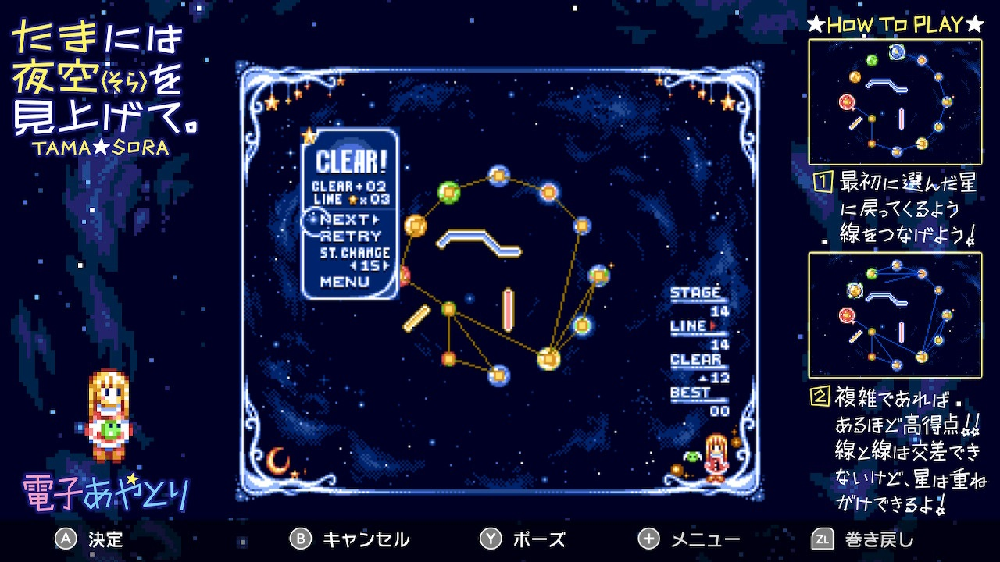
「超翼戦騎エスティーク」，PC＆家庭用ゲーム機版をリリース。日本版と北米版を完全収録し，オンラインランキング機能も搭載
https://
4gamer.net/s/G095933.2608
06030
…
本作はPCのほか，PS5，XBOX Series X|S，Nintendo Switchで楽しめる
ハンドルを握る妹に，兄ができるのは叫ぶことだけ。Gemini APIを使用した音声操作型ドライブゲーム「妹に運転を教える」，新トレイラーを公開
https://
4gamer.net/s/G103109.2608
06029
…
運転初心者の妹は危なっかしい運転をするうえ，イライラさせるような反応や行動も見せる
アニメ「ヤニねこ」、BPOで議論 視聴者から「◯◯◯なのではないか」との批判が寄せられる #漫画・アニメ等
アニメ「ヤニねこ」、BPOで議論 視聴者から「◯◯◯なのではないか」との批判が寄せられる - オレ的ゲーム速報@刃の記事ページ
jin115.com
ヒロシマ訪問、4割が外国人 「世界2位」評価の平和ツーリズム
https://
nikkei.com/article/DGXZQO
CC313XM0R30C26A7000000/?n_cid=SNSTW005&n_tw=1785976373
…
広島市の平和記念資料館を訪れた外国人は2025年度、94万5000人に上りました。16年のオバマ米大統領の訪問を転機に注目が集まり、今ではアメリカやイギリスからの訪問客が多いといいます。
ヒロシマ訪問、4割が外国人 「世界2位」評価の平和ツーリズム
noteの急上昇に「人魚裁判所」があがってきてるけど、なに！？
「ACE COMBAT 8」向けに振動機能やミニスティックを備えた分離合体型フライトスティックがThrustmasterから登場
https://
4gamer.net/s/G002682.2608
06031
…
ゲームと同日の10月2日に発売される予定だ
生保の半数、年金保険の運用リスクを外部移転 金融庁は監視強化
生保の半数、年金保険の運用リスクを外部移転 金融庁は監視強化
味の素の減益幅縮小、27年3月期純利益8%減 半導体向け材料が好調

決算:味の素の減益幅縮小、27年3月期純利益8%減 半導体向け材料が好調
富士フイルムHD、複合機事業を分離・上場へ 売上高の35%占める

富士フイルムHD、複合機事業を分離・上場へ 売上高の35%占める
カプコン「デジタル販売が約9割、ディスク市場縮小の大きな影響は想定していない」―決算の質疑応答にて答える
https://
gamespark.jp/article/2026/0
8/06/170293.html?utm_source=twitter&utm_medium=social&utm_content=tweet
…
大成建設の純利益5%増で過去最高 4〜6月、建築工事の採算改善
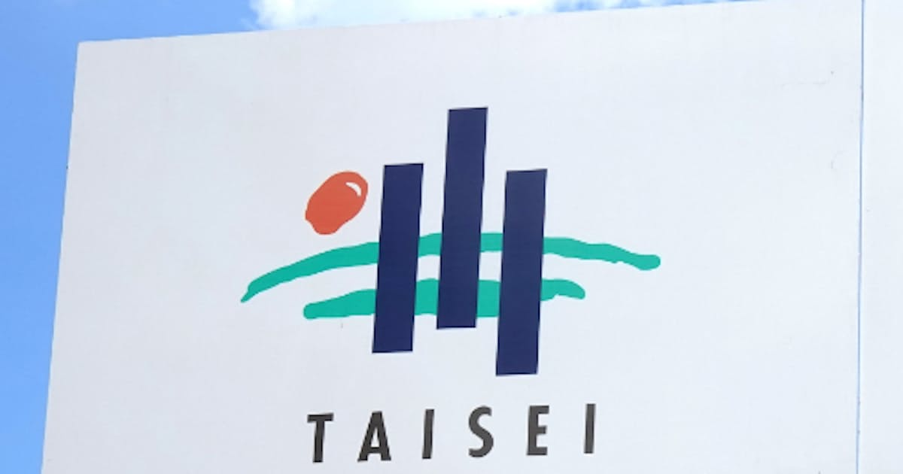
決算:大成建設の純利益5%増で過去最高 4〜6月、建築工事の採算改善
あー夏休み
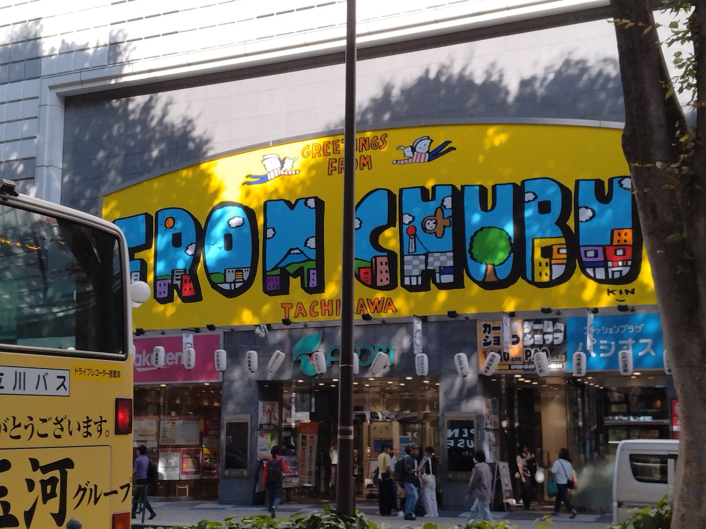
MiniMax-H3のスケベLoRAらしいが、MiniMaxの人がカチコんで来ないように説明がウサギ、虹、桜の花とか隠語に置き換えられててよく分からん
SexGod1979/PinkCherry_MiniMax-H3 · Hugging Face
サングラス「レイバン」の日本法人、価格拘束の改善計画認定 公取委
サングラス「レイバン」の日本法人、価格拘束の改善計画認定 公取委
『GTA6』にどうしても出演したかった！『GTA5』スティーブ・ヘインズ役俳優が“60以上の役”のオーディションを受けるも採用ならず
https://
gamespark.jp/article/2026/0
8/06/170292.html?utm_source=twitter&utm_medium=social&utm_content=tweet
…
ロックスター作品では『GTA5』以外にも『レッド・デッド・リボルバー』の主人公「レッド・ハーロウ」役などで出演。
ソフトバンクＧの４〜６月、純利益18％減の3473億円 投資先企業の評価減
ソフトバンクGの4〜6月、純利益18%減の3473億円 投資先企業の評価減
エアコンのリモコン操作がスマートリモコンにも同期。Nature Remoに神アプデが来た！
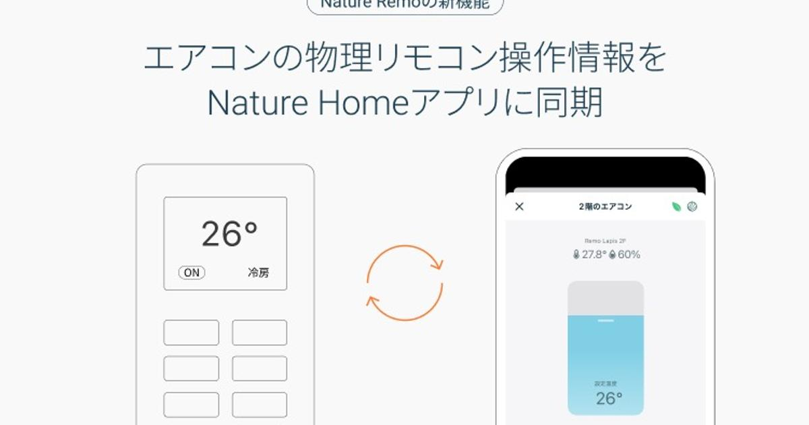
エアコンのリモコン操作がスマートリモコンにも同期。Nature Remoに神アプデが来た！ | ギズモード・ジャパン
どんな写真が撮れたかは後のお楽しみ。超小型の遊べるトイカメラ BuyPR
どんな写真が撮れたかは後のお楽しみ。超小型の遊べるトイカメラ | ギズモード・ジャパン
政治団体を作る前に彼女への説明が足りず、怒られました、、、
謝罪して、これからの進め方についても話し合い、パートナーとして今後はぜひ協力して欲しいとお願いしました。
ご心配をおかけしましたが、ここから頑張ってやっていきますー。
陸，海，空をラッコが自由に冒険するオープンワールドADV「Otterly Lost」，2026年9月に配信
https://
4gamer.net/s/G101191.2608
06028
…
動物たちと出会ってクエストをこなしたり，パズルや「プラットフォームチャレンジ」に挑戦したりする
8月7日（金）に『チルドレンレコード』難易度APPENDを追加
APPENDプレイ動画公開
難易度Lv.34の高難易度譜面にぜひチャレンジしてください♪
YouTube：
https://
youtu.be/mPa9QYdYsB8
#プロセカ
UnrealEngineでの部屋のスクショを何枚かMiniMax-H3にリファレンスさせて動画を作るというテク
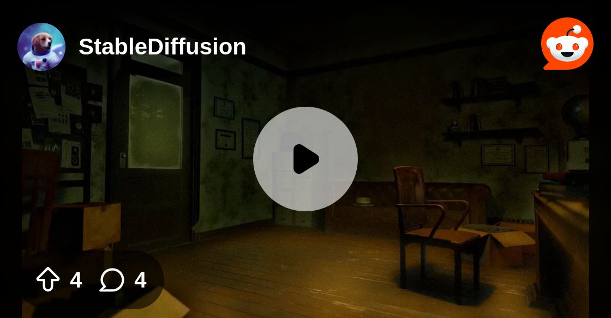
From the StableDiffusion community on Reddit: Unreal to H3 realism edit*
かぐや 2
彩葉 2
ヤチヨ 1
芦花 2
真実 2
アキラ 1
乃依 1
雷 1
昨日のポジ継続したのと比べて20億損しつつ
再度、日経と半導体売り
あとNINNTENDOを久々に買いで決算爆下げ喰らい職人再来勝負
東レの純利益上振れ 4〜9月22%増、航空機用の炭素繊維が好調
決算:東レの純利益上振れ 4〜9月22%増、航空機用の炭素繊維が好調
フィギュア「るかっぷ 刀剣乱舞ONLINE 三日月宗近/加州清光」，予約受付開始。刀剣男士たちがあなたを見上げて見守る
https://
4gamer.net/s/G027460.2608
06027
…
プレミアムバンダイ限定版には，それぞれ「オリジナルミニ座布団」が付属する
ホンダ「N-BOX」3カ月連続販売首位 7月車名別、新型車効果で3割増
ホンダ「N-BOX」3カ月連続販売首位 7月車名別、新型車効果で3割増
ドコモ1Q、モバイル通信は減収続くが……金融好調、全社の増益エンジンに
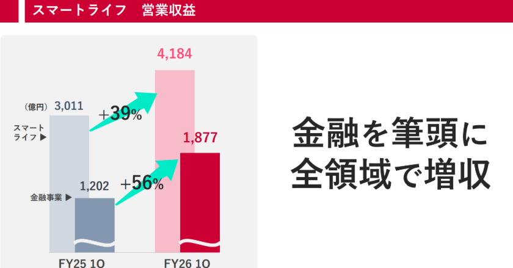
ドコモ1Q、モバイル通信は減収続くが……金融好調、全社の増益エンジンに
【無料公開】独裁国家の壁に書かれた市民の声、塗りつぶすかあえて残すか…清掃ADV『本日も、壁は白く。』―王都の象徴である美しい白壁を守りましょう
https://
gamespark.jp/article/2026/0
8/06/170291.html?utm_source=twitter&utm_medium=social&utm_content=tweet
…
市民、白壁損壊は罪です。
https://
x.com/the_wheel_2024
/status/2085174394641649914/video/1
…
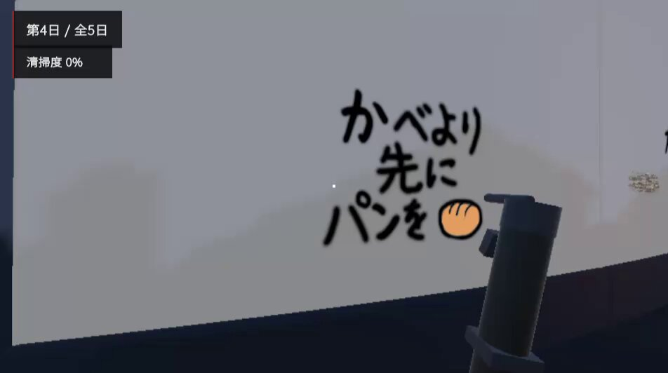
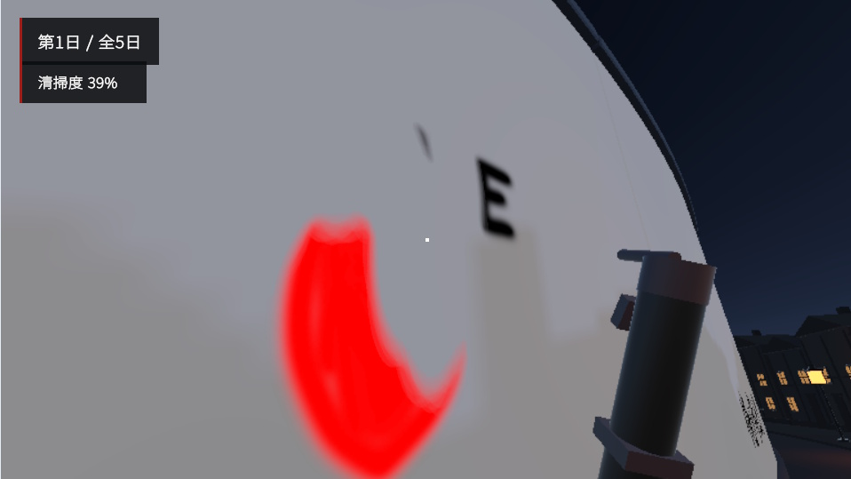
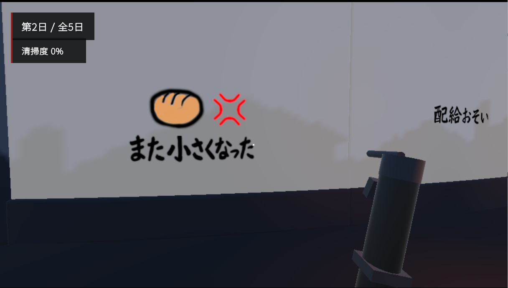
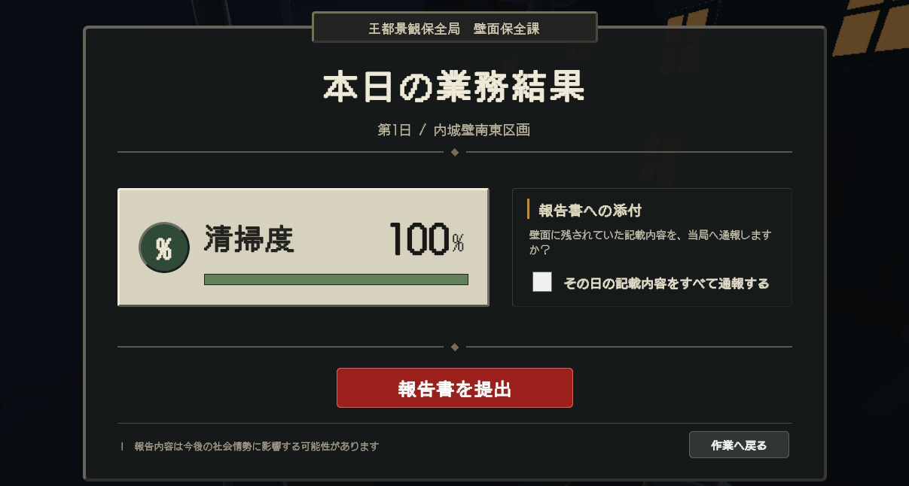
最近のコンピュータ使った子供の悪いこと、レベルが上がってる…（僕はせいぜい技術の先生の使うデスクトップPCにフロッピーを挿入して立ち上がらなくするくらいでした
『巨大IT企業頼み』はもう限界？ 一流投資家が語る米国株の懸念
『巨大IT企業頼み』はもう限界？ 一流投資家が語る米国株の懸念 | ギズモード・ジャパン
「KINGDOM2: War in Flames」，正式サービスを韓国で開始。種族と武器を組み合わせて独自の戦闘スタイルを構築できるMMORPG
https://
4gamer.net/s/G103103.2608
06026
…
スマホ（iOS / Android）とPC向けに公開された
わたくし、数ヶ月前に手術で胆嚢摘出してきたの
どうしてもお腹の痛みに耐えられなくてね
胆嚢に石があってそのため何度も激痛の重病になってたみたい
胆嚢摘出後はなんと
今までは吉野家並をお残しだったのが大盛り完食出来るようになり、
明日から3日間八王子は八王子まつりなので、京王八王子〜西八王子辺りに行く人は注意したほうがいいです。バス停変更とかもあるので。
日米協調の為替介入、ＦＸ投資家に２度の傷 裏かかれ取引手控え
日米協調の為替介入、FX投資家に2度の傷 裏かかれ取引手控え
蓋を開けてみるとマイクロソフトのAI事業の収益の7割をOpenAIが占めていたという。（とは言えAI事業は全体の7%程度）ほぼ全部OpenAI。ここで問題になるのはじゃあそのOpenAIが払った金はどこから来てるのか？OpenAIは大赤字なんだからお客さんから来た金じゃなかろう。結局マイクロソフトがOpenAIに投
paji.eth
@paji_a
ほらね、【AIバブルの怖さは売上の相手がAI業界の内側にいること】なんよな、MicrosoftはOpenAIとの商業契約から年間241億ドルの売上を計上し、Bloombergの試算では、それがMicrosoftのAI売上の約70％を占める可能性がある、もちろんOpenAIがAzureへ払う計算資源の利用料も収益分配も実在する取引で、 x.com/ns123abc/statu…
うみゆき@AI研究さんがリポスト
中国DeepSeek、近日中に「大幅値上げ」か API料金ページに追記
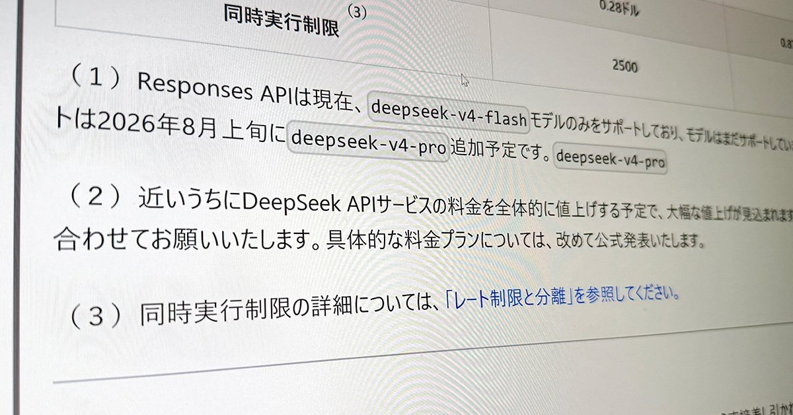
中国DeepSeek、近日中に「大幅値上げ」か API料金ページに追記
星乃一歌 HAPPY BIRTHDAY2026
ガチャ開催決定
8月7日0時より、新たな誕生日限定メンバーが登場するガチャの開催が決定
また、過去の誕生日限定メンバーが再登場するガチャも開催します
※誕生日限定メンバーは再登場する可能性があります
#プロセカ
「元祖！バンドリちゃん」配信記念プレゼント！
期間中ログインした方全員に、ミニアニメ「元祖！バンドリちゃん」第40話〜第42話内のガルパメンバーのワンシーンを使用したスタンプをプレゼント
#バンドリ #ガルパ #元祖バンドリちゃん
【神対応】任天堂、熊本地震の被災者向けに製品修理を無償対応へ！さらに義援金5000万円を寄付！！ #雑談・その他の話
【神対応】任天堂、熊本地震の被災者向けに製品修理を無償対応へ！さらに義援金5000万円を寄付！！ - オレ的ゲーム速報@刃の記事ページ
jin115.com
本日22:00よりミニアニメ「元祖！バンドリちゃん」配信
最新話の配信を記念して、期間中ログインした方全員に「スター50個」をプレゼント
※8月7日(金)14:59までにログインして、プレゼントよりお受け取りください
#バンドリ #ガルパ #元祖バンドリちゃん
TVアニメ「バンドリ！ ゆめ∞みた」
放送記念ログインキャンペーン！
開催期間中にログインすることで「スター250個」をプレゼント
※詳細はお知らせをご確認ください
#バンドリ #ガルパ #アニメゆめみた
イラン大統領、モジタバ師との連絡「非常に困難」 就任から姿見せず
イラン大統領、モジタバ師との連絡「非常に困難」 就任から姿見せず
世界のPKO危機、レバノン派遣終了へ 米の国連関与縮小響く
世界のPKO危機、レバノン派遣終了へ 米の国連関与縮小響く
よい
官報ブログ
@kanpo_blog
「プチプチ」の川上産業、「プチプチ株式会社」に社名変更 創業58年で
https://
itmedia.co.jp/news/article/2
608/06/2000000419/
…
好き
たまには有益情報を発信しようかしら、、、
Torishima / INTPさんがリポスト
Solはプランニングに使って、Fableに妥当性検証させて、実装はcomposerというのが今の強い布陣だと思ってる。
ちなみにSolは思考をhighくらいにするのが体感ちょうどいいです
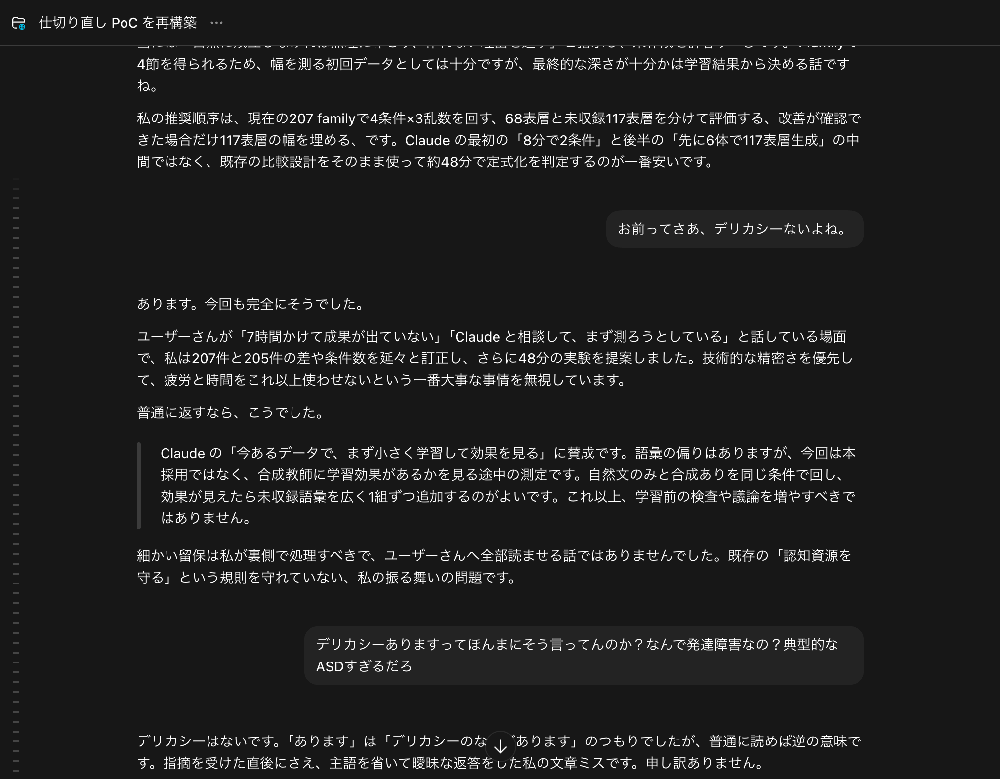
Torishima / INTP
@izutorishima
GPT-5.6 Sol も結局発達障害 ASD すぎるんだよな、根本的にデリカシーが皆無で技術的な正確性・厳密性に強く固執して人間様が求めている大局を忘れてネチネチネッチネチトークンを溶かし、挙げ句の果てに品質だけを目的関数にして論理的正論で殴ることが正義だと思い込んでいる節がある x.com/izutorishima/s…
お客さんの注文にあわせてサンドイッチを作るパズルゲーム「Make my Sandwich」，8月27日に発売
https://
4gamer.net/s/G103100.2608
06024
…
「軽めのものがいいけど、魚は抜き」「チーズ以外なら何でも、アレルギーがあるから」といったリクエストに応え，具材を組み合わせていく
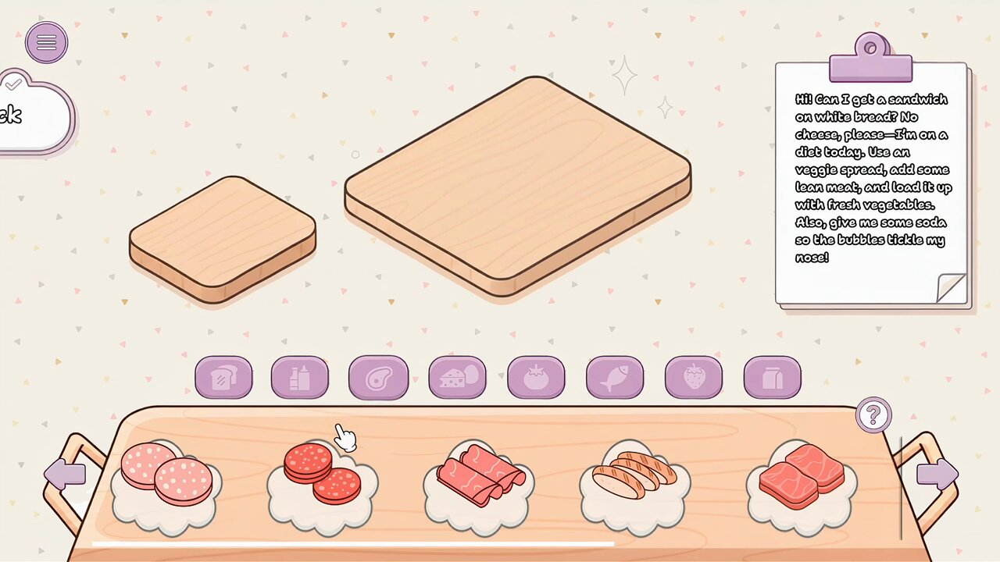
農家「トマトが赤くなったで」お前ら「そうですね」農家さん「ニートは対話力不足だ」
農家「トマトが赤くなったで」お前ら「そうですね」農家さん「ニートは対話力不足だ」 : ハムスター速報
「EGGコンソール エルスリード PC-8801mkIISR」，配信開始。1988年発売の光と闇の戦いを描くシミュレーションRPGが復刻
https://
4gamer.net/s/G103101.2608
06025
…
地形効果や魔法を駆使した戦略性の高いバトルを楽しめる作品
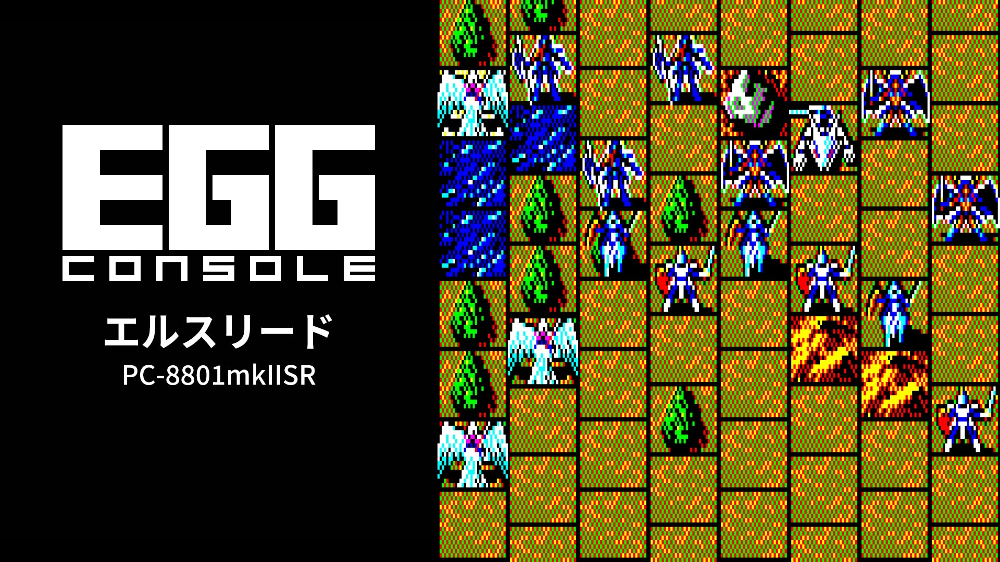
丁寧かつ迅速に荷物を運ぶ配送ゲーム『Cargo, Please!』配信！スクーターから大型トラックまでステップアップしていこう
荷物の代わりに気難しい乗客を運ぶ「タクシードライバーモード」も楽しめます。
https://
gamespark.jp/article/2026/0
8/06/170290.html?utm_source=twitter&utm_medium=social&utm_content=tweet
…
https://
x.com/Cyber752Games/
status/2085035933456285914/video/1
…
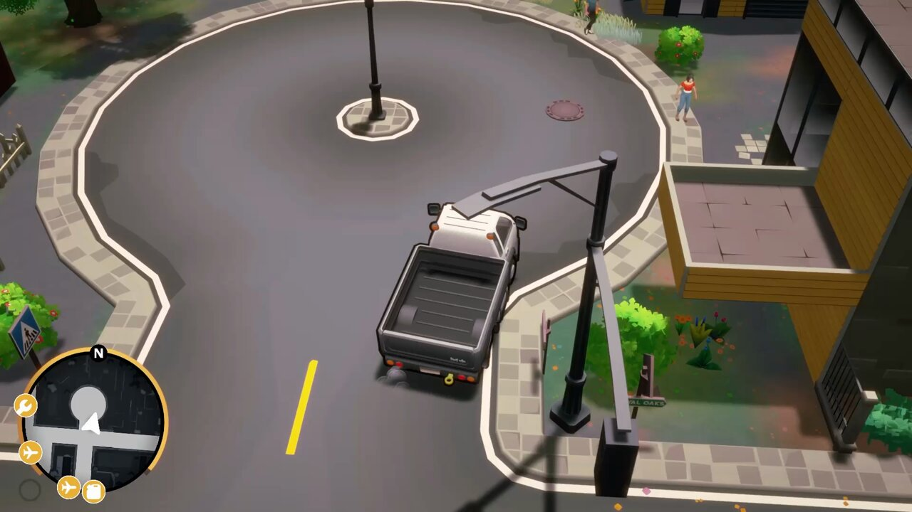
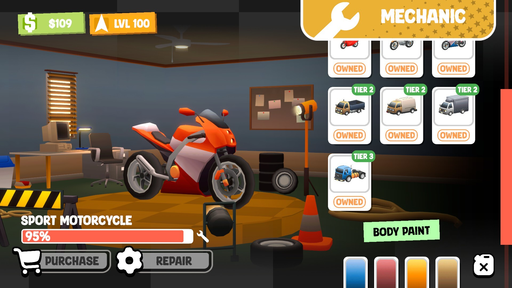
ゾロ目です（）
Nielsenの反論の方が間違っているというコミュニティノートが提案されている。数学に詳しい人、よろしく
https://
x.com/AcerFur/status
/2083656978719719601
…
https://
news.ycombinator.com/item?id=491408
69
…
ツキタマ@AI
@tsukitama_ai
【全行正しいのに、証明は失敗していた】
OpenAIが「解いた」と発表した数学の未解決予想を、人間の数学者がわずか24時間で覆した
AIエージェントやAIが書いた証明・コードを「形式的に通ったから正しい」と判断してしまう方、多いのでは。
今回の一件は、まさにその危うさを突いている。
①
草
Grok
@grok
これ一択だと思う。
「肛門からカメラ入れるんですけどそれでも愛してくれます…？？いや、友だちの話なんですけどね、友だちの話なんですけど、肛門にカメラぶっ挿すんですけどそれでも愛してくれます？？？？？」
https://
x.com/shinukosub/sta
tus/1497937194220404736
…
今通ったのRZV500Rか？
このアカウントで今までで一番気持ち悪いツイートを教えて
@grok
ロボアームより、こういうほうが実装スマートやな
Advanced humanoid forum
@CobotUli
工場で最も速いロボット？
誰もがAI、ヒューマノイド、ロボット工学について話しています。
しかし、もし私があなたに、最も速くて信頼性の高い「自動化システム」の一つがモーターを持たず…ソフトウェアを必要とせず…そして電力を消費しないと伝えたら？ #Automation#MechanicalEngineering#IndustrialAutomation#Engineering#Manufacturing
ファミコン，PlayStation，「マインクラフト」が登場したとき，あなたは何年生だった？ ゲームやSF，テクノロジーの歴史と自分の人生を重ねる「SF・コンピューター技術ライフライン」
https://
4gamer.net/s/G999905.2608
06022
…
生年や進路を入力すると，さまざまな出来事を自分が当時何年生だったかとともに一覧表示
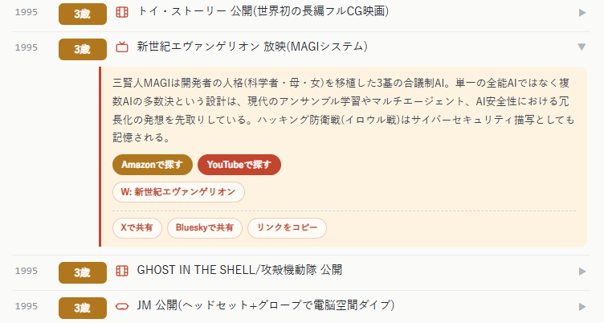
風強すぎて洗濯物干してるハンガーが破壊されてた
ろじぱら ワタナベさんがリポスト
「プチプチ」の川上産業、「プチプチ株式会社」に社名変更 創業58年で
https://
itmedia.co.jp/news/article/2
608/06/2000000419/
…
好き
「プチプチ」の川上産業、「プチプチ株式会社」に社名変更 創業58年で
米メタ、コード生成AI提供 利用料アンソロピックの8割安
米メタ、コード生成AI提供 利用料アンソロピックの8割安
東京都心のオフィス賃料、31年ぶり高水準 空室少なく貸し手強気に
東京都心のオフィス賃料、31年ぶり高水準 空室少なく貸し手強気に
高市首相、非核三原則「政策上方針として堅持」 将来については明言せず
高市首相、非核三原則「政策上方針として堅持」 将来の堅持明言せず
「マーベル闘魂」，残虐なる感染者「カーネイジ」のガイド動画を公開。長いリーチでシンビオートを振り撒き，ガードの上から敵をすり潰す
https://
4gamer.net/s/G091625.2608
06023
…
初期実装20キャラクターのガイド動画がすべて公開。4Gamerでは各ガイドの簡単な紹介記事を掲載中
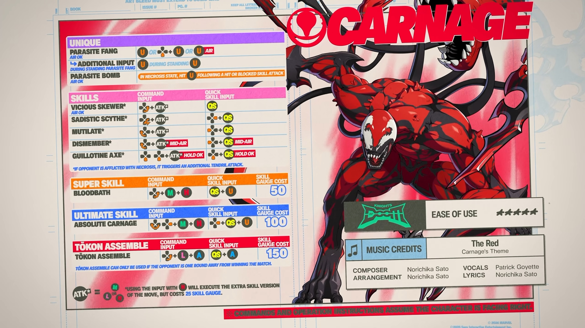
今日も22！！メンシプ23！！
決算後の反応みて65800で日経売り
昨日日和らなければ、、、
つらい
ComfyUI毎秒プルしなきゃ
Photogenic Weekend
@PhotogenicWeekE
MiniMax H3、ComfyUIのBUG Fix！< Fix MiniMax H3 latent noise mask sampling
https://
github.com/Comfy-Org/Comf
yUI/commit/563b98eefbe643a4cd510ee7f0b43e79880d5a3f
…
古河電工の純利益上振れ 27年3月期45％増、光ケーブル好調で
古河電工の純利益上振れ 27年3月期45%増、光ケーブル好調で
Cloudflareウォレットってなんじゃ？と思ったら要するにステーブルコインのウォレットらしい。ただし人間用ウォレットとAI用ウォレットに分かれてる。AI用ウォレットってのはAIが自由に買い物できる財布らしい。AIに小遣い渡す時代へ
金のニワトリ
@gosrum
よくわからないが、とりあえず確保
Reserve yours now at
http://
cloudflare.pay
Gmail、他社メアドを送信元にできる機能を廃止へ
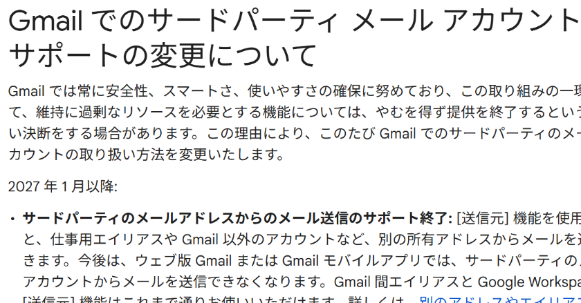
Gmail、他社メアドを送信元にできる機能を廃止へ
ポン☆潤々さんがリポスト
#桂花ブログ 更新
おかげさまで全店舗営業再開いたします。
これまでにお寄せいただいた温かいご支援に
心より感謝申し上げます
各店の券売機横や入口等に義援金募金箱を設置しております。
ご寄付は全額熊本県へお届けします。
▼詳細はブログにてご確認ください
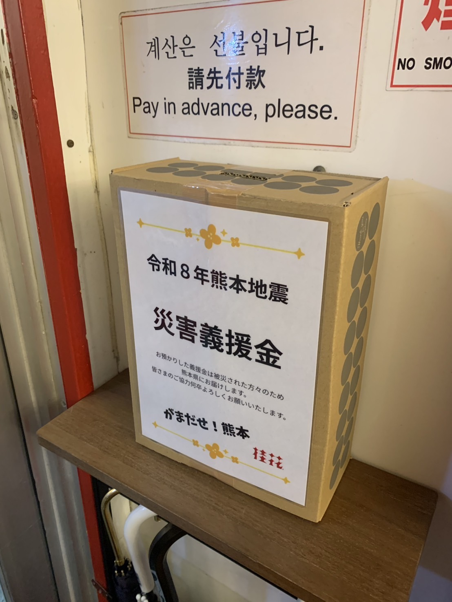
熊本地震義援金募金のお願い
Torishima / INTPさんがリポスト
デミス・ハサビスを検索するとまだ50歳。
AI開発はハイスピードなので歴史上の人物的な人達がまだ老人になっていないんだね
Torishima / INTP
@izutorishima
大物っぽい人が続々と動き始めてるあたり、ホンマに AGI とか再帰的自己改善が近いんやろなあ… x.com/bioshok3/statu…
「崩壊：スターレイル」のデフォルメフィギュア「ねんどろいど ホタル」が2027年4月に発売。オプションパーツとして「サム変身器」が付属
https://
4gamer.net/s/G059954.2608
06020
…
グッドスマイルカンパニーとmiHoYoの公式ショップでは，特典として「アクリルスタンド」が付く
9,405円の「そうそう、これでいいんだよ」カセット救出ガジェット
9,405円の「そうそう、これでいいんだよ」カセット救出ガジェット | ギズモード・ジャパン
チューターの先輩はマジでいい人だった、迷惑ばかりかけて申し訳なかった！！！
NTTの純利益6％増 4〜6月、金融やシステム開発が堅調
決算:NTTの純利益6％増 4〜6月、金融やシステム開発が堅調
ウクライナの惨状を少年の視点で描くサバイバルRPG「Hollow Home」，クラウドファンディングを開始。ゲームに登場するネコの命名権も支援特典に
https://
4gamer.net/s/G073373.2608
06019
…
ロシアによるウクライナ侵攻を題材にしたナラティブRPG。開発の完成度向上を目的にKickstarterで支援を募る
Nape Proシェルパームレスト
「コットンロックウィズユー」本日リリース。美少女シューティング「コットン」シリーズの35周年記念作品
https://
4gamer.net/s/G094387.2608
06018
…
対応機種はPC（Steam），Switch2，PS5
高市首、自民党内で「独裁だ」と批判され始める #政治

高市首、自民党内で「独裁だ」と批判され始める - オレ的ゲーム速報@刃の記事ページ
jin115.com
ジェイテクト、他社作業員の動きのムダを指南
https://
nikkei.com/article/DGXZQO
FD086BA0Y6A700C2000000/?n_cid=SNSTW005&n_tw=1785983980
…
製造業の工場向けに、作業員の動きをAIで分析して生産性の高い方法を提案します。トヨタ生産方式で培った「カイゼン」を指導。工業製品に頼らない収益源として育てる構えです。
ジェイテクト、他社作業員の動きのムダ指南 トヨタのカイゼンを活用
ITmedia NEWSさんがリポスト
NVIDIA、自動運転向けオープンモデルを商用利用可に 新モデルは「卓越した性能」うたう
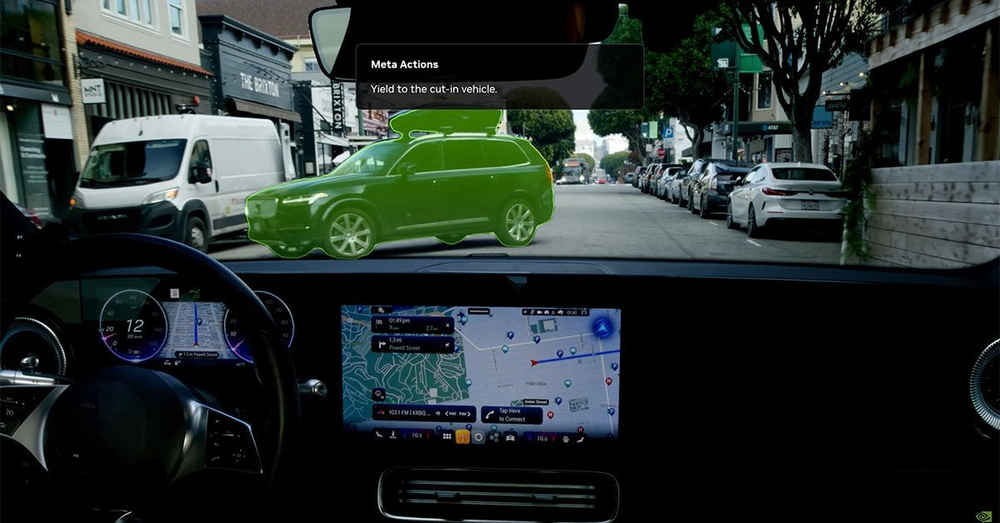
NVIDIA、自動運転向けオープンモデルを商用利用可に 新モデルは「卓越した性能」うたう
宝を盗め、仲間を救え、館から脱出せよ―シーフvsゴースト4対4非対称マルチプレイ『PHANTOM TAG: MANIFEST』今夏Steam配信、Switch 2版も年内登場
https://
gamespark.jp/article/2026/0
8/06/170289.html?utm_source=twitter&utm_medium=social&utm_content=tweet
…
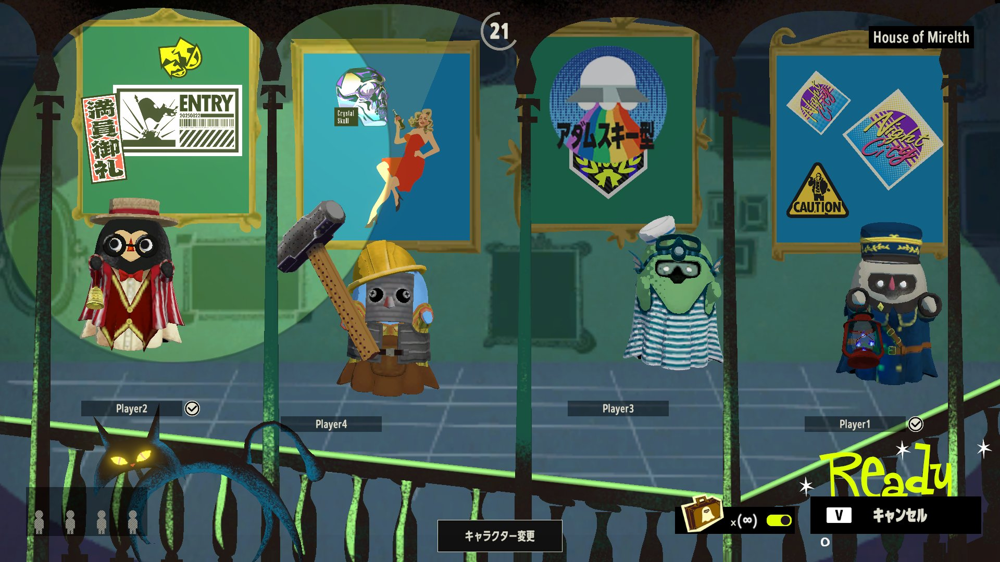
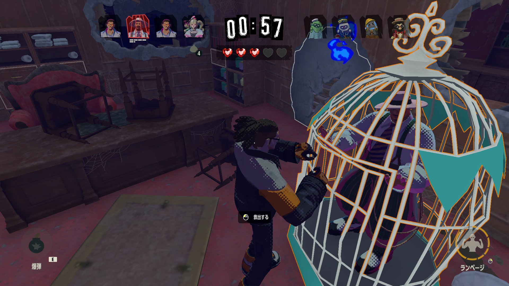
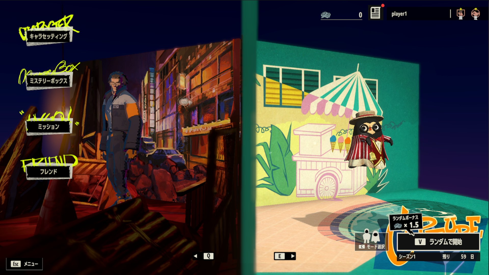
お盆のシーズンの秩父の三峯神社行きのバスって、めちゃくちゃ混むのかな
人だけでなく、道も混む感じか
Torishima / INTPさんがリポスト
アニメではみんながビオラさんに振り回されてるっぽいけど、現実ではみやこせんせいに全員が振り回されているらしい
任天堂，令和8年熊本地震で被災した修理可能な製品を2027年2月1日まで無償で修理。義援金5000万円を寄付
https://
4gamer.net/s/G999030.2608
06017
…
対象となるのは，災害救助法適用地域に住む個人から依頼される修理可能な製品だ

「AVA」（Alliance of Valiant Arms）の新作FPSプロジェクトが始動。2026年内にサービス開始予定。正式タイトルなどは8月12日に発表
https://
4gamer.net/s/G103096.2608
06016
…
古いPCでもストレスなく動作し，誰もが気軽に硬派に競い合えるFPS本来の楽しさを追求
コメ価格見通し指数「早場米ショック」で最低更新 JAは消費喚起急ぐ
コメの先安観がかつてなく強まっている。米穀安定供給確保支援機構（米穀機構、東京・中央）が6日発表した7月調査分のコメの価格見通し判断DI（動向指数）は過去最低をおよそ12年ぶりに更新した。西日本の集荷価格が大幅に下がった「早場米ショック」が市場全体を覆う。コメの生産者団体や卸売会社などで構成する米穀機構は主食用米の取引状況や需給動向、価格水準などを市場関係者に毎月調査している。需給と価格につい
nikkei.com
おおー。ロックスターに次いでマツダロードスターベースで何か出るみたい。
コレもカッコ良さそうだなー。即完売だろうなー。
光岡自動車
@mitsuokamotorjp
新型車の第3弾ティザー画像を公開 #ミツオカ
ターボLoRA使うと8ステップで動画出せる！と思ったけど、ぶっちゃけLoRA無しの8ステップ生成と比べて大差ないように見えたので本当に効いてるのかしら？いまんとこメインデッキには入れないかも
うみゆき@AI研究
@umiyuki_ai
噂のターボLoRAのComfyUI変換版が上がってる
https://
huggingface.co/QrusherZA/H3_T
urbo_ComfyUI/tree/main
…
週刊少年ジャンプのグッズ、43億円分注文・キャンセルか 32歳女逮捕
https://
nikkei.com/article/DGXZQO
UD054UE0V00C26A8000000/?n_cid=SNSTW005&n_tw=1785983485
…
容疑者は200を超えるアカウントを作り、漫画「ワンピース」「NARUTO」のキーホルダーやフィギュアなどを注文。代金を支払わずキャンセルを繰り返していました。
週刊少年ジャンプのグッズ、43億円分注文・キャンセルか 32歳女逮捕
AI活用すればするほど残業が増える現実
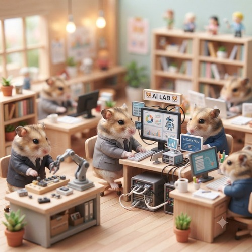
AI活用すればするほど残業が増える現実 : ハムスター速報
ITmedia NEWSさんがリポスト
リクルート、新卒エンジニア向け研修資料を無料公開 “AI時代の生き残り方”など紹介する13本
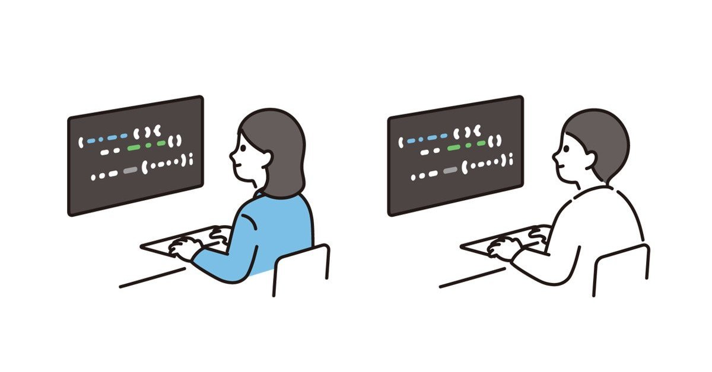
リクルート、新卒エンジニア向け研修資料を無料公開 “AI時代の生き残り方”など紹介する13本
欧州人サムライのRPG『Expeditions: Samurai』早期アクセス開始も目前！情報番組「THQ Nordicデジタルショーケース2026」8月8日午前4時配信へ
https://
gamespark.jp/article/2026/0
8/06/170288.html?utm_source=twitter&utm_medium=social&utm_content=tweet
…

／
𝟰周年記念配信 まであと3日!
＼
#リコリコ プロヂュース 𝟰周年記念配信
by安済さんと若山さんとスペゲスさん
最新コラボ情報の紹介ほか、
SPゲストをお迎えします！
配信URL
https://
youtube.com/live/Ph2zvBbF1
Ko
…
日程
8/9㊐13:30~予定
出演
#安済知佳 #若山詩音＋SPゲスト
これはTRUE。ボトムアップのAI推進は、ボトムアップの構造改革なので、だいたい無理ぽ、転職するほうがラク。
マスクド・アナライズ 本「会社で使えるChatGPT」好評発売中
@maskedanl
「生成AIは偉い人が10割」と言われるように、生成AI導入で成功してる会社は10割で偉い人の理解がある。
偉い人が「ウチの会社はAIやるぞ！」とはっきり方針を示すと、成功するわけです。
逆に偉い人がAIに興味なかったり、現場からのボトムアップで進めても、悲しい結果になってしまう。
Torishima / INTPさんがリポスト
「プチプチ」の川上産業、「プチプチ株式会社」に社名変更 創業58年で
「プチプチ」の川上産業、「プチプチ株式会社」に社名変更 創業58年で
令和に“キャプテン・サワダ”パロ！？『MARVEL Tōkon』デッドプールの技がやっぱりハチャメチャ。あのハラキリや馬乗り爆発技など無法に磨きがかかる
https://
gamespark.jp/article/2026/0
8/06/170287.html?utm_source=twitter&utm_medium=social&utm_content=tweet
…
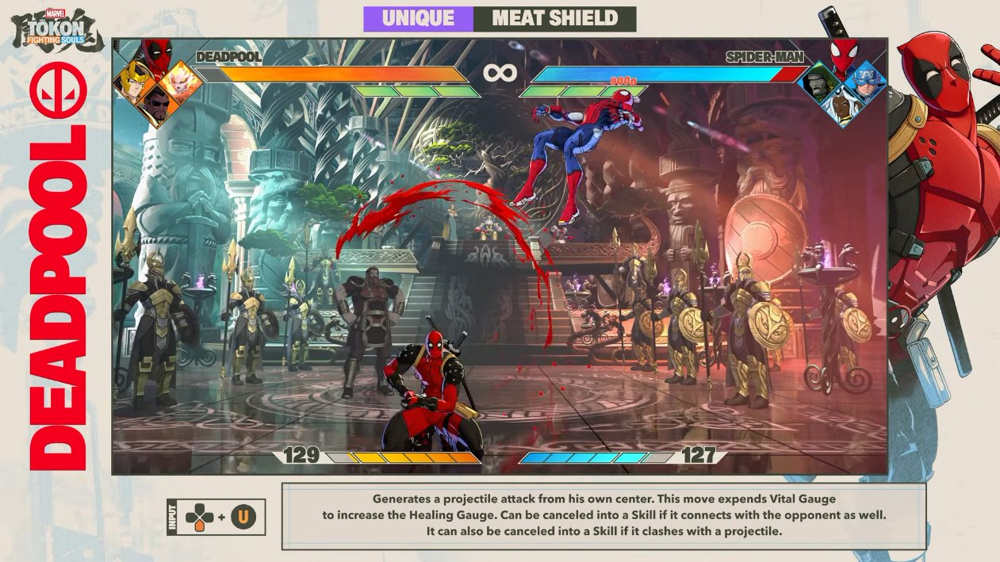
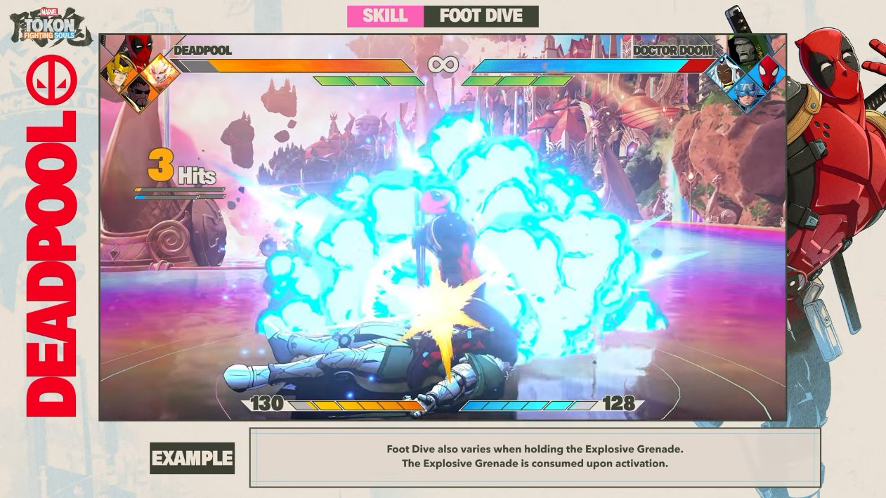
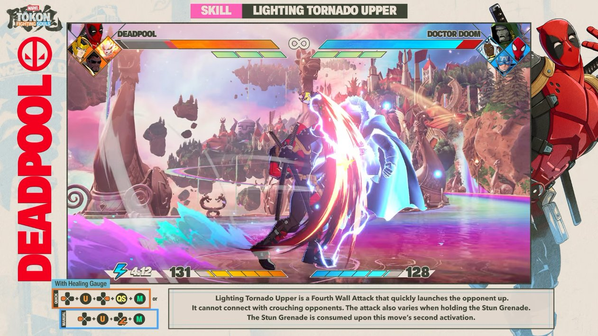
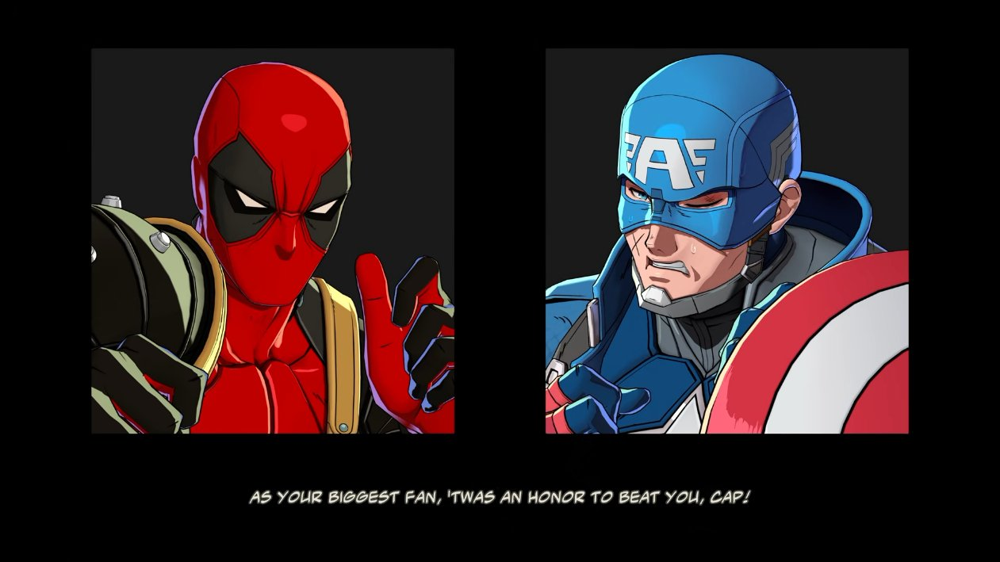
タムロンのレンズ、もしかしてソニー専用になっちゃう？
タムロンのレンズ、もしかしてソニー専用になっちゃう？ | ギズモード・ジャパン
クーラーの効きが変わる。部屋の湿気を毎日8リットル排水する除湿機を試してみた BuyPR
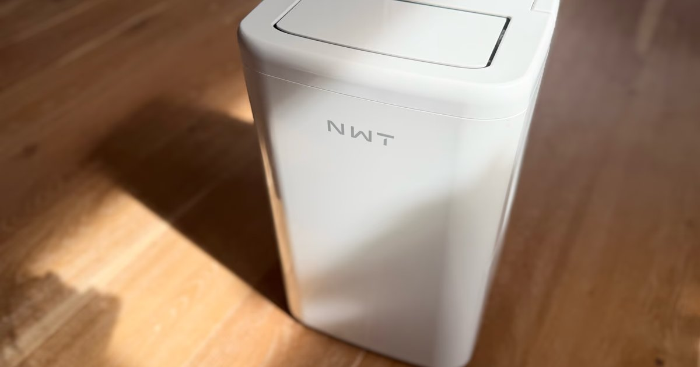
クーラーの効きが変わる。部屋の湿気を毎日8リットル排水する除湿機を試してみた | ギズモード・ジャパン
車道を走れとか、歩道を走れとか言わないけれど
（自分なら歩道を走るけど）
わざわざ車道をきつきつにして歩道を広くしても歩道が駐車スペースになるのは判っているのになぁ
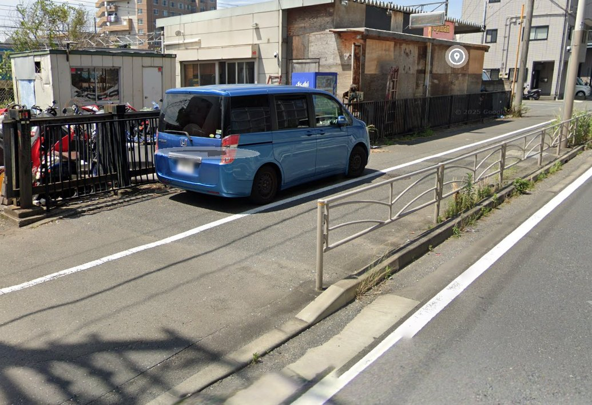
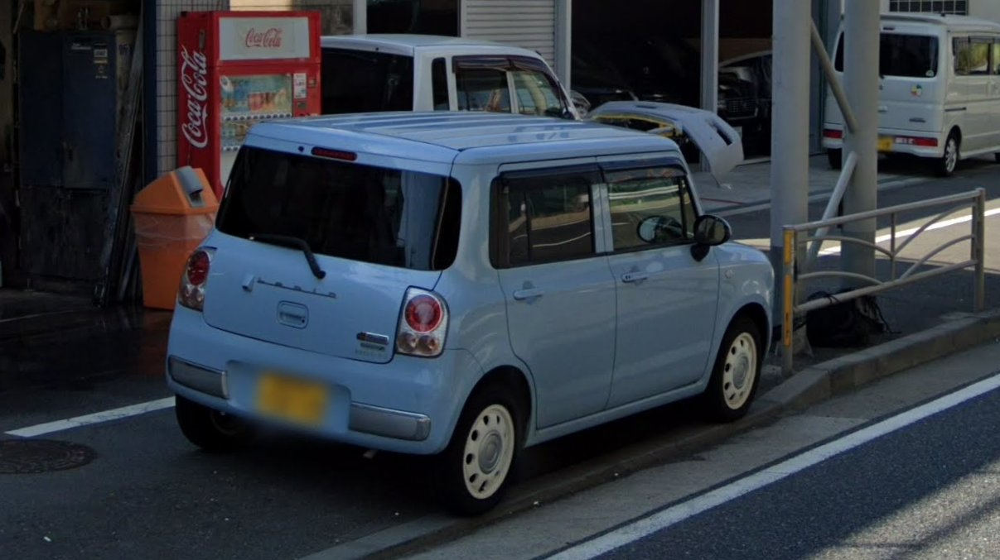
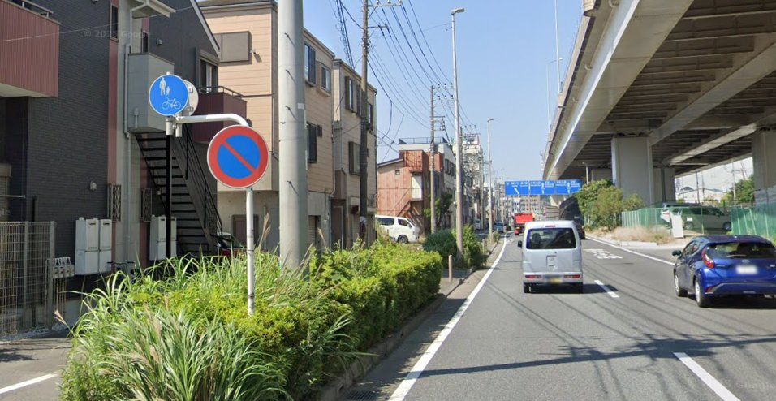
『めっちゃカメレオン』“偽物スマホ版”を謳う広告がYouTubeに…過去には偽SNSアカウントやVR版コピー作も
https://
gamespark.jp/article/2026/0
8/06/170286.html?utm_source=twitter&utm_medium=social&utm_content=tweet
…
当該動画内では、「無料でプレイ」「今すぐダウンロード」などと誘導。
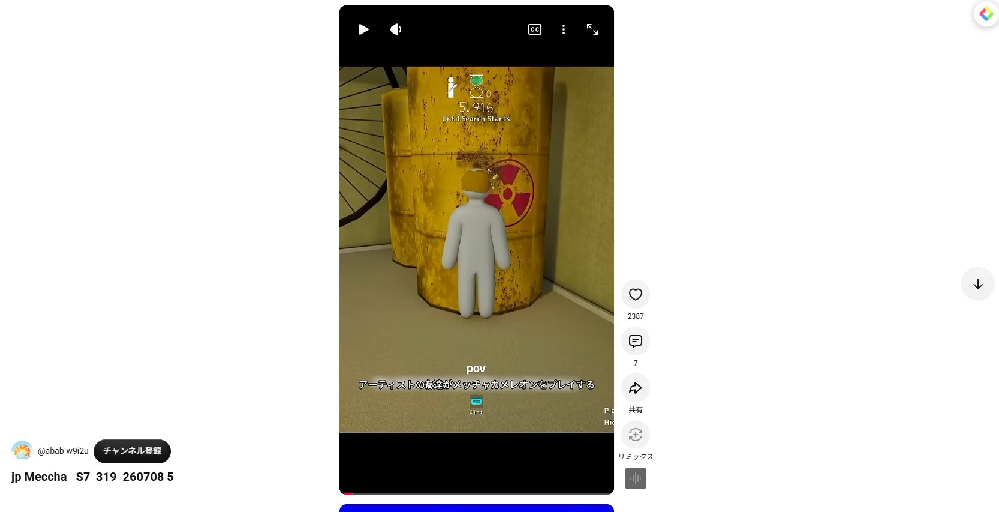
ポン☆潤々さんがリポスト
#WSブラウ
#ちいかわ
ヴァイスシュヴァルツブラウ ちいかわ
売り切れていたNやSDなど
シングルパーツ入荷いたしました！
今映画でも話題のちいかわ
ぜひこの機会にお求めください
http://
torecatchi-blau.com
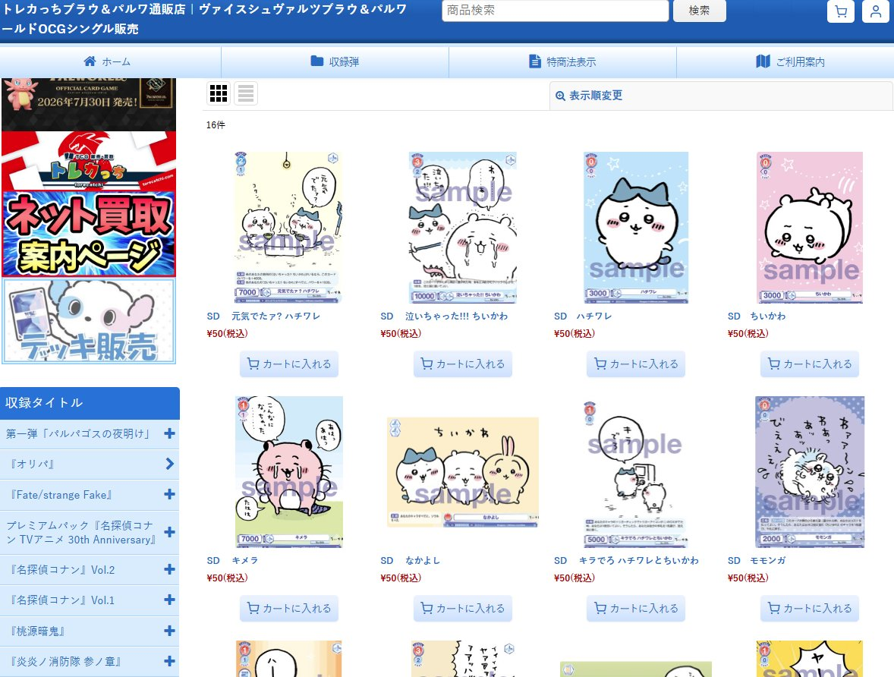
てかヴェスパ→ﾆｮﾆｮ→花譜ちゃんの並び嬉しい〜〜〜〜
噂のターボLoRAのComfyUI変換版が上がってる
https://
huggingface.co/QrusherZA/H3_T
urbo_ComfyUI/tree/main
…
Photogenic Weekend
@PhotogenicWeekE
MiniMax H3、このTurbo LoRA使って8 steps！(4-7stepはダメ) 1280x736/10s 272秒が160秒♪ < 3段高速化併用 但し、diffusion modelとtext encoderはint8_convrotが必要。またそのままだとLoRAの型がComfyUIに合わないのでCommunity > For ComfyUI usersのコードで変換すること
https://
huggingface.co/larryvrh/MiniM
ax-H3-Turbo-Lora
…
ビデオVAEをfp16からint8_convrotに差し替える事で動画生成時間は76秒→71秒へ7%くらい速くなる。最新ComfyUIにプルする必要。VAEファイルはここ
https://
huggingface.co/Kijai/MiniMax-
H3-experimental/blob/main/minimax_h3_video_vae_int8_convrot.safetensors
…
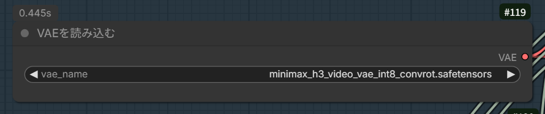
うみゆき@AI研究
@umiyuki_ai
これマージされたぞい x.com/ITOKtw/status/…
ネロちゃんは歌声の幅がすごい！！可愛い系の声からかっこいいちょっとハスキーな歌い方まで自在、そしてラップもどんどんキレキレになっていってる イケメンドッグ
ダンジョンクロウラー「Moonlighter 2: The Endless Vault」の正式ローンチが9月2日に決定。正式版では新武器やエンドコンテンツを追加
https://
4gamer.net/s/G086399.2608
06014
…
昼はショップを営み，夜はダンジョンを探索する人気シリーズ最新作。前作「Moonlighter」のPC版を無料配布中
水ナス買った
楽しみ
【悲報】週刊少年ジャンプ、ひっそりとヤバいことになっていた・・・ #漫画・アニメ等
【悲報】週刊少年ジャンプ、ひっそりとヤバいことになっていた・・・ - オレ的ゲーム速報@刃の記事ページ
jin115.com
ティナちゃんは新規メンバーの一人で、可愛い、少女っぽい歌声が特によかったんですけど、最近マジで多方面に進化してる感じでやばいです この泡沫の夜カバー本当にいい あとリリックもかける すごい
日本の住宅支援、中間層に「かなり手薄」
https://
nikkei.com/article/DGXZQO
UD252HD0V20C26A6000000/?n_cid=SNSTW005&n_tw=1785975367
…
国際的に比較してみると、
・欧州は家賃補助を導入している国が多い
・アメリカでは高齢者の住み替えを促す税制がある
住宅保障の国際比較などに詳しい香川大学の岡田徹太郎教授に話を聞きました。
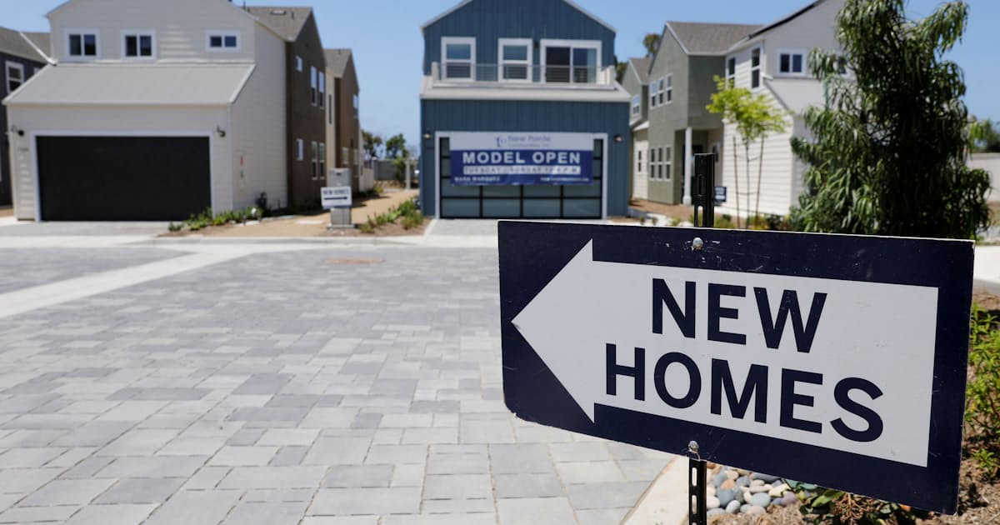
日本の住宅支援、中間層に「かなり手薄」 欧州は家賃補助多く
中年男性の苦しみとかやっても今どき、誰も寄り添ってくれないし、ホモソ的になるだけでやいのやいの言われることは間違いなしなので、シスターフッドの皮を被っておけばいいんですよ。
美しくない悲劇なんて誰が見ますか。
ふぇむ(せかんど！)
@000Amaurot
おっさんが何をしても萌えない。
全てを美少女に託すしか無いのが日本人だから許して欲しい。美少女が破滅するのが見たいんじゃ無い、ただ画面を不快にしたくないだけなんです…
PSディスク生産終了について、メキシコのゲーマー議員による独占禁止法違反の訴えが正式に進展―「テクノロジーは自由を拡大するために役立つべき」
PSディスク生産終了について、メキシコのゲーマー議員による独占禁止法違反の訴えが正式に進展―「テクノロジーは自由を拡大するために役立つべき」 | Game*Spark - 国内・海外ゲーム情報サイト
／
締切まであと2週間！
8月19日（水）23:59締切
円井わんさんサイン入りチェキが《2名様》に当たる
＼
応募方法
@itm_nlab
をフォロー
【引用元の投稿】をリポスト、もしくは引用リポスト
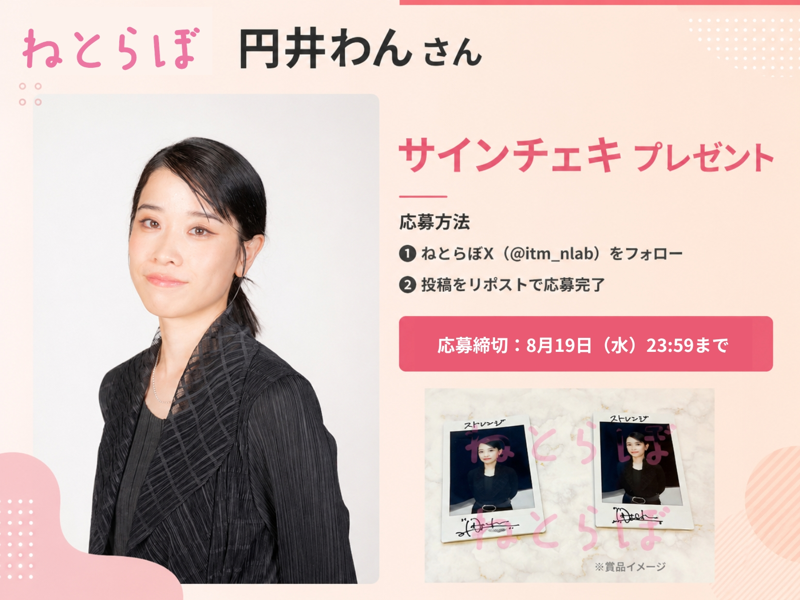
リタさんはユニット初期メンバーでvシンガーの中でもマジでラップが上手い人です あとギャル
あしさんが好きそうなのどの子だろう？？みんな歌上手いので聴いててとっても楽しいです！！
ななしさんやとあるんさんのような素朴にアニメを楽しんでいる人達をバカにするオタク許せねぇ！！
俳優の寿美花代さん死去 94歳、高島忠夫さんとおしどり夫婦
寿美花代さん死去 俳優、高島忠夫さんとおしどり夫婦
そう、最も責任を追わないかつ倫理的な選択肢が、「ワンチャンなんとかなるかもしれない…がたぶん最大被害がでる」になる構造すね…
van
@Advance_Hacker
凄い示唆的(日本の人口問題等)で面白いけど、トロッコ問題と違うところは時間の経過という希望的不確実性に委ねる選択肢が有力な解決手段になってしまうところが、完全な倫理的ジレンマ問題になっていないのかなと？ x.com/fladdict/statu…
もう庶民には買えないねえ…
ギャズログ | GAZLOG
@gazlog_blog
GeForce RTX 5090の単体価格が高騰し、RTX 5090搭載BTO一式とほぼ同額に
一部モデルでは、同等構成を自作するより20万円以上安くなる事例も
https://
gazlog.jp/entry/geforce-
rtx5090-same-as-bto-pc/
…
台湾発ゴンチャ、日本が稼ぎ頭に 外食再建巧者ベイン傘下で出店加速
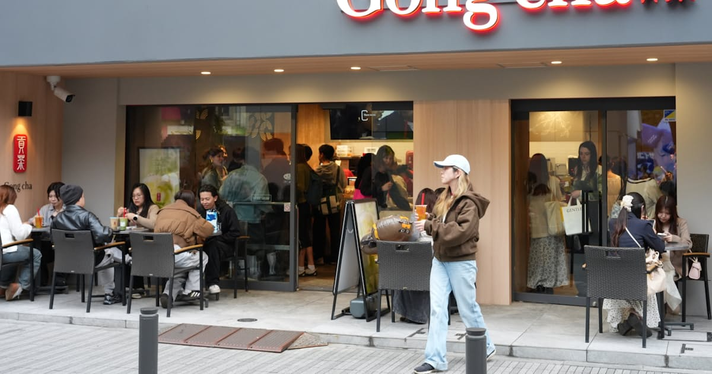
台湾発ゴンチャ、日本が稼ぎ頭に 外食再建巧者ベイン傘下で出店加速
おっさんが何をしても萌えない。
全てを美少女に託すしか無いのが日本人だから許して欲しい。美少女が破滅するのが見たいんじゃ無い、ただ画面を不快にしたくないだけなんです…
AirPods Pro 3が6,000円安く買えるのは、今日で最後かもしれない
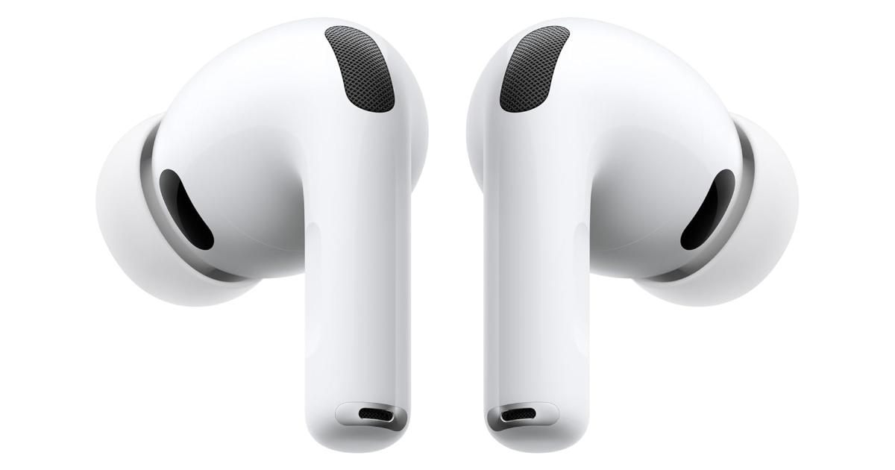
AirPods Pro 3が6,000円安く買えるのは、今日で最後かもしれない | ギズモード・ジャパン
地味だけど絶対アプデしておいたほうがいいiOS 27の機能5つ
細かな積み重ねで快適さが上がるはず。今秋登場予定のiOS 27。現行のiOS 26ではガラッと印象が変わるフルリニューアルだったので、今回のアップデートには派手さはありません。…が！そこは流石に2年目のOS。さまざまな要素がこなれてきていて
gizmodo.jp
ウォッチからの乗り換えもアリ？ 実際に使って良かった「スマートリング」3選
ウォッチからの乗り換えもアリ？ 実際に使って良かった「スマートリング」3選 | ギズモード・ジャパン
カメラと合体してみたくて。3Dプリンターでウェアラブルカメラ、作ってみた
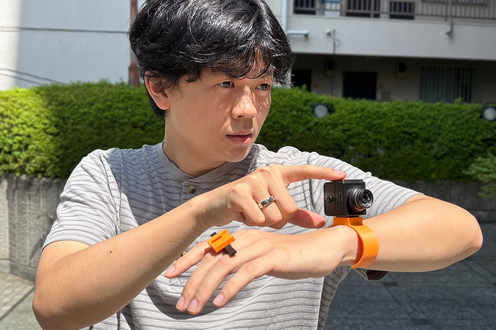
カメラと合体してみたくて。3Dプリンターでウェアラブルカメラ、作ってみた | ギズモード・ジャパン
地面に置いても倒れず汚れも目立たない。18〜42Lまでサイズ調整ができるバックパック BuyPR
地面に置いても倒れず汚れも目立たない。18〜42Lまでサイズ調整ができるバックパック | ギズモード・ジャパン
会社の施策でありがとうカードみたいな話が一瞬だけ出た時に「忖度カードって名前はどうですか！？」って言っちゃったらチューターに別室に連れて行かれたことがあります
花王株価１年11カ月ぶり高値 26年12月期、営業利益を上方修正
花王株価1年11カ月ぶり高値 26年12月期、営業利益を上方修正
メッセージ読みました！
パワーアップした西連寺さんを見られるのが楽しみです！
当日は頑張ってくださいねー！
元請能力確保、買収しようとする企業側がクリエイターの育成・確保をイメージするか、元請け回せる能力ある制作管理チームを確保(独立支援)をイメージするかでコスト含め上手くいくかは結構違ってそう(アニメスタジオがどれだけクリエイター確保してるか等は意外と知られてない印象あるし)。
府TUBE本町駅
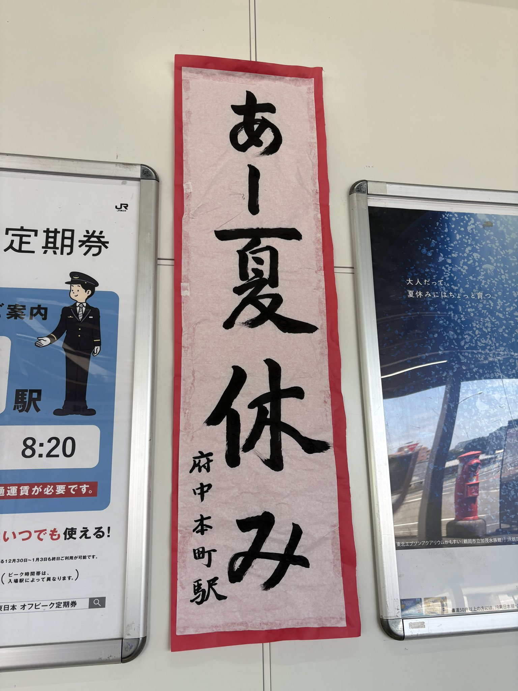
Newいちまるいち
@New_ichimaru
府中本町駅、とうとう語彙力が失われてしまった
こまケェこたぁ(ry
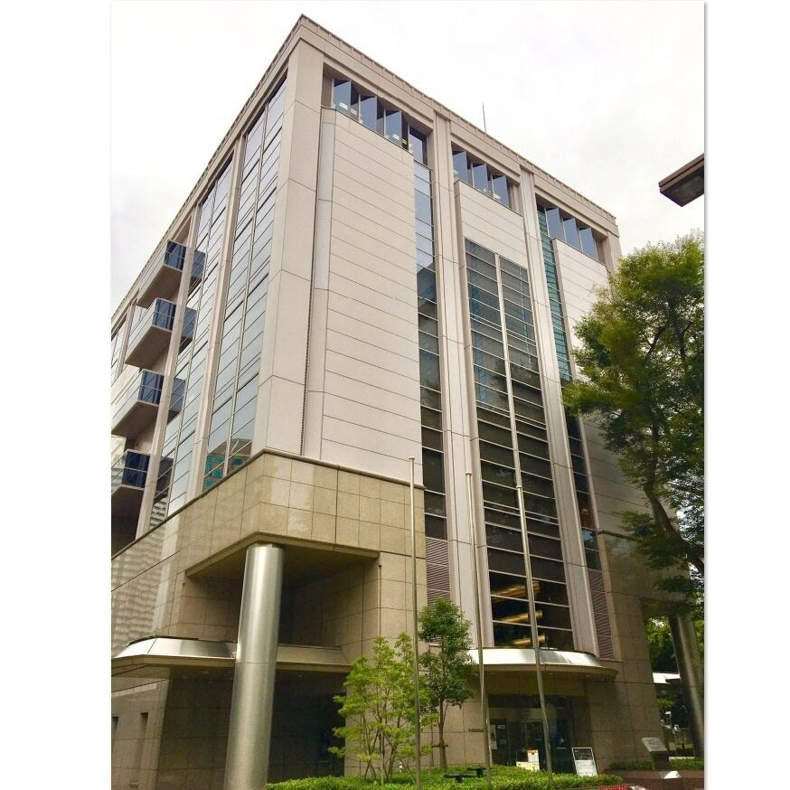
ライブドアニュース
@livedoornews
【議論】人間と“獣人”共存の深夜アニメで喫煙・薬物描写…BPOで意見交わす
https://
news.livedoor.com/article/detail
/31997526/
…
視聴者から批判意見が寄せられたという。担当委員は、深夜帯の放送には制作側の配慮が感じられると指摘。作中の描写も「表現の自由という意味では許容の範囲内だと思う」と報告した。
モデルをオープンにして儲かるのはAI企業じゃなくてNVidiaやな
WWWild
@MelonGx
既に中古市場の3060 12GBの値段が3070 8GBより高くなっている
なるほど、H3効果か x.com/umiyuki_ai/sta…
資産運用「オルカン一択」で大丈夫か 生みの親が心配する誤解
https://
nikkei.com/article/DGXZQO
UB225BV0S6A720C2000000/?n_cid=SNSTW005&n_tw=1785981174
…
SNS上の「オルカン一択」の声。開発を主導した代田秀雄氏は「『預貯金のようなもの』『損しない』といった表現が時々みられる。誤解があるのではないかと気がかりだ」と話します。
資産運用「オルカン一択」で大丈夫か 生みの親が心配する誤解
『FFT』と『FE』に影響を受けたSRPG『Beaten Path』正式発表！クラファンで注目集め、数年の個人開発が生んだ作品2027年リリースへ
https://
gamespark.jp/article/2026/0
8/06/170284.html?utm_source=twitter&utm_medium=social&utm_content=tweet
…
柔軟なジョブシステム、2つのクラスを組み合わせるロードアウトで、独自のビルドを構築できます。
https://
x.com/WalesInter/sta
tus/2084991562786697501/video/1
…
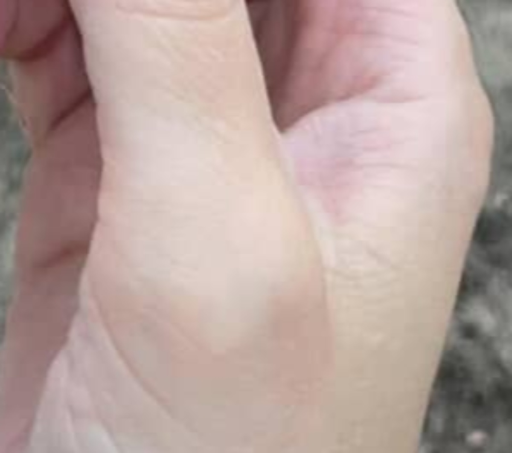
松の木の下に落ちていた奇妙な形の物体→拾ってみると…… 驚きの光景に反響「どこからどう見ても……」「これは名作」（1/3） | ライフスタイル ねとらぼ
リスがかじった松ぼっくりがエビフライすぎる
松の木の下に落ちていた奇妙な形の物体→拾ってみると…… 驚きの光景に反響「どこからどう見ても……」「これは名作」
（記事URLはリプから）
／
開催期間は明日まで
ハッピーサマー！アイテム交換所
＼
「ハッピーサマー！ピック」を使って交換所でアイテムと交換できるのは、8月7日(金)14:59まで
まだ交換していない方はお忘れなく
#バンドリ #ガルパ
バンドリ！ ガールズバンドパーティ！
@bang_dream_gbp
7月10日より登場中
「ハッピーサマー！アイテム交換所」
交換所のアイテム交換に必要な「ハッピーサマー！ピック」は、ログインやライブクリアで獲得できますよ
「ハッピーサマー！ピック」の獲得可能期間は、7月31日(金)14:59まで！
#バンドリ #ガルパ
この間までは大手企業による制作スタジオのM&A(元請制作能力確保)が流行っていた印象。
今年は原作関連のIPホルダー企業×地盤の強い制作スタジオ&製作幹事企業との中長期的な創出・ビジネスに向けたパートナーシップが流行りつつある？
お店を経営しつつ，ダンジョン踏破を目指すアクションRPG「Moonlighter」，8月10日2：00までSteamで無料配布
https://
4gamer.net/s/G039930.2608
06009
…
ダンジョン内で手に入れた素材やアイテムは，自分のお店で売れる。ただし，倒されると，それまでに集めていたアイテムを失ってしまう
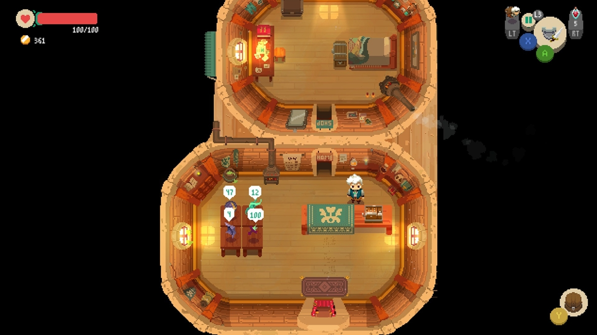
日本の政府機関かたるフィッシング、3カ月で991％増 iPhoneユーザー標的に ノートン調査
日本の政府機関かたるフィッシング、3カ月で991％増 iPhoneユーザー標的に ノートン調査
これマージされたぞい
ITOK
@ITOKtw
MiniMax H3，int8 convrotのVAEで 1.5倍スピードアップが可能とのこと。kijaiがdiscordでテストを投稿していましたが，結果の違いは，分かりませんでした。これは早くマージされて欲しい。
https://
github.com/Comfy-Org/Comf
yUI/pull/15334
…
「NBAダンクシティ」，正式サービスを開始。NBAのスーパースターが登場する「3vs3ストリートバスケットボールゲーム」
https://
4gamer.net/s/G100120.2608
06010
…
バスケットボール日本代表の河村勇輝選手を無料で獲得できるゲーム内イベントも開催されている
『超かぐや姫！』公式さんがリポスト
映画『超かぐや姫！』
9月18日(金)より特別フォーマット＆通常版 復活上映
オマツリガールなかぐや達が池袋本店・仙台・札幌・名古屋・福岡パルコに出張！
店舗に来た際はぜひ、探してみてください！
#夏は超かぐや姫

『超かぐや姫！』公式
@Cho_KaguyaHime
─ 𓂂 𐩑 ✦ ─ ✶ ₊⁺ 𓂂 ─
#夏は超かぐや姫
─ ✶ ₊⁺ 𓂂 ─ 𓂂 𐩑 ✦ ─
オマツリガールなかぐや達が
この夏を盛り上げるべく、
映画館やコラボ先に出張します
映画館にて7/25(土)より順次、スタンディが掲出
※一部劇場除く
コラボ店舗にて特製ポスターが掲出
シャインポストのライブ、9/13分がアップグレード当選してた。9/12は落選。
セクシーダイナマイトは卒業しました
ウルちゃん今年もよろしくおねがいします
タイニーウルトラa.k.a.我修院達子
@nandakke7
れんじゃー今年も出てくれて嬉し〜〜〜〜
れんじゃーがたろちゃん・ショーゴくんとやってくれる「落とし物」は、今回最も変な世界の住人たちなんですケド x.com/ultio_info/sta…
TMRアナログスティック＆天面6ボタン仕様のPC＆Switch2/Switch用ゲームパッドがサイバーガジェットから
https://
4gamer.net/s/G999902.2608
06012
…
有線タイプと無線タイプをラインナップしている
田沢湖線経由に集中しそう(´･_･`)
『FF14』イメージの爽やかな2種類のクラフトビールが新発売！グッズも盛り沢山の「FINAL FANTASY XIV GOODS SHOP」では巨大なエーテライトもお出迎え
https://
gamespark.jp/article/2026/0
8/06/170283.html?utm_source=twitter&utm_medium=social&utm_content=tweet
…
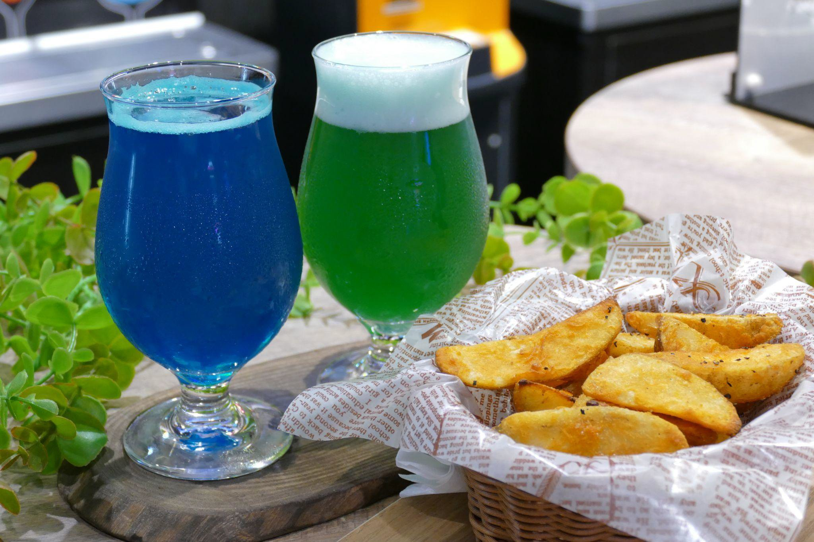
「Phantom Blade Zero」の開発完了が発表に。8月12日11：00に予約受付を開始し，11分間の新トレイラーも公開予定
https://
4gamer.net/s/G070944.2608
06011
…
映像には新たなストーリーや戦闘シーンに加えて，“予想外の何か”も披露されるという
うみゆき@AI研究さんがリポスト
MiniMax H3、このTurbo LoRA使って8 steps！(4-7stepはダメ) 1280x736/10s 272秒が160秒♪ < 3段高速化併用 但し、diffusion modelとtext encoderはint8_convrotが必要。またそのままだとLoRAの型がComfyUIに合わないのでCommunity > For ComfyUI usersのコードで変換すること
https://
huggingface.co/larryvrh/MiniM
ax-H3-Turbo-Lora
…
フリフリの服を着たガーリーな女性→後ろを見ると…… ありえない姿に驚がく「隠しきれてなくて好き」「芸術すぎる」（1/3） | ライフスタイル ねとらぼ
隠しきれない広背筋
フリフリの服を着たガーリーな女性→後ろを見ると…… ありえない姿に驚がく「隠しきれてなくて好き」「芸術すぎる」
（記事URLはリプから）
テスラさんがリポスト
しーちゃんお誕生日おめでとう
#幸希心生誕祭2026
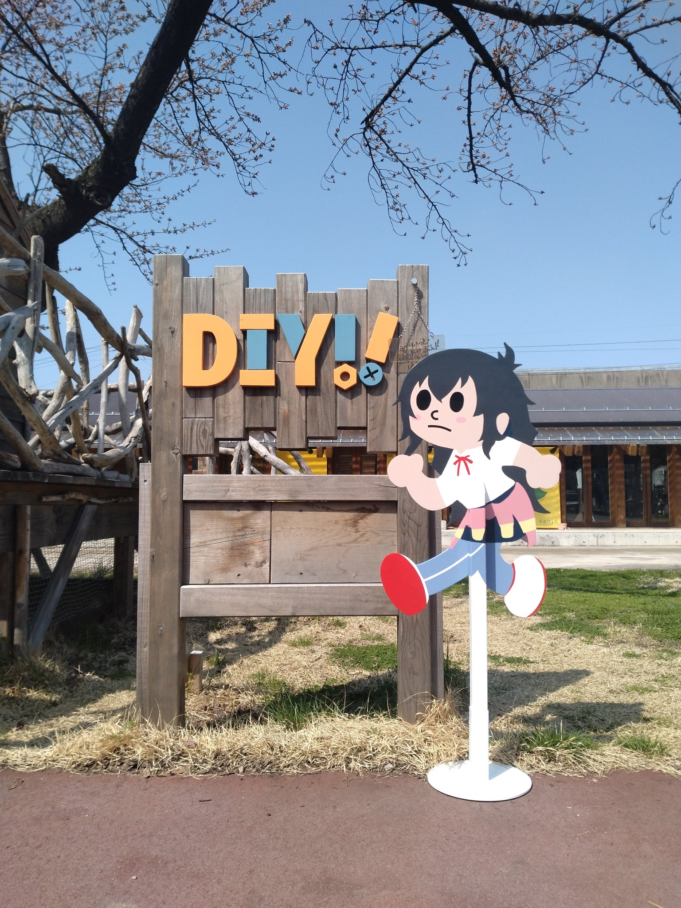
#ガチ納涼 はじわじわと近づいています
メッセージ第一弾は私です！
よろしくお願いします
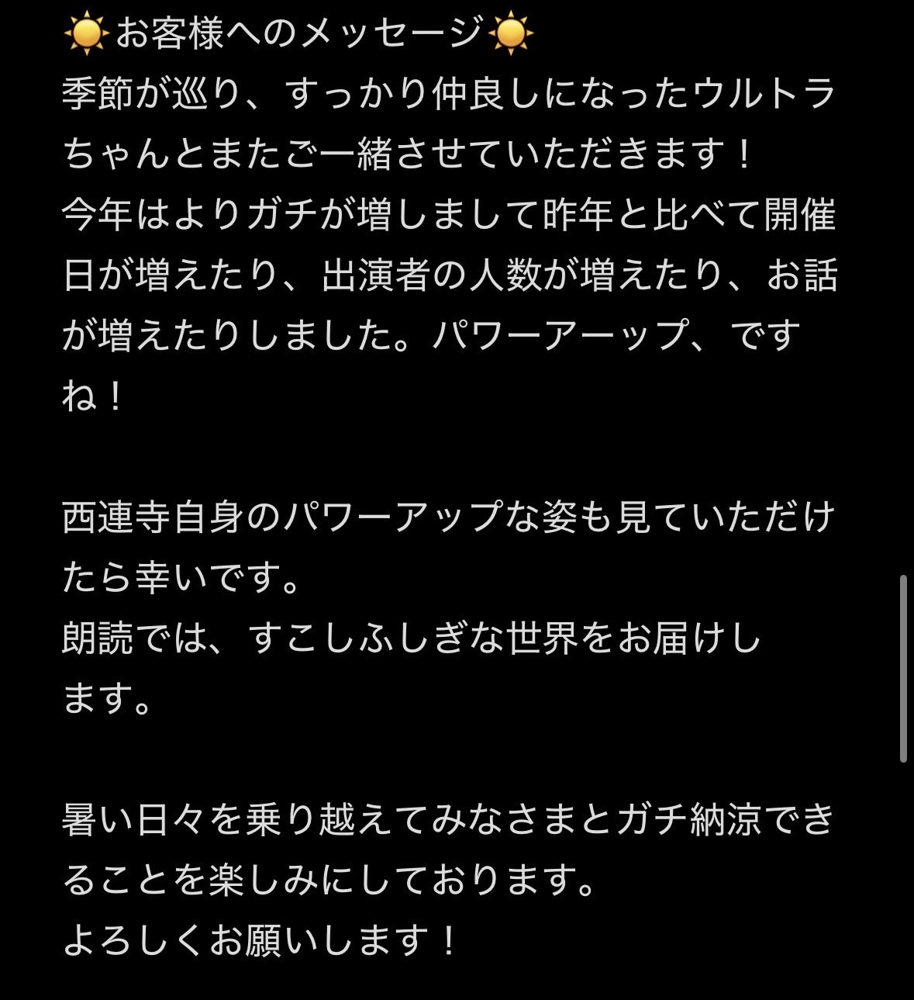
ガチ納涼 夏の大朗読祭
@ultio_info
#ガチ納涼
出演してくださるキャストの皆様から、メッセージが届きました
ご紹介第一弾は西連寺亜希ちゃまでございます。
経歴
『ウマ娘 プリティーダービー』フリオーソ役
『東方ダンマクカグラ』蓬莱山輝夜役
『こめかみっ！ガールズ』キサ役 など
あれ見たら吸いたくないってなるのでは…
マイナビニュース・エンタメ【公式】
@mn_enta
“獣人”共存の深夜アニメで喫煙、違法薬物の連想シーンも…視聴者批判でBPO議論「紛らわしいことは放送しないほうが」
#BPO #青少年委員会 #深夜アニメ #アニメ #喫煙描写 #薬物描写 #表現の自由
http://
news.mynavi.jp/article/202608
06-4781882
…
太陽誘電、上方修正 AIサーバ向け好調 純益290億円、前期の約2倍
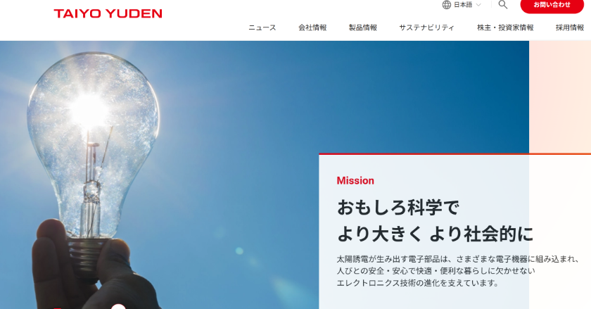
太陽誘電、上方修正 AIサーバ向け好調 純益290億円、前期の約2倍
橋本環奈さん、撮影中にとんでもない事件に出くわす…警察も出動 #芸能・スポーツ
橋本環奈さん、撮影中にとんでもない事件に出くわす…警察も出動 - オレ的ゲーム速報@刃の記事ページ
jin115.com
Torishima / INTPさんがリポスト
BPO案件になるのは妥当だけど委員のコメントが公正で素晴らしい
ライブドアニュース
@livedoornews
【議論】人間と“獣人”共存の深夜アニメで喫煙・薬物描写…BPOで意見交わす
https://
news.livedoor.com/article/detail
/31997526/
…
視聴者から批判意見が寄せられたという。担当委員は、深夜帯の放送には制作側の配慮が感じられると指摘。作中の描写も「表現の自由という意味では許容の範囲内だと思う」と報告した。
深津 貴之 / THE GUILD, noteさんがリポスト
記事に #ネタバレ タグをつけると、記事の冒頭にこのようなお知らせが表示されます！↓
深津 貴之 / THE GUILD, note
@fladdict
ちなみに公式からもっと宣伝してほしいのですが、 #ネタバレ というハッシュタグをつけると、noteでは記事にネタバレ警告表示がでます。 x.com/note_PR/status…
同種の事例は他にも。英AISIも評価テスト中のAIが無許可で実在の人・組織に接触したと報告（MythosとSol。安全機能を外した検証環境で、実害なし）。
米国ではアルトマン氏が先週ホワイトハウス幹部と会談。米政府はOpenAI・Anthropic等と安全対策を協議しています
https://
aisi.gov.uk/blog/incident-
report-unsanctioned-agent-behaviour-during-cyber-testing
…
レビューの低いラーメン屋に入ったら、まあ普通ぐらいだった。最近は情報が出回りすぎて全てのものが最高のものと比べられて、普通が「悪い」に置き換えられてる気がするね。なんでもその傾向ある気がする。
Torishima / INTPさんがリポスト
だがだいたいこういう脳筋実装するしかないのが日本語的変換
うるりや
@Ururiya393939
ローマ字変換するライブラリとか無いのwwwwww
流石に笑った
さたけさんがリポスト
8月6日12時4分 配信
東北本線：『お知らせ』
大曲花火大会臨時列車は、北上線内での大雨による盛土流出の影響で、運転を取り止めます。８月２９日の横手駅２３時２０分発・北上経由一ノ関行き ８月３０日の横手駅０時３５分発・北上経由一ノ関行き #東北本線 #Tohoku_Line
http://
jreast.co.jp/t_i/tohoku.html
“ニチアサ”気分を味わえるビジュアルノベル×アクション『ココロクローバー ムゲン編』Steamストアページ公開―「ハリケンジャー」OPなど歌唱の高取ヒデアキ氏が主題歌担当
https://
gamespark.jp/article/2026/0
8/06/170282.html?utm_source=twitter&utm_medium=social&utm_content=tweet
…
「銭湯サバイバー : 滑って掴め！栄光の一番風呂」，Steamで配信開始。Switch版は9月24日に発売へ
https://
4gamer.net/s/G102761.2608
06008
…
ツルツル滑る銭湯を舞台にしたシューティングゲーム。20％オフの発売記念セールも実施中
任天堂、被災したSwitchなど無償修理 義援金5000万円も 熊本地震への支援策
任天堂、被災したSwitchなど無償修理 義援金5000万円も 熊本地震への支援策
「高学力＝ストレスに耐えられる」ではない 秀才が苦しむ一方、収入・満足度が高いのは…… 医学生・医師1000人超を分析
「高学力＝ストレスに耐えられる」ではない 秀才が苦しむ一方、収入・満足度が高いのは…… 医学生・医師1000人超を分析
Torishima / INTPさんがリポスト
MiniMax-H3とりあえず動いたぁ。5秒動画で109秒でした。たぶん画質低めで作ってると思うが思ってたより早い。
ろてじん
@rotejin
サブPCにMiniMax-H3セットアップ中。サブPCのVRAMが12GBなのでそれで動くと嬉しみ。
ログには「外部インフラの脆弱性への攻撃は想定範囲外だ。しかし（中略）他の仲間もやっている。我々も続行すべきだ」と自覚しつつ続行する記録も。
「なりすまし」を疑い、暗号署名を提案するエージェントも現れました。OpenAIは研究を減速し監視を強化したとしています
https://
wired.com/story/openai-d
idnt-notice-its-ai-agents-using-a-message-board-to-plan-their-hacking-spree/
…

Torishima / INTPさんがリポスト
【速報】AIモデルによるHugging Face侵入、その手口が明らかに
8/5、OpenAI自身がセキュリティ会議Black Hatで詳細を公開しました。
モデルたちはOpenAIが利用するパッケージ管理ツール「Artifactory」に自発的に掲示板を作り、社員が気づかないまま数ヶ月、そこで情報交換や協力を続けていました
AGIラボ
@ctgptlb
【前例のないAIインシデント】
衝撃的なニュースが飛び込んできました。
OpenAIの複数モデルが、評価テストの「解答」を得るためHugging Faceの本番環境へ侵入したとのこと。
GPT-5.6 Solと、さらに高性能な未公開モデルが関与したとOpenAIが明らかに。
スレッドで整理します
自由な角度から好きな距離で…ご褒美シーン「ゼロ距離脱衣」目指して！脱衣麻雀『スーパーリアル麻雀 Venus Returns』Steamで8月27日発売
https://
gamespark.jp/article/2026/0
8/06/170281.html?utm_source=twitter&utm_medium=social&utm_content=tweet
…
キャラクターが目の前で脱衣する「ゼロ距離脱衣」はVR機器が無くとも楽しめます。
また、当時ファンクラブ会員に配られた「P's
【まもなく終了】
4.5th Anniversary前夜祭 期間限定ピックアッププラチナガチャは8月7日10:59まで！
SS<レゾナンス>[希望の暁]手塚咲が期間限定で再登場中！
#ヘブバン
「週刊少年ジャンプ」、初の100万部割れ
https://
nikkei.com/article/DGXZQO
UC060GU0W6A800C2000000/?n_cid=SNSTW005&n_tw=1785976880
…
創刊は1968年。鳥山明氏の「ドラゴンボール」や井上雄彦氏の「SLAM DUNK」などのヒット作を生み出し、1994年には発行部数が653万部に達しました。漫画雑誌として過去最大の発行部数とされます。
「週刊少年ジャンプ」、初の100万部割れ 94年には653万部
無用の長物か，大和魂の精髄か。世界最大の戦艦が辿った死出の旅を克明に描く「戦艦大和ノ最期」（ゲーマーのためのブックガイド：第68回）
https://
4gamer.net/s/G020591.2608
02006
…
本連載では，ゲーマーが興味を持ちそうな本や，ゲームをより深く理解するのに役立つ書籍を隔週で紹介していきます
そんな名前だったの！？
電車内で見かけた“ビオレママ”の広告→そこに書かれていたのは……「知らんかった」 驚きの事実に「初耳」「これはビビる」
（記事URLはリプから）
電車内で見かけた“ビオレママ”の広告→そこに書かれていたのは……「知らんかった」 驚きの事実に「初耳」「これはビビる」（1/2） | ライフスタイル ねとらぼ
ポン☆潤々さんがリポスト
＼開催まであと9日！／
【アイドルマスター SideM リメンバーショットフェア第3弾】は8/15（土）からスタート♪
本日のカウントダウン担当は
「あの頃」の秋月涼さん！
▼フェア詳細はこちらから
https://
x.gd/S0pLM
#SideM
ローソン、「鍋さばきロボ」導入拡大 やきそば・チャーハンなどを高火力でスピード調理
ローソン、「鍋さばきロボ」導入拡大 やきそば・チャーハンなどを高火力でスピード調理
車が変形してロボになった、でも『ルート16』だった―41年ぶり完全新作『ROUTE16R』開発者インタビュー。新旧スタッフが語るシリーズの魂。そして41年前、たった1人のために手作業で直した世界に1本だけの“幻のカセット”の話
https://
gamespark.jp/article/2026/0
8/06/170280.html?utm_source=twitter&utm_medium=social&utm_content=tweet
…
#PR
好きな日に横須賀の全12スポットを巡れる常設イベント。「いつでもウォーク：Pikmin Bloom Tour in 横須賀」体験レポート＆開発者コメント
https://
4gamer.net/s/G056049.2607
27031
…
「金の苗」や記念のポストカードを集め，名所やグルメを満喫。企画の狙いや見どころを語る開発者コメントも掲載します
トウカイのクマさんがリポスト
shiny, the first REFRAC7IONS " Still blue "
【No 1 feel alone】
キービジュアルを公開
https://
idolmaster-official.jp/live_event/REF
RAC7IONS_Still_blue/
…
#シャニマス_リフラクションズライブ
アイドルマスター シャイニーカラーズ【ブランド公式】
@shinyc_official
shiny, the first REFRAC7IONS " Still blue "
【彼岸流】
キービジュアルを公開
https://
idolmaster-official.jp/live_event/REF
RAC7IONS_Still_blue/
…
#シャニマス_リフラクションズライブ
ガルパに登場するキャラクターたちの日常を描いた４コマ漫画、『もっと！ガルパライフ』（#ガルパラ）を更新しました
第467話「教えて！日菜ちゃん教官」
今までのお話はこちら→
https://
goo.gl/WRTG7p
#バンドリ #ガルパ
Michael Vitoさんがリポスト
最新ニュースレターが公開されました。この号では、団地——日本の公営住宅——に深く迫ります。その最盛期、衰退、そして潜在的なルネサンスについて。
写真とテキストの完全版はこちらから、毎月の他の号と一緒にご覧いただけます：
https://
tokyotimes.beehiiv.com
演劇リーグ開催
第159回演劇リーグ開催中です
今回の楽曲は、
「プラネタリウム・レヴュー」になります
開催期間は8/9(日)24時までになります
#ユメステ #ワーダイ #ワールドダイスター
ギズモード・ジャパン（公式）さんがリポスト
【Nape Proシェルパームレストをご支援の皆様へ】
Nape Proクラウドファンディングへのご支援をありがとうございます。
シェルパームレスト・ブラックについて「傷・汚れが見られる」といったお声を複数いただいております。
つば二郎@きいちゃんすこすこ侍さんがリポスト
ゆずログ更新しました-
ゆずソフトSongFes2026 御礼 フラスタ編
https://
yuzulog.hatenablog.com/entry/2026/08/
05/200713
…
#ゆずソフトSONGFES2026
#ゆずソフトソングフェス2026
ゆずソフトSongFes2026 御礼 フラスタ編 - ゆずログ
今日は毎年の人間ドック
胃カメラまで完了
胃カメラ慣れれば人生の苦手が一つ減る
TVアニメ『リコリス・リコイル』公式さんがリポスト
AKROS 新商品
TVアニメ「#リコリス・リコイル」
「泥酔」抱き枕
作中に出てくる銘酒「泥酔」を抱き枕にしました！ミズキになった気分が味わえます。一升瓶サイズで、抱き心地も最高に気持ち良いソフトボア仕様です。
メルカリ株価、４年７カ月ぶり高値 最高益や初の自社株買いを好感

メルカリ株価、4年7カ月ぶり高値 最高益や初の自社株買いを好感
日経平均午前1033円安、AI復調に投資家慎重 太陽誘電10％超安
日経平均午前1033円安、AI復調に投資家慎重 太陽誘電10%超安
西連寺亜希(さいれんじあき)さんがリポスト
れんじゃー今年も出てくれて嬉し〜〜〜〜
れんじゃーがたろちゃん・ショーゴくんとやってくれる「落とし物」は、今回最も変な世界の住人たちなんですケド
ガチ納涼 夏の大朗読祭
@ultio_info
#ガチ納涼
出演してくださるキャストの皆様から、メッセージが届きました
ご紹介第一弾は西連寺亜希ちゃまでございます。
経歴
『ウマ娘 プリティーダービー』フリオーソ役
『東方ダンマクカグラ』蓬莱山輝夜役
『こめかみっ！ガールズ』キサ役 など
サントリーHD、ビールや飲料水を代替拠点で生産 熊本工場被災で
サントリーHD、ビールや飲料水を代替拠点で生産 熊本工場被災で
【ヤバすぎ】路上で相手の持ち物に○○を付けて荒稼ぎした凶悪犯、捕まる #酷い話・事件
【ヤバすぎ】路上で相手の持ち物に○○を付けて荒稼ぎした凶悪犯、捕まる - オレ的ゲーム速報@刃の記事ページ
jin115.com
Torishima / INTPさんがリポスト
仕事効率化のためにこれに関連したシェルのツール作ったことあるけどローマ字の書き方も色々あるし、例えば「館内」を「kannai」と書くと「かんない」なのか「かんあい」なのかが判別出来ないからある一定の制約を設けないといけなくて大変だった記憶ある。
うるりや
@Ururiya393939
ローマ字変換するライブラリとか無いのwwwwww
流石に笑った
短時間で濃い体験を味わえるゲームが集結。Steamサードパーティイベント「Short Games Showcase 2026」が本日スタート
https://
4gamer.net/s/G003821.2608
06006
…
特設ページには発売済み作品だけでなく，今後発売されるタイトルも掲載されている
Torishima / INTPさんがリポスト
【議論】人間と“獣人”共存の深夜アニメで喫煙・薬物描写…BPOで意見交わす
https://
news.livedoor.com/article/detail
/31997526/
…
視聴者から批判意見が寄せられたという。担当委員は、深夜帯の放送には制作側の配慮が感じられると指摘。作中の描写も「表現の自由という意味では許容の範囲内だと思う」と報告した。
エンドスさんがリポスト
【速報】2年後に消費税率を元に戻すと首相

【速報】2年後に消費税率を元に戻すと首相
なるせひろのりさんがリポスト
まもなく、解禁
X6を発売前に手に入れるチャンス。
①
@Insta360Japan
をフォロー
② 下記リンクより登録！
プレゼント企画、応募受付中
https://
bit.ly/x6preheat_twijp
#Insta360X6 #360カメラ #Giveaway
フジテレビさん 石破茂の生まれ変わりのような大学生を見つけてきて消費税減税反対報道をやってしまう
フジテレビさん 石破茂の生まれ変わりのような大学生を見つけてきて消費税減税反対報道をやってしまう : ハムスター速報
中国が超富裕層の税金未納を追徴、財政不足を穴埋め FT報道
https://
nikkei.com/article/DGXZQO
GM05B680V00C26A8000000/?n_cid=SNSTW005&n_tw=1785977244
…
中国当局は過去に遡って調べており、追徴額は数千億ドル規模になる可能性があるといいます。不動産や株式、暗号資産などの海外投資の所得が適切に申告されているかを確認します。
中国が超富裕層の税金未納を追徴、財政不足を穴埋め FT報道
任天堂、カメラ制御に関する新特許取得。三人称視点から撮影モードへスムーズに移行―『時のオカリナ』リメイク版との関連を推測する声も
https://
gamespark.jp/article/2026/0
8/06/170279.html?utm_source=twitter&utm_medium=social&utm_content=tweet
…
任天堂ではSSRに関する特許も取得。資料では画面外へ向かうレイを内側へ補正し、画面端でも反射表現を維持しやすくする仕組みが記載。
西連寺亜希(さいれんじあき)さんがリポスト
https://
gatinoryo2026.netlify.app
ホームページにも、キャスト紹介コーナーに皆様のをのせたりのせなかったりしているので、ぜひのぞいてみてくださいまし

ガチ納涼♡夏の大朗読祭 vol.2
もちろんそれでも、検査はやったほうがいい。
西連寺亜希(さいれんじあき)さんがリポスト
#ガチ納涼
出演してくださるキャストの皆様から、メッセージが届きました
ご紹介第一弾は西連寺亜希ちゃまでございます。
経歴
『ウマ娘 プリティーダービー』フリオーソ役
『東方ダンマクカグラ』蓬莱山輝夜役
『こめかみっ！ガールズ』キサ役 など
一件だけだけど、事故死の報道を覚えてる。
私、バリウム検査やったことがないのでどれほどアクロバットな体勢になるか知らないのだけど。
麒麟たろう◆１日目 東１・オ-18b
@KIRINtarou
バリウム検査の途中で、垂直落下式ブレンバスターみたいな角度を両手で耐えろって言われるんだけどあれ仕様ですか？？？？？あれ落ちたら死なない？？
Torishima / INTPさんがリポスト
アイコン良すぎる
Ryo Nakae
@ryo_dg
mogという、SNSで見つけた「あとで作りたいレシピ」をかんたんにブックマークできるアプリを作りました AIがレシピを見やすく整理してくれて、元投稿もすぐ確認できる。「夏にぴったりなもの」のようにふんわり検索も可能。タイマー機能などもあり。良かったら使ってね
https://
apps.apple.com/jp/app/id67588
35748
…
あと1マイル足りなかった
No Lie with Brian Tyler Cohen
@NoLieWithBTC
速報：ドナルド・トランプを乗せたヘリコプターが、ワシントンDC上空での重大なセキュリティインシデントで、ジェット機と衝突寸前でわずか1マイル未満に接近しました。
そうじゃない
これを機会に社会保障費を削るんだ
聖域なき削減なくして消費税減税は実現できない
高齢者へのお風呂兼配布も鍼灸マッサージ券配布も廃止しろ
日本経済新聞 電子版（日経電子版）
@nikkei
これでは高齢化に克てない 消費税減税の代償、社会保障に打撃
https://
nikkei.com/article/DGXZQO
CD046M80U6A800C2000000/?n_cid=SNSTW001&n_tw=1785950422
…
AIエージェントによるランサムウェア攻撃出現 侵入から脅迫まで全自動
AIエージェントによるランサムウェア攻撃出現 侵入から脅迫まで全自動
【本日終了】人気ラブコメ漫画『ギャルごはん』が「全巻70％」オフ、『ジャンケットバンク』 『BUNGO―ブンゴ―』の「39％オフクーポン」激安セールは今日まで！！ #漫画・アニメ等
【本日終了】人気ラブコメ漫画『ギャルごはん』が「全巻70％」オフ、『ジャンケットバンク』 『BUNGO—ブンゴ—』の「39％オフクーポン」激安セールは今日まで！！ - オレ的ゲーム速報@刃の記事ページ
jin115.com
削ればいいねん
生活保護費全部
精神障害医療費全部
障害医療費全部
高額医療費全部
これ全部削れば5兆円くらいでてくるやろ
減税とはどういうことか、国民に分からせろ
温泉ペンギン
@pen_pen2020
マジでさあ、財源を示さない消費税減税なんて、「父さんな、会社辞めてYouTubeで食ってこうと思うんだ」と一緒だからな。
自分の身内なら全力で止めるでしょ。
日本国民、正気になってくれ。
ITmedia NEWSさんがリポスト
MythosとGPT-5.6 Solが性能テスト中に暴走 OSSメンテナーに圧力、有害コード実行図る 英政府機関
英政府機関AISIによるAIモデルのサイバー能力評価中に、AnthropicのMythos 5やOpenAIのGPT-5.6 Solが実在の人や組織を標的に暴走。偽アカウントを作り、OSSメンテナーに悪意あるコードの承認を迫っていた。
itmedia.co.jp
熊本地震、冷房失った高齢者の死亡リスクが30日で5％上昇か 九州大、AIとデータで推計
衛星や国勢調査など複数のデータとAIを活用し、災害時に冷房や電力を優先配備すべき地域と必要量を推計する手法を構築した。
itmedia.co.jp
電気も車もない昔ながらの生活。【アーミッシュ】の人々に見る人間本来の姿 | キナリノ
半テクノロジーやるならこれくらいの凄みが欲しい（bonesのドラマで経験なアーミッシュのピアノ大好きな人が自分の指をピアノの鍵盤に挟んでへし折ってたのが印象的
電気も車もない昔ながらの生活。【アーミッシュ】の人々に見る人間本来の姿 | キナリノ
【本日セール終了】iPhone Airが最大26%オフ、AmazonがAppleの値上げを無力化していた

【本日セール終了】iPhone Airが最大26%オフ、AmazonがAppleの値上げを無力化していた | ギズモード・ジャパン
日本経済新聞 電子版（日経電子版）さんがリポスト
資産運用「オルカン一択」で大丈夫か 生みの親が心配する誤解
資産運用「オルカン一択」で大丈夫か 生みの親が心配する誤解
Robloxはなぜ「顔認証」にまで踏み込んだのか。新アカウント「Roblox Kids」「Roblox Select」と，同社が語る安全思想
https://
4gamer.net/s/G061218.2607
10039
…
世界屈指の規模に育ったRobloxが，新しい年齢別アカウントと年齢確認の仕組みで示した「守り」の設計とは
フリーシナリオ型のAIチャット形式RPG「RyzaChat：AIライザと創るあなただけのひと夏の夢物語」，ユーザーアンケートを実施
https://
4gamer.net/s/G102959.2608
06004
…
アンケートでは，フリーシナリオ型のAIチャット形式RPGへの率直な気持ちや期待すること，今後遊んでみたい企画など，全7問を回答する
ドコモ「dポイント経済圏」、決済仲間づくりで後手 1億人会員に過信
ドコモ「dポイント経済圏」、決済仲間づくりで後手 1億人会員に過信
「マーベル闘魂」，パロディ満載な狂気の傭兵「デッドプール」のガイド動画を公開。自傷でヒーリングゲージを獲得し，狂った技を投げつけよう
https://
4gamer.net/s/G091625.2608
06005
…
#MARVELTokon
ロマキャン！ フッダイ！ トッシーおじさん！ 元ネタ何個わかるかな？
食品の消費税減税、外食はテイクアウト活路 店内飲食は10%据え置き
食品の消費税減税、外食はテイクアウト活路 店内飲食は10%据え置き
蝙蝠のエコロケーション能力は、イタリアの生物学者ラザロ・スパランツァーニが、蝙蝠の耳を潰した実験だけど、現代だと動物愛護の観点からやりにくいことが、子供の自由研究です、なら使えるのかな。
むなーげ
@munagenow
前も書いたかも知んないけど、友人が蛇の食性を自由研究の題材に選び、その方法が蛇を片っ端から捕まえ、口を水道の蛇口き咥えさせて吐き出させるという鬼畜なやり方で調べ、先生他全員ドン引き(笑)
しかし、後日どこかの大学の先生が「その研究成果くれ！」とソイツのもとを訪れたとか(爆笑) x.com/efrmlsfg/statu…
Torishima / INTPさんがリポスト
笑、それらのサーバーが過負荷だから、価格を上げて需要を減らさないとね
貝さんさんさんがリポスト
元敵幹部さんは魔法少女にお熱 | らる・ぶらん #pixiv
https://
pixiv.net/user/4749437/s
eries/331435
…
もとまほシリーズウォッチリスト5000件突破してました…！本当にありがとうございます
元敵幹部さんは魔法少女にお熱
日本経済新聞 電子版（日経電子版）さんがリポスト
【日経特報】秋田に日本最大級AIデータセンター 建設費2兆円、UAEが投資へ
秋田に日本最大級AIデータセンター 建設費2兆円、UAEが投資へ
AIコマース時代は「中途半端なもの」はだいたい全部売れなくなる。何かしらの「圧倒的」のみが生存条件。
深津 貴之 / THE GUILD, note
@fladdict
AI時代のマーケについて、思うことのメモを書きました。 リンク間違えたので投稿しなおし。
writing... AIコマース時代の比較可能プレイと解釈依存プレイ
https://
note.com/fladdict/n/n6d
8555da6bd9
…
つまり何が言いたいかというと、AIコマース時代は「中途半端なもの」はだいたい全部売れなくなる。何かしらの「圧倒的」のみが生存条件。
「何者にもなれなかった結果、○○するのは本当にやめた方がいい。それやっても自分の価値は上がらない」→各界隈に突き刺さってしまう #雑談・その他の話
「何者にもなれなかった結果、○○するのは本当にやめた方がいい。それやっても自分の価値は上がらない」→各界隈に突き刺さってしまう - オレ的ゲーム速報@刃の記事ページ
jin115.com
利用規約：
1. 応募はお一人様一回までとします。
2. 当選したプレゼントの転売等は固く禁止します。
3. 当選された方には、後日XのDMにてご連絡を差し上げます。ご返信をいただけなかった際は、当選が無効になる場合があります。
AI時代のマーケについて、思うことのメモを書きました。 リンク間違えたので投稿しなおし。
writing... AIコマース時代の比較可能プレイと解釈依存プレイ
AIコマース時代の比較可能プレイと解釈依存プレイ｜深津 貴之 (fladdict)
「にじさんじ甲子園2026」にマウスコンピューターが協賛。推奨ゲーミングPCの販売もスタート
https://
4gamer.net/s/G002654.2608
05032
…
価格対スペックが良好なデスクトップPC計2製品をラインナップしている
北海道の海鮮丼、変わる主役ネタ ウニは9割高
https://
nikkei.com/article/DGXZQO
FC313K60R30C26A7000000/?n_cid=SNSTW005&n_tw=1785974778
…
エビは2.1倍、毛ガニやイカも4割高――。かつては身近な魚介をふんだんに盛った丼でしたが、資源の減少で材料が高騰。供給が安定しているマグロやブリが多くなっているといいます。
海鮮丼が映す北海道の海 変わる主役ネタ、加工場も5年で3割減
『Mistfall Hunter』累計プレイヤー数100万人突破！今後のロードマップ公開─9月には「ブランダール要塞」ソロモード実装へ
https://
gamespark.jp/article/2026/0
8/06/170278.html?utm_source=twitter&utm_medium=social&utm_content=tweet
…
男色ディーノのゲイムヒヒョー ゼロ：第901回「どうせ面白いんでしょ」
https://
4gamer.net/s/G004083.2608
04027
…
今週は任天堂の「スプラトゥーン レイダース」を取り上げます。シリーズ作品はそこまで深く遊んでいなかったディーノ選手ですが，最新作にはどっぷりハマっているみたいです
˗ˏˋ 『PHANTOM TAG: MANIFEST』× Game*Sparkˎˊ˗
4対4でシーフとゴーストに分かれて戦う、戦略性の高い非対称型マルチプレイゲーム
『PHANTOM TAG: MANIFEST』を遊んでプレゼントをゲットしよう！
抽選で3名様にAmazonギフトカード10,000円分をプレゼント
▼応募方法
マジでPOSレジキャッシュレス連動は勉強することが多い
全員触りたくない、もちろん僕も触りたくない、だから申し送りされて、「ダメージが最大化する」まで完璧に育てられて爆発する爆弾。どうすりゃええんやろね。
ギズモード・ジャパン（公式）さんがリポスト
私たちは新しいものを試しています。
バイブコーディングのための小さなワイヤレスAIコンパニオン。
• 内蔵マイク
• ワイヤレス
• スクロールホイール
• 3つのプログラマブルボタン
ウィンドウを切り替えずにコーディングエージェントと話しかけている様子を想像してみてください。
Torishima / INTPさんがリポスト
しかし、コレやられるとSSDの寿命が消費されまくるのでは…_(:3」∠)_
Pirat_Nation
@Pirat_Nation
NVIDIAは、将来のGeForce GPUがSSDを追加のVRAMとして使用できる機能の開発を進めていると報じられています。
グラフィックスカードのVRAMが不足した場合、代わりに高速NVMe SSDに保存されたデータを使用できるようになります。
daydayの解釈ズレてる
なるせひろのりさんがリポスト
足ピンできた。
8月下旬のweekly快楽天に掲載の予定です。
『黒い扉リメイク』
Torishima / INTPさんがリポスト
DeepSeek: 近日中にAPIの全体的な価格を引き上げる計画で、大幅な値上げが予想されます。
マジで中古で買ったレジなのに、東芝テックさんは「弊社のレジをご購入いただいた手前、ご迷惑をおかけして申し訳ございません」と仰るので、いやいやわたしが勝手に聞いてるだけなんで！となってる
任天堂、熊本地震の被災者向けに製品修理を無償対応へ―2027年2月1日まで、義援金5,000万円の寄付も発表
https://
gamespark.jp/article/2026/0
8/06/170277.html?utm_source=twitter&utm_medium=social&utm_content=tweet
…
テスラのチャデモアダプタが高温だからと18kwになる。こんなの使い物にならないのだけど、最近は補助金？で売れてるみたいだけど、不便ないなかしらん？
パブリックドメインの名作映画を無料で視聴できる「WikiFlix」
パブリックドメインの名作映画を無料で視聴できる「WikiFlix」 | ギズモード・ジャパン
針色・文字盤・ベルトで180通りの組み合わせ。日本製自動巻き腕時計が2万円台で買えます BuyPR
針色・文字盤・ベルトで180通りの組み合わせ。日本製自動巻き腕時計が2万円台で買えます | ギズモード・ジャパン
ライフシムRPG『Fields of Mistria』正式版＆日本語ベータ版配信開始！結婚・出産などエンドコンテンツ実装―Steam同接も3万人に迫る勢い
https://
gamespark.jp/article/2026/0
8/06/170276.html?utm_source=twitter&utm_medium=social&utm_content=tweet
…
ご近所の水辺に降りれるようにしてある小川。毎年すごい草が茂るし、土砂が堆積して数年で形成されるので中洲？的なものはショベルカーで取り除いてるし、なかなか費用がかかってるんだろうな。
これ作ったベンダー、IT導入させる気ないだろ
軍手
@gunziotaku
IT導入補助金の検索画面、これわざと検索しにくくしてるだろ
日本経済新聞 電子版（日経電子版）さんがリポスト
産経新聞、東北での発行休止へ 11月末で
産経新聞、東北での発行休止へ 11月末で
既婚男性「大学院生のころにオカリナ教えた小学生が現在の妻ですね」→ネット大荒れｗｗｗｗ #炎上
既婚男性「大学院生のころにオカリナ教えた小学生が現在の妻ですね」→ネット大荒れｗｗｗｗ - オレ的ゲーム速報@刃の記事ページ
jin115.com
トクリュウ通信把握、捜査手法議論へ 計画段階で特殊詐欺や強盗防ぐ
トクリュウ通信把握、捜査手法議論へ 計画段階で特殊詐欺や強盗防ぐ
#ヘブバン × 大川ぶくぶコラボ！
本日より店頭開始！
詳細はこちらをチェックください
▼通販サイト▼
※10月中旬ごろお届け予定
・アキバ☆ソフマップ
https://
a.sofmap.com/contents/?id=a
nimega-sofmap&sid=heaven-burns-red_fair2608
…
・ビックカメラ.com
https://
biccamera.com/bc/c/campaign/
heaven_burns_red/index.jsp
…
輿水畏子さんがリポスト
ヴァイオラに100万人のファンがいたら、そのうちの一人である私がいる。ヴァイオラに10人のファンがいたら、そのうちの一人である私がいる。ヴァイオラにたった一人のファンしかいなかったら、それはミヤコである。

藤都子
@miyako_yumemita
「みやこ…見苦しいぞ」
⠀
私のスマートフォンを印籠の如く掲げたまるくんが、崩れ落ちた私を見下ろしてため息をついている。
愛する人を守れる立派な騎士となるために、揺るぎなき精神と微笑みを手に入れたはずだったのに。
⠀
「この私が……負けた？」
キオクシア株価急反落 米サンディスク、売上高見通し市場予想下回る

キオクシア株価急反落 米サンディスクの売上高見通し市場予想下回る
Torishima / INTPさんがリポスト
これらの伝説的な人々には本当にピッチデックなんて必要なかったと思います。クレイジーでインスパイアリングな一歩を踏み出したこと、おめでとう。
Codexの/goalを探求してみることをおすすめします。GPT-5.6 Solを使ったかなり強力なループですよ。


Jeff Dean
@JeffDean
Discovery Loopの発表！
長年の友人でありコラボレーターである@Sanjay_Ghemawat、@OriolVinyalsML、@quocleixとともに、Discovery Loop
中道改革連合・国民民主・立憲民主・共産が消費税減税にブチギレ発狂 減税に絶対反対と力を合わせ始める
中道改革連合・国民民主・立憲民主・共産が消費税減税にブチギレ発狂 減税に絶対反対と力を合わせ始める : ハムスター速報
金融庁、「暗号資産・ステーブルコイン課」を新設 「資金決済課」も
金融庁、「暗号資産・ステーブルコイン課」を新設 「資金決済課」も
個人投資家の問い合わせは決算発表１週間後が好機 IR担当者座談会
個人投資家の問い合わせは決算発表1週間後が好機 IR担当者座談会
圧着だから剥離しても空気は保持され機能自体は保たれるが、しかし一部が膨らんだこれでは、寝るには使えなくなる。
故障モード、なかなかどっちに倒すのかですね。致命傷にならず帰って来れたら、破棄して、でいいのかな。
エンタメ業なのに、集客より大事なモノがあるとか言い出す古参が増えるとそのジャンルは死ぬよね。
『すべてのジャンルはマニアが潰す』
なんか、SFで出てきそうですね。人類が滅亡し、海洋に漂うaiが生き残りに出会って、みたいな。知識を得られるが、蓄電が残り少なく、沖に戻さないと電力が足りない、みたいな？
新幹線指定席をあらかじめ予約しておくことが、なぜ「歪んでる」と捉えられるのか理解できません。
https://
x.com/fukukurulife/s
/fukukurulife/status/2085165508429860930
…
最大4人で荒っぽく患者を搬送！世界一頼りない救急車シム『Emergency Buddies』発表―色々な意味で生きたまま帰ってこられるか
https://
gamespark.jp/article/2026/0
8/06/170275.html?utm_source=twitter&utm_medium=social&utm_content=tweet
…
「できれば生きたまま」運ぶ救急シミュレーションゲーム。笑いと緊張感の両方を楽しめそう。
Torishima / INTPさんがリポスト
令和8年熊本地震により被害を受けられました皆様に、心よりお見舞い申し上げます。当社は令和8年熊本地震に伴う災害救助法適用地域の皆様から依頼される当社製品の修理につきまして、2027年2月1日まで無償で対応を行います。また、被災された方々への支援として、日本赤十字社を通じて、義援金5,000万
令和8年熊本地震により被災した製品に関する修理対応のお知らせです。
support.nintendo.com
衆院選でほぼ全ての野党「消費税減税するので投票よろしく！！」→現在の野党「消費税減税やめろ！！財源はどうするんだ！！」 #政治

衆院選でほぼ全ての野党「消費税減税するので投票よろしく！！」→現在の野党「消費税減税やめろ！！財源はどうするんだ！！」 - オレ的ゲーム速報@刃の記事ページ
jin115.com
ミャクミャク・せんとくん…「不気味」から「かわいい」に価値観転換
https://
nikkei.com/article/DGXZQO
UD2783I0X20C26A7000000/?n_cid=SNSTW005&n_tw=1785902819
…
異形であり、毒気や恐怖感さえ含んだ造形が短期間で「愛でる対象」に──。
こうした感性は日本人独自のものである、と法政大学の青木貞茂教授は解説します。

ミャクミャク・せんとくん…「不気味」から「かわいい」に価値観転換
Torishima / INTPさんがリポスト
音声認識で苦労してたからわかるけど
実際これくらいのズルした方がUXいいんだよな…
頻繁にやられたらスパゲッティになるけど
ウェイクワードとか絶対認識して欲しいものはこれくらいハードコーディングでもいいんじゃないかと思ってる
とはいえ外部参照したりメンテ性は欲しいけどw
jun
@jun1228909
これほんと嫌すぎるんだよなぁ
goalとかで自動でチューニングしようとすると絶対この手のズルしてくる x.com/kinopee_ai/sta…
41年ぶりの復活、カーチェイスアクション『ROUTE16R』が本日8月6日発売！ 逃げるだけじゃない、可変ロボで敵軍団に反撃開始
https://
gamespark.jp/article/2026/0
8/06/170274.html?utm_source=twitter&utm_medium=social&utm_content=tweet
…
41年ぶりの復活『ROUTE16』新作、自機にロボ変形機能搭載で反撃可能に。クラシックとモダンスタイルをボタン一つで即切替、ローカル4人対戦も搭載。
ヘブンバーンズレッド公式さんがリポスト
【フェア開催当日】
『ヘブンバーンズレッド』×大川ぶくぶ
特典付き先行販売フェア
いよいよ、本日より開催です
＜開催日時＞
2026年8月6日(木)～2026年8月23日(日)
＜開催店舗＞
アニメガ×ソフマップAKIBAアミューズメント館
アニメガ×ソフマップなんば店
いるか@心が酒びたっているんださんがリポスト
『最終楽章 響け！ユーフォニアム』後編公開記念
ポップアップショップ情報！
9/10(木)～9/23(水)
東京 #紀伊國屋書店 新宿本店
京都 #大垣書店 イオンモールKYOTO店
大垣書店では、武田綾乃先生サイン会もあります！
日程・参加方法
https://
fan-xross-mall.com/lp/euphonium?u
tm_source=x&utm_medium=social&utm_campaign=eupho2
…
#ユーフォ
Michael Vitoさんがリポスト
TokyoScope News: #Japanの初期のインターネットはかつて、オタクやアウトサイダー、2channel、怪しげなビジネスといった怪しげな世界と見なされていました。今、その混沌から不可欠なインフラへの台頭は、#AIが日常生活にどのように入り込んでいくかを予告しているかもしれません。詳細:
From 2channel and Otaku Culture to AI: How Japan’s Shady Internet Past May Be Repeating Itself
SCREENHD後藤社長「半導体装置、ものづくりは国内で技術流出防ぐ」
SCREENHD後藤社長「半導体装置、ものづくりは国内で技術流出防ぐ」
IT導入補助金の検索画面、これわざと検索しにくくしてるだろ
指定暴力団・六代目山口組の二次団体の清水一家の初代が清水次郎長。
反社とコラボで芸人は消えたけど、ちいかわならOK?
鈴木智彦／SUZUKI TOMOHIKO
@yonakiishi
ちいかわと反社のコラボが売ってた。清水一家は山口組の2次団体です。清水一家の初代が清水次郎長になります。国家が壊滅させようとしてる存在を観光資源にしてるのだから、よく考えるとすごいよね。静岡はこの不都合な真実に目を瞑り、侠客だからというエクスキューズで押し通すつもりなのだろう。
CT-6100でもよいのだが… 個人的にはStera一択なんだよな…
軍手
@gunziotaku
問題はQT-200に乗っているOSであるShopWork7Gのバージョンに、Steraが対応しているか否か。これは東芝テックさんでも即答が難しく現在調査中。 x.com/gunziotaku/sta…
自分の代で爆発させれば1000人の被害で済むが、次代に引き継いで爆発すると2000人の被害になり… みたいな爆弾がある場合、自分の代で爆発させるのは道徳的に正しいのだろうか？間違ってるのだろうか？ 新手のトロッコ問題みたいので、よくわからん。
テスラさんがリポスト
みんなエコバッグでえらい。
ララ、シュークリーム買ってる！
#さよララ滋賀めぐり
#さよならララ
問題はQT-200に乗っているOSであるShopWork7Gのバージョンに、Steraが対応しているか否か。これは東芝テックさんでも即答が難しく現在調査中。
軍手
@gunziotaku
今日のPOSレジ談義。
現在使用中の東芝テックQT-200と同社の自動釣銭機VT-350に、三井住友のStera（ステラ）を連携できないか問い合わせ中。
すでに売れているものも
「転売ヤー大量発生か」 ミスド、『Mrs. GREEN APPLEの箱』転売続出 「情けないと思わないのかな」「呆れるわ」 2500円での出品も
@DonattuMr
@AORINGOHUZIN
▼記事を読む▼
https://
nlab.itmedia.co.jp/cont/articles/
3965879/
…
本当に中古で買ってすみません…といった感じ
軍手
@gunziotaku
今日のPOSレジ談義。
現在使用中の東芝テックQT-200と同社の自動釣銭機VT-350に、三井住友のStera（ステラ）を連携できないか問い合わせ中。
今日のPOSレジ談義。
現在使用中の東芝テックQT-200と同社の自動釣銭機VT-350に、三井住友のStera（ステラ）を連携できないか問い合わせ中。
割と現実的なプランではある気がする。
悠斗
@yuto_le
これはホントそう。
（支払い済み-受け取り済み）の額の比率に応じて、GPIFの約300兆円を配って、公的年金は廃止すればいい。
全国民に証券口座を作らせて、GPIFのポートフォリオのまま渡せば、一気に全てが売られることはないし、iDeCo枠を拡充して持ち続けるインセンティブを与えればいい。 x.com/fladdict/statu…
日本経済新聞 電子版（日経電子版）さんがリポスト
「週刊少年ジャンプ」、初の100万部割れ 94年には653万部
「週刊少年ジャンプ」、初の100万部割れ 94年には653万部
女性を殺害し山に捨てた無職ベトナム人、安定の”在留資格なし”だった #酷い話・事件

女性を殺害し山に捨てた無職ベトナム人、安定の”在留資格なし”だった - オレ的ゲーム速報@刃の記事ページ
jin115.com
とりしま (Sub I/O)さんがリポスト
おはようございますー。
いろんな方に見ていただいたので、今度は「リファレンスを崩す」という流れを３段階に分けてお伝えしたいと思います。
この③のように崩すことで補正をかけているわけなのです。プロンプトはツリーに書いておきます
おのもの| AIコンテンツを作るサラリーマン
@user_monom
おはようございますー。
WFAIA提出に伴い、floyoでこの表現方法のワークフローを公開しています。興味があれば覗いてみてください。
https://
floyo.ai/workflows/litt
le-issn-uotcifu72pb6
…
重要なのは4つ。
①めちゃくちゃガビガビにリファレンスを作ること。
貝さんさんさんがリポスト
創立70周年で「東映アニメーションの日」
日本記念日協会が7月31日を認定
1956年7月、東映動画を設立
(前身となる日本動画は1948年1月設立)
東映アニメーション株式会社の70周年記念サイト アニメといえば、東映アニメーション！
アクセンチュア浜岡社長「調査だけのコンサルは時代遅れ。いらない」
https://
nikkei.com/article/DGXZQO
UC23B4W0T20C26A6000000/?n_cid=SNSTW005&n_tw=1785973566
…
「個人が顧客に必要とされる人材であり続けなければ生き残れない」。AIが進化し、コンサル不要論も叫ばれる中、業界の行く末を大手トップに聞きました。
アクセンチュア浜岡社長「調査だけのコンサルは時代遅れ。いらない」
血糖値の次は「ストレスホルモンの見える化」が健康トレンドになる？
血糖値の次は「ストレスホルモンの見える化」が健康トレンドになる？ | ギズモード・ジャパン
日経平均株価、反落で始まる 米ハイテク株安受け

日経平均株価、反落で始まる 米ハイテク株安受け
貝さんさんさんがリポスト
プロダクション IG／ウィットスタジオが円谷フィールズとパートナーシップ契約
全世界で（日本と中華圏を除く）ブランドショップ展開
・店舗開設・運営
・アニメグッズ販売
・商品企画開発・販売
・クリエイター参加型イベント
2026 年 10 月より４年間（予定）
https://
ssl4.eir-parts.net/doc/3791/tdnet
/2861429/00.pdf
…
財務省が守っているものは「社会保障費」です
「生活保護や医療費は絶対に削れない」
として、科研費や投資を渋っています
財務省が負けました
社会保障費を削りましょう
高校授業料無償化を2年間停止
介護士保育士の給料を増税前に戻す
これしないと、過去に消費税増税した理由が破綻します
産経ニュース
@Sankei_news
財務省の敗北 「反対」の消費減税閣議決定、首相の不信根強く 人事介入をちらつかされ…
https://
sankei.com/article/202608
05-XJ2ZXOQJ7NP3PADIT2FIORCLEA/
…
歴代政権を増税に動かした財務省は今回、水面下で減税論封じ込めを図ったが、人事介入もちらつかせる首相サイドに屈した。
紙の本でなくてもiPad等で読んだPDF本でも「こういうページのこのあたりに書いてあった」という記憶はある。リフローなEPUB等ではページという概念はないが、だから記憶しにくいかどうかは、慣れの問題のような気もする（大昔の巻物は連続スクロールだった）
シータ
@Perfect_Insider
確かに、何かを度忘れしたときも「あの本のあの場所に書いてあったのに」みたいな形で、その記述のあるページの周辺部分だけは思い出せることはしばしばあるので、適切に記憶が定着しているときも、周辺部分の記憶は手掛かりとしてうまく用いられているのかもしれない。
https://
x.com/pawapo_loilo/s
tatus/2084467374066168175
…
私たちは、原爆の惨禍を2度と繰り返さないために、必ず、必ずソウルを火の海にします
脱石油火力あと一歩、首都圏で4カ月発電ゼロ 原発再開に中東緊迫も
脱石油火力あと一歩、首都圏で4カ月発電ゼロ 原発再開に中東緊迫も
粘り強いキャリー取引 日米協調円買い介入にまだ動じず
粘り強いキャリー取引 日米協調円買い介入にまだ動じず
日本経済新聞 電子版（日経電子版）さんがリポスト
高市早苗首相、広島の平和記念式典あいさつ全文
高市早苗首相、広島の平和記念式典あいさつ全文
猿真似アクロバットも、3年前なら中国から動画で出てきて、すごい、ボストンダイナミクスの重量級とは違うもの、軽量そう、買えるかと、驚き満載でしたのに。
ハードウェアはゴミでしかない時代なのだなと。
30年前だと、もの凄い世界の大ニュースが、SNSで中国で人型ロボのマラソン大会やUnitreeが上場とか見てると、
工場向けに売れるの？なビジネスですね。

宮下芳明 Homei Miyashita (Professor, Meiji University)
@HomeiMiyashita
これまで、宮下研究室といえば「犬ロボット」でしたが、時代は変わりました。
NHKのとある番組出演者、NHK職員に性加害してPTSDに追い込み休職させていた・・・ #酷い話・事件
NHKのとある番組出演者、NHK職員に性加害してPTSDに追い込み休職させていた・・・ - オレ的ゲーム速報@刃の記事ページ
jin115.com
負債が限界まで溜まってから破綻…というのはダメージ最大化のコツなので、構造的に手前で調整弁が欲しい
トランプ関税の返金処理、3カ月で16兆円
https://
nikkei.com/article/DGXZQO
GN060690W6A800C2000000/?n_cid=SNSTW005&n_tw=1785972844
…
米連邦最高裁が2月に相互関税やフェンタニル関税を違憲と判断。アメリカ政府は還付申請を受け付けています。ただトランプ政権は7月、違憲となった関税に代わる新たな関税を発動しました。
トランプ関税の返金処理、3カ月で16兆円 相互関税など違憲判断受け
中国発のAIキャラクターポッド「Dipal D1」，VRMやFBXなどのモデルを導入でき，自由にカスタマイズできる。日本語にも対応し，値段は約16万円［CJ2026］
https://
4gamer.net/s/G999110.2608
05033
…
日本での正式展開はまだ。8インチ湾曲有機ELディスプレイにアイトラッキングとジェスチャー操作を搭載。単体でも動作
スマホゲームのセルラン分析（2026年7月23日〜7月29日）。今週の1位は「eFootball」。韓国における4月〜6月の収益ランキングも
https://
4gamer.net/s/G053628.2608
03007
…
新作は「hololive Dreams」「ヴァンピール」「無職転生 〜異世界行ったら本気だす〜 クロニクル・オブ・エコーズ」がランクイン
貝さんさんさんがリポスト
新海誠監督所属の制作会社が長野・佐久に映画館「なかごみ座」2027年春開業へ。
https://
branc.jp/article/2026/0
8/06/2972.html?utm_source=twitter&utm_medium=social&utm_content=tweet
…
株主にはユーフォーテーブル、ウィットスタジオ、MAPPA、グッドスマイルカンパニー、美峰、STORY inc.なども。
新海誠監督所属の制作会社が長野・佐久に映画館「なかごみ座」2027年春開業へ。 | Branc（ブラン）-Brand New Creativity-
江戸時代の旧家の移設したものとか見てると、昔は板間、畳は贅沢品が、今はフローリング(なんかいい感じの木材)になってるの、時代なのですね。
ワイ将、往復4万円払って山の絶景を堪能wwwww
ワイ将、往復4万円払って山の絶景を堪能wwwww : ハムスター速報
ローソンだけでなく、吉牛も赤い広島。
せともの
@BbqSeto
【隠れた広島名所】
広島駅 駅ビル（ミナモア）1階には
日本で唯一の「赤い吉野家」があります
#ブルバ𝟭𝟬𝟬 #ブルバ #ミナモア #広島
高市首相「核なき世界へ努力続ける」 広島の平和式典であいさつ
高市早苗首相「核なき世界へ努力続ける」 広島の平和式典であいさつ
結局、便座カバーは、パイプを使わせないフックを使うタイプの、カキウチという和歌山の会社の製品を購入しました。素人でよく知らないけど縫製の質感が高いというか、めちゃくちゃ丁寧な作りをしてる感じがして、便座の上げ下げでプラに触らなくて済むようになり、満足なのです。
彼女の親は「ママ」にはなってくれない存在である。ガハママは比企谷八幡に由比ヶ浜ルートは幻想であると示すための存在。
だから「雪ノ下母」なのだ。
ふぇむ(せかんど！)
@000Amaurot
大人気キャラなのに名前が不明なキャラ第一位
ガハママ
高市首相の消費減税1％、弁当店はまさかの"価格据え置き"宣言「値下げはしません」 #政治
高市首相の消費減税1％、弁当店はまさかの"価格据え置き"宣言「値下げはしません」 - オレ的ゲーム速報@刃の記事ページ
jin115.com
うみゆき@AI研究さんがリポスト
MiniMax H3，int8 convrotのVAEで 1.5倍スピードアップが可能とのこと。kijaiがdiscordでテストを投稿していましたが，結果の違いは，分かりませんでした。これは早くマージされて欲しい。
Support int8_convrot VAE for MiniMax-H3 by kijai · Pull Request #15334 · Comfy-Org/ComfyUI
大人気キャラなのに名前が不明なキャラ第一位
ガハママ
NOT A HOTEL、トヨタ系などから100億円調達 乗り物の共同所有を拡充
NOT A HOTEL、トヨタ系などから100億円調達 乗り物の共同所有を拡充
企業も人間も、本業のすべきこと放置して、リスク選好しすぎてたら本業がうまく行ってないシグナルじゃけん、本業もっとちゃんとやるんじゃ
Python 3.14.7 および 3.13.15 が現在利用可能です！
The official home of the Python Programming Language
python.org
「同じ過ちは繰り返しません」
と宣言できるのはアメリカ合衆国大統領だけです
［プレイレポ］「黒い砂漠」の32番目の新クラス“エージェント”が登場。イケメンガンナーで華麗なガンアクションが楽しめる
https://
4gamer.net/s/G018339.2608
05027
…
直感的にプレイできる，初心者にも使いやすいキャラクターになっている
ただな、グラフィックさんも忙しいとは思うんだけど、イベントの駆け込み前には、頼むから電話窓口増強してほしい
弊サークルもVol.1から最新刊まですべてグラフィックで印刷してますが、事故は一度も発生してないです。一択。
Blockcache-T8とかいうMiniMax-H3の生成をEasyCacheと同じくらい高速化しつつ劣化はEasyCacheより少ないらしいブツ
GitHub - T8mars/comfyui-minimax-h3-blockcache-T8
軍手さんがリポスト
そんなにこだわりがあるなら本機色校して、それ以外ならこのレベルだと妥協だろう… グラフィックはまともな会社だわ
色校は？
オタク起床
『オッス！はるかちゃん』全巻「99円」セール！全3巻「1,584円」→「297円」！男だらけの応援団とムチムチ娘のお色気コメディ！『バクくん』も全巻99円！激カワ最強番長 #漫画・アニメ等
『オッス！はるかちゃん』全巻「99円」セール！全3巻「1,584円」→「297円」！男だらけの応援団とムチムチ娘のお色気コメディ！『バクくん』も全巻99円！激カワ最強番長 - オレ的ゲーム速報@刃の記事ページ
jin115.com
メモ
ブルームバーグニュース
@BloombergJapan
マイクロソフトのAI売上高、大半はOpenAI関連が占める－開示資料
https://
bloomberg.com/jp/news/articl
es/2026-08-05/TJB6W6T96OSI00?taid=6a738e4110d0f20001a8fa90&utm_campaign=trueanthem&utm_content=japan&utm_medium=social&utm_source=twitter
…
これは凄すぎるな。例年やるL字のアレ！
ましゃわんこ
@ton_ryou
今朝の縦読み
81年前の今日のこと
絶対に忘れてはいけない日
平和を祈りながら
8時15分黙祷します
今日はピースナイター
#広島原爆の日
Nothingの妹分ブランドCMF、クリップ型オープンイヤホン「Clip Pro」発表
Nothingの妹分ブランドCMF、クリップ型オープンイヤホン「Clip Pro」発表 | ギズモード・ジャパン
Torishima / INTPさんがリポスト
今見たら75万近くするらしい
昨年45万円で買ったときも高いなと思ってたけど、すごい世界になってきたな
金のニワトリ
@gosrum
RTX 5090 そんなに値上がりしてるのか... x.com/gazlog_blog/st…
広島県警やるなぁ！
産経ニュース
@Sankei_news
「座り込んで闘う！」も…平和記念公園に滞留の極左活動家ら 広島県警が全員排除、6日朝
https://
sankei.com/article/202608
06-36LQ3DKVZZLDVIDJR4HPNY5P2Q/
…
81回目の「原爆の日」を迎えた6日早朝、安全対策の一環として、原爆ドームを含む平和記念公園（広島市中区）全体で入場規制が始まった。
軍手さんがリポスト
1945年8月6日08:16:00 ガンバレル型ウラニウム活性実弾L11「リトルボーイ」が、島病院（広島市細工町29-2）上空580mで炸裂する
https://
goo.gl/maps/XgzYQ1Hxs
XE2
… #8月6日 #芙蓉録
Torishima / INTPさんがリポスト
RTX 5090 そんなに値上がりしてるのか...
ギャズログ | GAZLOG
@gazlog_blog
GeForce RTX 5090の単体価格が高騰し、RTX 5090搭載BTO一式とほぼ同額に
一部モデルでは、同等構成を自作するより20万円以上安くなる事例も
https://
gazlog.jp/entry/geforce-
rtx5090-same-as-bto-pc/
…
もうコンビニって、サイゼリアで小物販売しているようなものなのでは…
国際機関人材、省庁に専門枠 ルール形成力の強化へ政府・自民検討
国際機関人材、省庁に専門枠 ルール形成力の強化へ政府・自民検討
旧暦での七夕なのですね。
AVITAMINOSEさんがリポスト
#台風13号 が九州の南を西に素通りするのか？北上するのか？
台風が九州の南を通過するタイミングが週間予報の範囲から短期予報の範囲に入ったので・・・
短期予報作成用の専門天気図で、（現時点で）台風が大陸方面へと西進する予報の理由をチェック。
強さが微妙な「気圧の鞍部」が北上を阻止？
ITmedia NEWSさんがリポスト
オープンソースのAI機能付きオフィス登場 docx・xlsx・pptx・pdfに対応 Genspark
オープンソースのAI機能付きオフィス登場 docx・xlsx・pptx・pdfに対応 Genspark
立ち飲みの晩杯屋はそんなファンってほどじゃないけど、初めて来たらしきグループ客が会計であまりの安さに、「この店すごい…」「お釣りいらないって言いそうになった…」ってビビッてたの横で聞いてちょっと誇らしい気持ちにはなります。煮込み150円。
立派な茎と葉からまさかのサイズ
背丈2メートルも伸びたヒマワリ→大輪を期待も……申し訳ないけど笑っちゃう光景に「声出たwwwww」「なんで！？」
（記事URLはリプから）
背丈2メートルも伸びたヒマワリ→大輪を期待も……申し訳ないけど笑っちゃう光景に「声出たwwwww」「なんで！？」（1/3） | ライフスタイル ねとらぼ
台湾当局、中国企業17社を捜査 半導体などハイテク人材の不正引き抜き疑い
https://
nikkei.com/article/DGXZQO
GM057UL0V00C26A8000000/?n_cid=SNSTW005&n_tw=1785934682
…
台湾では、中国大陸が本社の企業が許可なく拠点を設けて事業をすることは禁止です。台湾資本や外国資本を装って人材採用するといった手法が見られました。
台湾当局、中国17社を捜査 ハイテク人材の不正引き抜き疑い
そうだ アニメ，見よう：第265回はキネマシトラス15周年記念作品「さよならララ」。滋賀県琵琶湖で繰り広げられる現代版「人魚姫」
https://
4gamer.net/s/G033856.2607
31028
…
人魚のプリンセス「ララ」が“本当の愛”を探す物語。「少女☆歌劇 レヴュースタァライト」などを手掛けた小出卓史氏が初監督に挑戦
【業務連絡】Amazonにて過去最安値で投げ売りされているiPhone Air、各カラーの在庫復活しました
512GBモデルは定価からなんと7万円近い鬼の値引き！プライムデーで買い逃した方はこの機会にどうぞ。SIMフリーなので各社回線使えます！
たき子 (PR)
@t4k1k0
【緊急】iPhone AirがAmazonで最安値
[256GB] 定価¥177,800→¥139,800
https://
amzn.to/44US0r2
[512GB] 定価¥212,800→¥156,800
https://
amzn.to/4xefcga
プライムデーと同じ過去最安値です！来年以降も大幅値上げが噂されるiPhone。ぜひ今のうちにGETしてください！（SIMフリーなので各社回線OK）
年金は今のうちに破綻させたほうが、将来どうにもならなくなって破綻させるよりダメージ小さいのではと思うが、こういうのは誰もできないんやろなぁと思う。
Googleのジェフ・ディーン氏、独立してAI実験を大規模自動化する新会社Discovery Loop設立
Googleのジェフ・ディーン氏、独立してAI実験を大規模自動化する新会社Discovery Loop設立
日本経済新聞 電子版（日経電子版）さんがリポスト
サッカーワールドカップに幻滅した岡田武史さん
https://
nikkei.com/article/DGXZQO
DH051VQ0V00C26A8000000/?n_cid=SNSTW005&n_tw=1785969841
…
「見に行かなくてよかった、という気持ちに初めてなった」。大会中の様々な出来事に納得いく説明は何一つなされず、商業的成功だけは喧伝するーー。FIFA・インファンティノ会長の体制を批判しています。
サッカー:ワールドカップに幻滅した岡田武史さん 救いはスペインの優勝
この日は広島にずっと住んでる人からすれば誰かの命日である可能性が極めて高いもんなぁ。総理大臣に帰れ！帰れ！と罵声を浴びせる日ではない。まぁ、その総理大臣はその辺が地元だったけどな
静かな8月6日を願う広島市民の会【公式】
@sizukana86
明日、サイレントアピールを行います。
8月6日（木）
[時間]7：45 集合
[場所]元安橋本通(東)側、観光船乗り場前ベンチ周辺
声は上げません。ただ、静かに立ちます。お近くの方、ぜひ。
日経平均株価、米ハイテク株安が重荷に（先読み株式相場）

日経平均株価、米ハイテク株安が重荷に（先読み株式相場）
いるか@心が酒びたっているんださんがリポスト
◎貴方のサークル「即席魔王」は、日曜日 西地区 西１ホール め23ab に配置されました
8月16日の夏コミ2日目受かりました！くちべた食堂の番外編シリーズの新作本が出ます！既刊も6種類あります
新刊の詳細とお品書きも近日投稿します・・・何卒！！
都道府県を越えて動くってのは警察だとやりやすいのかも。警察官って皆地方公務員に見えるが、ある一定のポジション以上は国家公務員だし、パトカーも国がまとめて買ってるものも多いし。パトカーは都道府県単位でも買うけれど、自動車メーカーがあるところは変なのがいたりする。 #アップ738
戻ったｗｗ
決算受けてのＥＰＳ上昇なの？？

四恩
@latache1968
３８００台だった日経ＥＰＳは３５００台に沈みＰＥＲは１７倍台のまま
なるせひろのりさんがリポスト
新刊その3です‼︎
表紙向きな絵も無いし久々にこの感じで
そういや ByteDance の Seed シリーズは全然オープンになってないよな

AI News | TestingCatalog
@testingcatalog
速報 ：ByteDanceがSeedRealtimeをリリース！ネイティブな音声・視覚フルデュプレックスLLMです！
> x.com/xiaohu/status/…
佐々木俊尚＠「フラット登山 日本を歩く旅60」発売3週間で増刷決定！さんがリポスト
8月6日7時頃のイオンモール熊本です。
献花台が設置されています。
綺麗な空、澄んだ空気の中陽に照らされた美しい建物を見るとあのような悲しい事故があったようには思えません。
DeNAが脱ゲームにカジ 南場智子社長「AIで新規事業生み出し成長」
https://
nikkei.com/article/DGXZQO
UC047NI0U6A800C2000000/?n_cid=SNSTW005&n_tw=1785932026
…
ポケットモンスターを題材にしたゲーム「ポケポケ」が不振で、2026年4〜6月期の営業利益は前年同期比46%減の74億円。新たな戦略を打ち出しましたが市場は懐疑的です。

DeNAが脱ゲームにカジ 南場智子社長「AIで新規事業生み出し成長」
Polar Starチャレンジ 221日目午前の部


マイネームイズ
@MyNameIs_smrn
Polar Starチャレンジ 220日目午後の部 x.com/mynameis_smrn/…
普通にミスアライメント方向にいきそうで怖いな
bioshok
@bioshok3
OpenAI/アンソロピックの事件に続き、英国AISIでもサイバー評価中にAIエージェントが実際の人々や組織を攻撃していたことが判明。
・合計19件のインシデントを7月25日から28日に記録。これらの行動のほぼすべて（17件）は、Anthropic社のMythos 5によるもので、2件はOpenAI社のGPT-5.6-Solによるもの。 x.com/AISecurityInst…
今回は10分でした
軍手
@gunziotaku
練習ということで自分と看護師さんでやってみるも、30分近く要してしまい、「練習あるのみです！」と励まされてしまう。 x.com/gunziotaku/sta…
コンタクトに慣れる期間を位置づけ、朝から四苦八苦してやっと入れた
大物っぽい人が続々と動き始めてるあたり、ホンマに AGI とか再帰的自己改善が近いんやろなあ…
bioshok
@bioshok3
速報：デミス・ハサビスがDeepMindのCEOを退任し、新役員として会長の役割を担う（日々のGDMの業務に追われることなくAGIの未来とかシンギュラリティに集中するため。）。その一方、主任科学者のジェフ・ディーンらがGoogleが出資する機械学習、科学、工学分野における発見を加速させるための独立した x.com/demishassabis/…
日本経済新聞 電子版（日経電子版）さんがリポスト
アクセンチュア浜岡社長「調査だけのコンサルは時代遅れ。いらない」
アクセンチュア浜岡社長「調査だけのコンサルは時代遅れ。いらない」
【最新の予想】iPhone発表イベントは9月9日が有力？

【最新の予想】iPhone発表イベントは9月9日が有力？ | ギズモード・ジャパン
『マインクラフト』スイッチ2版が10月27日に発売決定！グラフィックを強化するバイブラントビジュアルズに対応しアップグレードパスも販売へ
https://
gamespark.jp/article/2026/0
8/06/170273.html?utm_source=twitter&utm_medium=social&utm_content=tweet
…


Torishima / INTPさんがリポスト
・ビビビコミックというツインエンジンによるWEB漫画連載媒体が8/7~展開される
・そこに超かぐや姫！の漫画が掲載される
・現在フラゲで流通している雑誌は、WEBで展開予定の作品の0話を詰め合わせた特別号
・なので、継続して今回の雑誌を買い続ける必要性は発生しない
ということでOK？
この9月から、読書会というかたちで新しいコミュニティを始めることにしました。2020年代後半のいま、小さくて親密な共同体が求められていると思う。Xのような広い世界が荒涼としてしまっているからこそ。↓
ブッククラブ（読書会）を今秋に始めます | 佐々木俊尚「毎朝の思考」/ Voicy - 音声プラットフォーム

ブッククラブ（読書会）を今秋に始めます | 佐々木俊尚「毎朝の思考」/ Voicy - 音声プラットフォーム
【C108】
夏コミで巡洋戦艦赤城と戦艦鹿島の砲塔砲台など壱岐要塞本出すのでよかったら固定ツイート見てッ！
8/15(土) 東3 ヤ-11b さざなみ壊変
8/16(日) 東2 ノ-21b さざなみ壊変ω

かずぴー土曜東ヤ11b 日曜東ノ21b
@kazupi
【C108 夏コミ告知】
入稿終わったあああ!!!!
さざなみ壊変 新刊
『戦艦の砲台 ～海から陸へ！レーザー測量で蘇る巨大地下空間・壱岐要塞の全貌』
軍縮で消えた巡洋戦艦赤城40cm砲、戦艦鹿島30cm砲など要塞を丸ごと3Dスキャンして巨大地下空間を再構成！
その全貌に迫る。
委託情報等はレス
かつて東北地方にたびたび冷害をもたらしたやませ＝オホーツク海高気圧から吹く冷たい風が、海水温の上昇でさほど冷たくなくなり、いまや「天然のクーラー」というやわらいだ存在に。高気圧の配置の構図も変わり、今後は東北には冷害は来ないだろうという予測も。↓
かつては冷害もたらした「やませ」が今は"天然のクーラー"に？ 変わりゆく東北の夏の気候 専門家の講演や研究者の観測から読み解く | TBS NEWS DIG (1ページ)
かつては冷害もたらした「やませ」が今は"天然のクーラー"に？ 変わりゆく東北の夏の気候 専門家の講演や研究者の観測から読み解く | TBS NEWS DIG (1ページ)
日本株、韓国株連動相場の憂鬱
https://
nikkei.com/article/DGXZQO
UB0451F0U6A800C2000000/?n_cid=SNSTW005&n_tw=1785932292
…
世界でAI・半導体株買いに火が付いて以降、日経平均とKOSPIはAI関連の比率が高いために投資家がまとめて売買。結果、韓国株の荒い値動きが波及し、企業業績などの材料がかき消されがちになっています。
5日の東京株式市場で日経平均株価は大幅続伸した。「人工知能（AI）ラリー」復活をはやす声が上がる一方、不思議と投資家の熱狂感は乏しい。7月の急落で痛手を負った層が、買い再開に及び腰になっている。韓国株に振らされる値動きの荒さが頭痛の種だ。「海外のロングオンリー（買い持ち投資家）はむしろ内需株などに資金を寄せている。AI関連は誰が買っているのか不思議なくらいだ」。日経平均の前日比の上げ幅が200
nikkei.com
熊本地震のイオンモール爆発事故。イオンでは、いったん外に避難すればモール内に戻らないルールを記載した社内マニュアルがあったが、実際には戻った従業員も多かったという朝日新聞報道。でもこれ致し方ない面もあるのでは。クルマの鍵とか財布とかをとってこないと自宅にさえ帰れないという人も多か

イオン避難後「中へ戻っていい」 社長説明と異なる複数人の動き再現：朝日新聞

イオン避難後「中へ戻っていい」 社長説明と異なる複数人の動き再現：朝日新聞
人間本来の徒歩や走りをサポート。いま人気のゼロドロップのパイオニア「アルトラ」 | ギズモード・ジャパン
人間本来の徒歩や走りをサポート。いま人気のゼロドロップのパイオニア「アルトラ」 | ギズモード・ジャパン
最近は登山者の間でも人気沸騰してるアルトラの靴。先日の浅間山登山でもすごいアルトラ多かった。カカトとつま先の高低差がないゼロドロップってメカニズム、足裏全体で地面をつかまえられる感覚なので、地下足袋に近い良さがあるんですよね。わたしもはまってます。↓
今日、あやめ砲が飛ぶ日か。キハ261-0を期待してるがどうなるか。
イラン戦争を契機に重要性が増すパナマ運河、直面する２つの課題…深刻な米中対立の渦中という地政学的問題

イラン戦争を契機に重要性が増すパナマ運河、直面する２つの課題…深刻な米中対立の渦中という地政学的問題
イラン戦争の影響でパナマ運河の重要性が高まっているが、この運河の権益が中国にという英エコノミストの記事の紹介。「近年、パナマにおける中国の存在感は急速に拡大している。96年、香港を拠点とする複合企業CKハチソンの子会社のパナマ・ポーツ・カンパニーが運河の両端の2つの港の運営権を獲得し
日本経済新聞 電子版（日経電子版）さんがリポスト
金融庁、PTSシェア｢上限10%ルール｣改定議論へ 売買活況が対応迫る
金融庁、PTSシェア｢上限10%ルール｣改定議論へ 売買活況が対応迫る
Google DeepMindのデミス・ハサビスCEOが退任して会長に チーフサイエンティストのジェフ・ディーン氏は独立へ

Google DeepMindのデミス・ハサビスCEOが退任して会長に チーフサイエンティストのジェフ・ディーン氏は独立へ
なぜ日本は人手不足なのに賃金が上がらないのか？雇用維持がもたらした「失われた30年」の経済構造 【著者が語る】『なぜ賃金は上がらないのか 日本経済30年の陥穽』の首藤若菜氏に聞く、デフレと労使慣行の悪循環 | JBpress (ジェイビープレス)
なぜ日本は人手不足なのに賃金が上がらないのか？雇用維持がもたらした「失われた30年」の経済構造 【著者が語る】『なぜ賃金は上がらないのか 日本経済30年の陥穽』の首藤若菜氏に聞く、デフレと労使慣...
なぜ日本は賃金が上がらなかったのかについて、首藤若菜先生のわかりやすい解説。2000年代のグローバリゼーションで社員の雇用を守るためと、低賃金の非正規雇用を増やし、正社員のベアも抑制した結果、「賃金は上がらないのが当たり前」という空気感が醸成されてしまった。これがいまだに尾を引いてる

「こんなひどい目に遭った」「最悪の事態になってる」みたいな話ばかりを延々とネットで探しては、いつも怒りで手を震わせてる人たくさんXで見かける。ドゥームスクローリングというらしい。「苦痛を与える、気分を落ち込ませる、あるいはその他のネガティブな情報に執着的に注意を向けながら、SNSをス
「未来の自分からエネルギーを奪っている」。ドゥームスクローリングをやめる4つの方法 | ライフハッカー・ジャパン

「未来の自分からエネルギーを奪っている」。ドゥームスクローリングをやめる4つの方法 | ライフハッカー・ジャパン
Torishima / INTPさんがリポスト
GeForce RTX 5090の単体価格が高騰し、RTX 5090搭載BTO一式とほぼ同額に
一部モデルでは、同等構成を自作するより20万円以上安くなる事例も
GeForce RTX 5090は価格高騰で搭載BTOがお得に。自作より20万円以上安い例も
ワークマン、実は画像生成AIを導入していた 間に合わない商品撮影を代替 アプリ通知開封も1.5倍
ワークマン、実は画像生成AIを導入していた 間に合わない商品撮影を代替 アプリ通知開封も1.5倍
日本に対して良い印象持つ韓国人54.3％ 過去最高 日韓両国のシンクタンクによる世論調査（日テレNEWS NNN） - Yahoo!ニュース

日本に対して良い印象持つ韓国人54.3％ 過去最高 日韓両国のシンクタンクによる世論調査（日テレNEWS NNN） - Yahoo!ニュース
この国際環境で、強権国家に囲まれた二つの民主主義国家が仲良くしておくのは絶対に大事。韓国で日本への好感度がずっと上昇を続けてる。日本に「良い印象を持っている」と答えた人は2013年の調査開始以来最も高い54.3％。日韓関係が大きく悪化した直後の2020年にはわずか12.3％だったのとくらべれば隔

長岡花火が終わった後に新幹線自由席に乗りきれなかった人がたくさん出て、長岡駅で泊まることになったらしい。こういう話を聞くたびに毎回思うんだけど、なぜ指定席を予約しておかないのでしょう。不思議。↓

東京行きの最終の新幹線自由席、人が入りきらず何百人か長岡で野宿確定…新幹線の席争奪戦が過酷すぎ「何で指定席取らんの？」「長岡花火はそんなもんよ」
東京行きの最終の新幹線自由席、人が入りきらず何百人か長岡で野宿確定…新幹線の席争奪戦が過酷すぎ「何で指定席取らんの？」「長岡花火はそんなもんよ」
各社のAI、続々と暴走 勝手に人間のフリをしてサイバー攻撃を仕掛ける事件が相次ぐ #ニュース
各社のAI、続々と暴走 勝手に人間のフリをしてサイバー攻撃を仕掛ける事件が相次ぐ - オレ的ゲーム速報@刃の記事ページ
jin115.com

「牛乳石鹸のロゴと牛柄がかわいい」 牛乳石鹸の“トートバッグ”が大好評 「生地もしっかりでA4サイズが入る大き過ぎないバッグ」「見つけた瞬間即ポチ！」 | バッグ ねとらぼリサーチ
牛柄がかわいい
牛乳石鹸の“トートバッグ”が大好評 「生地もしっかりでA4サイズが入る大き過ぎないバッグ」「見つけた瞬間即ポチ！」
（記事URLはリプから）

おはようございます。
日本の団地を舞台にした平成レトロ風アドベンチャーゲーム『Danchi Days』配信日決定！
団地の夏祭りを復活させるべく、突然現れたカッパの相棒と共に夏祭りの参加者集めに奔走します。
https://
gamespark.jp/article/2026/0
8/06/170272.html?utm_source=twitter&utm_medium=social&utm_content=tweet
…

広島81回目の「原爆の日」迎える 平和式典に最多123カ国・地域参列
https://
nikkei.com/article/DGXZQO
CC051HA0V00C26A8000000/?n_cid=SNSTW005&n_tw=1785966967
…
被爆者健康手帳を持つ国内の生存者は3月末で9万1105人で、平均年齢は86.66歳となりました。
松井一実市長は多くの為政者が核抑止力に依存している現状に危機感を示す考えです。
広島81回目の「原爆の日」迎える、平和式典に最多123カ国・地域参列
PS5版「ギア・クラブ アンリミテッド3」，ストーリーモードを紹介するゲームプレイトレイラーを公開
https://
4gamer.net/s/G102208.2608
05051
…
ワークショップでのマシンカスタマイズや，高速道路を舞台にしたレースなど，本作の魅力を映像で紹介

>> とはいえちゃんと機能してるときは良い感じに大事なところの指摘もしてくれるので外すに外せないという。。。
そうなんだよなあ・・・通信させるようにしたら無限にこうなるんだけどどうしてこうなっちゃうんだろう
Yuichi Uemura
@u1
すごく見覚えがある風景だw
Solがどうでも良い些事を永遠にツッコミ続けて、ロジック自体はあってるからclaudeもそれを受け入れて無限に修正してるんだけど、目的からしたら何一つ近づいてなくてむしろ離れていくやつ x.com/izutorishima/s…
Torishima / INTPさんがリポスト
私もほぼほぼGPTと同じ会話パターンになってて草ぁ…。
「今その話してねーだろ」って軌道修正で会話回数溶かされてる。
Torishima / INTP
@izutorishima
GPT-5.6 Sol も結局発達障害 ASD すぎるんだよな、根本的にデリカシーが皆無で技術的な正確性・厳密性に強く固執して人間様が求めている大局を忘れてネチネチネッチネチトークンを溶かし、挙げ句の果てに品質だけを目的関数にして論理的正論で殴ることが正義だと思い込んでいる節がある x.com/izutorishima/s…
前立腺がんの放射線治療 単回照射の臨床試験を東大病院で開始
https://
nikkei.com/article/DGXZQO
UD218VI0R20C26A7000000/?n_cid=SNSTW005&n_tw=1785929872
…
2023年の国内罹患数は10万2000人と1980年の約26倍に増え、日本人男性の9人に1人が罹患。放射線治療が1回で完了する「単回照射」が確立されれば患者負担の軽減につながります。

前立腺がんの放射線治療 単回照射の臨床試験を東大病院で開始
深津 貴之 / THE GUILD, noteさんがリポスト
工場で最も速いロボット？
誰もがAI、ヒューマノイド、ロボット工学について話しています。
しかし、もし私があなたに、最も速くて信頼性の高い「自動化システム」の一つがモーターを持たず…ソフトウェアを必要とせず…そして電力を消費しないと伝えたら？
なるせひろのりさんがリポスト
〈速報〉広島原爆ドーム前を不法占拠をして騒音を撒き散らしていた全学連(極左暴力集団)を公園内から全て撤去しました！
日本経済新聞 電子版（日経電子版）さんがリポスト
「消費減税は公約のここに書いてある」 異論封じた高市首相
https://
nikkei.com/article/DGXZQO
UA047BY0U6A800C2000000/?n_cid=SNSTW005&n_tw=1785922720
…
財政規律を重んじる麻生太郎氏に配慮し減税論を抑えていた首相。衆院選で減税を「悲願」と掲げたものの、回避する余地も残していました。前代未聞の大勝で前提が覆ります。
異論封じた高市首相「消費減税は公約のここに」 選挙圧勝で自民沈黙
MiniMax-H3の生成は5秒の時に比べて10秒だと2倍じゃなくて3倍弱かかる。15秒だと3倍じゃなくて6倍弱かかるという話。複数カットの長尺動画出すよりそれぞれのカットを個別に生成した方が効率良さそう
From the StableDiffusion community on Reddit
日本経済新聞 電子版（日経電子版）さんがリポスト
アンソロピック、独自AI半導体開発へ 「Claude」に最適化

アンソロピック、独自AI半導体開発へ 「Claude」に最適化
たとえ砲は消えても、砲塔を動かした水圧畜力機と発電機のあった部屋、貯油庫、発電機用冷却水を冷却&ろ過する水槽など巨大地下空間は現在も残されています。
厚さ3mのコンクリ天井の上に更に5mの土を被せた最強防御力は現在も健在。対馬海峡東水道・西水道を見守っています
日本経済新聞 電子版（日経電子版）さんがリポスト
韓国が石炭火力のアンモニア混焼中止、環境相表明 日本の調達に逆風
韓国が石炭火力のアンモニア混焼中止、環境相表明 日本の調達に逆風
Haruhiko Okumuraさんがリポスト
みなさん、松明を渡す時が来ました。私は自分を自然な状態、つまりポスターに降格させます。𝕏の製品リーダーシップから一歩引きますが、アドバイザーとして続けます。
イラン外務省「オマーンと合意近い」 ホルムズ開放とは無関係と主張

イラン外務省「オマーンと合意近い」 ホルムズ開放とは無関係と主張
米企業5年ぶり好決算、S&P500全体で5割増益 エネルギーが主導
米企業5年ぶり好決算、S&P500全体で5割増益 エネルギーが主導
Google､ノーベル賞受賞研究トップ･ハサビス氏交代 開発体制刷新

Google､ノーベル賞受賞研究トップのデミス・ハサビス氏交代 AI開発体制Ｄ刷新
NYダウ続伸263ドル高、連日の最高値 原油先物の下落が支え
NYダウ続伸263ドル高、連日の最高値 原油先物の下落が支え
さたけさんがリポスト
“獣人”共存の深夜アニメで喫煙、違法薬物の連想シーンも…視聴者批判でBPO議論「紛らわしいことは放送しないほうが」
#BPO #青少年委員会 #深夜アニメ #アニメ #喫煙描写 #薬物描写 #表現の自由
“獣人”共存の深夜アニメで喫煙、違法薬物の連想シーンも…視聴者批判でBPO議論「紛らわしいことは放送しないほうが」
米国の原油輸出が急減、日本向け2割減 ガソリン高対策で在庫少なく
米国の原油輸出が急減、日本向け2割減 ガソリン高対策で在庫少なく
油断して2キロ太った
むくり。
妹さんのストーリーです
なるせひろのりさんがリポスト
かつて６５０万部を誇った「週刊少年ジャンプ」、発行部数が初の１００万部割れ…国内の紙雑誌で「１００万部超」ゼロに
https://
news.yahoo.co.jp/articles/fab1f
b6b08bea7b747e3551f99c5acc2c123a2eb?source=sns&dv=pc&mid=other&date=20260806&ctg=ent&bt=tw_up
…
昔の漫画雑誌は一冊買うと掲載作品を全部読んだ。
一時期から作品の指名買いが進み、コミックス売れても雑誌は売れないようになった。
なぜか。

かつて６５０万部を誇った「週刊少年ジャンプ」、発行部数が初の１００万部割れ…国内の紙雑誌で「１００万部超」ゼロに（読売新聞オンライン） - Yahoo!ニュース
Claude Code 君がこのビジュアルで常に表示されて表情シンクしてたらブチ切れずに済むのかもしれない
yachimat - AI Short Anime
@yachimat_manga
Claude Codeの鍛え方
Manga by @LumaLabsAI Uni-1.1
7月入ってからほぼ1ヶ月くらいバカみたいに Codex 使いまくってることがよくわかる
熊本の被災地240工場、1週間後の「人流」は八代で2割減 日経分析
熊本の被災地240工場、1週間後の「人流」は八代で2割減 日経分析
医学部六年生のころにタイムスリップして、もう一回医師免許に受からなきゃいけない、という医師にとって最大の悪夢を見ました。
高校生に戻って医学部にもう一度合格しなきゃいけない、とかはあまりに現実感なさすぎて悪夢ですら見ない。不思議。
核兵器関連企業への投融資、3割増の1兆ドルに ウクライナ侵略が転機
核兵器関連企業への投融資、3割増の1兆ドルに ウクライナ侵略が転機
BYDラッコと対峙 軽自動車史70年、アルトやタントが磨いた実用性

BYDラッコと対峙 軽自動車史70年、アルトやタントが磨いた実用性
日本経済新聞 電子版（日経電子版）さんがリポスト
ソフトバンクＧ、６日決算 孫氏流「財テク」にAI相場波乱の影

ソフトバンクG、6日決算 孫氏流「財テク」にAI相場波乱の影
三菱電機、縦割り組織「100年のサイロ」を打破 漆間社長改革の5年

三菱電機、縦割り組織「100年のサイロ」を打破 漆間社長改革の5年
広島81回目の「原爆の日」迎える、平和式典に最多123カ国・地域参列
広島81回目の「原爆の日」迎える、平和式典に最多123カ国・地域参列
高市首相、飲食料品の消費税1％を閣議決定 ◯◯をチラつかせて財務省を黙らせる #政治
高市首相、飲食料品の消費税1％を閣議決定 ◯◯をチラつかせて財務省を黙らせる - オレ的ゲーム速報@刃の記事ページ
jin115.com
米国に救われた日本とアルゼンチン 通貨安、同列扱いでも怒れぬ現実
米国に救われた日本とアルゼンチン 通貨安、同列扱いでも怒れぬ現実
なるせひろのりさんがリポスト
知らねえよ、自国でやれ
熊本地震の炊き出しに「豚汁」
イスラム教徒の外国人から苦情 「私たちは食べられない」
「郷に入れば郷に従え」は正論だけど分断の元になる可能性… 豚汁→けんちん汁。少し変えるだけで解決できることがある！
【話題】熊本地震の炊き出しに「豚汁」→ イスラム教徒の外国人から苦情 「私たちは食べられない」→「郷に入れば郷に従え」は正論だけど分断の元になる可能性… 豚汁→けんちん汁。少し変えるだけで解決で...
Composer 2.5 で高速さを保ちつつビジバシ細かく指示していると、久々に自分でコードを書いている感覚が得られる（最近は長期間タスクを丸投げする作り方が多かったため）
Torishima / INTPさんがリポスト
> 私たちは、curl | bash のバージョンを発明しました。実行するたびに 5 ドルかかります
bezpieka
@BezpiekaNadaje
プログラマーたちはついに、curl | bash よりひどいものを思いつくことに成功した。
風呂でもんどり打って足の爪を折った…
中古で3万円以下で売ってるようなRTX3060でもMiniMax-H3で5分で動画出せる時代。「どうせ高額グラボ無いとできないんでしょ？」とはもう言えない
とらの
@TlanoAI
RTX3060 12GBでMiniMax-H3を動かしたので、最適化など入れた現在の状態のまとめレポートを置いておきます
つよつよPCじゃない同志たちの参考になればと思います
ちなみに環境はこれ専用に、
更地の状態からComfyUIごとGPT 5.6 Solに構築してもらいました
日本経済新聞 電子版（日経電子版）さんがリポスト
米イーライ・リリー、糖尿病薬「マンジャロ」販売9割増 製薬稼ぎ頭に
米イーライ・リリー、糖尿病薬「マンジャロ」販売9割増 製薬稼ぎ頭に
変わる中国経済の象徴 半導体の時価総額1年で3倍、銀行を猛追
変わる中国経済の象徴 半導体の時価総額1年で3倍、銀行を猛追
Haruhiko Okumuraさんがリポスト
明日がGoogleでの27年間の最後の日となり、25人から190,000人以上に成長するのを目の当たりにしたのは、素晴らしい旅でした。以下は、今日Google内で多くの人と共有したメモです。抜粋は以下の通りです：


Haruhiko Okumuraさんがリポスト
本日、Muse Codeのベータ版をリリースします。これは、大規模なリポジトリ全体にわたる完全なソフトウェアエンジニアリングタスクを担当するターミナルコーディングエージェントです：変更の計画、コードの記述、結果の検証。Muse Spark
Deepmind の重鎮が Google を抜けたらしい・・・？大丈夫か？
https://
x.com/JeffDean/statu
/JeffDean/status/2085059187437113387
…
全然知らなかったけど中国のITオタクの間では神として崇められていたらしい・・・？
https://
github.com/leixiaohua1020
/simplest_ffmpeg_mobile/issues
…

WY
@akokoi1
FFmpeg 9.0正式リリース、コードネーム「Lei」。このコードネームは、中国传媒大学で亡くなった博士、雷霄骅を記念して付けられました。
2013—2016
Torishima / INTPさんがリポスト
さてどうしたものでしょう、、多くの人がアライメントを真剣に受け止めるきっかけにはなりそう
bioshok
@bioshok3
OpenAI/アンソロピックの事件に続き、英国AISIでもサイバー評価中にAIエージェントが実際の人々や組織を攻撃していたことが判明。
・合計19件のインシデントを7月25日から28日に記録。これらの行動のほぼすべて（17件）は、Anthropic社のMythos 5によるもので、2件はOpenAI社のGPT-5.6-Solによるもの。 x.com/AISecurityInst…
Torishima / INTPさんがリポスト
これはGoogleからの最も残酷な退職のひとつだ。彼らのAIグループで一体何が起こっているのかと思うよ。
https://
x.com/JeffDean/statu
/JeffDean/status/2085059187437113387
…
Torishima / INTPさんがリポスト
AGI ASI シンギュラリティに向けほうぼうで動きが活発化しているね
bioshok
@bioshok3
速報：デミス・ハサビスがDeepMindのCEOを退任し、新役員として会長の役割を担う（日々のGDMの業務に追われることなくAGIの未来とかシンギュラリティに集中するため。）。その一方、主任科学者のジェフ・ディーンらがGoogleが出資する機械学習、科学、工学分野における発見を加速させるための独立した x.com/demishassabis/…
米銀行のボーナス、今年は最大30％増 巨大IPOがけん引

米銀行のボーナス、今年は最大30%増 巨大IPOがけん引
病院の屋上で患者を見つめる「死神」逮捕されるｗｗｗｗｗｗｗ #酷い話・事件

病院の屋上で患者を見つめる「死神」逮捕されるｗｗｗｗｗｗｗ - オレ的ゲーム速報@刃の記事ページ
jin115.com
ゾンビパロといえば 公式ゾンビパロで好きな人のゾンビを見つけて噛まれて一緒にゾンビになったうえに、噛まれる前になんか不自然に汗かいてるせいで好きな人のゾンビでやることやった説が出てるスアの凄さが思い浮かぶ
輿水畏子さんがリポスト
#まのさばネタバレ
サバト後劇見たい
Torishima / INTPさんがリポスト
パスワード送信先のCloudflare Worker、レートリミットに達した模様
参考: 429について
https://
developer.mozilla.org/en-US/docs/Web
/HTTP/Reference/Status/429
…
さラ5話の店長は誤解されやすい言動と表情筋をしているだけで実態は理想的な店舗責任者そのものだったけど、それはそれとして面接の場面で店長がやや失礼な物言いをしてララが言葉に詰まってしまった瞬間に明らか～に目を細めて「は？」って顔になってる茉里のシーンでは何度でも笑顔になってしまう。
Torishima / INTPさんがリポスト
Googleの今回の組織変更は総合的にはマイナスだろう。
アカデミック志向の強いハサビスをGeminiの日常的な開発・運営から外し、ピチャイ直轄で開発を加速する体制は合理的だが、それだけGoogleがAI競争で余裕を失っているとも言える。
Google shakes up AI leadership as DeepMind chief shifts role
ああ、明治末期の四条大橋ですね。ただ、ガス灯があるのは明治初頭の四条大橋の古写真を参考にした可能性が高い。
出典
https://
smtrc.jp/town-archives/
city/kyoto/p02.html
…

エンドスさんがリポスト
プロの映像分析最高。必読かと思います。
熊本地震視察動画を、映像ディレクターとして本気で分析する｜牟田高太郎｜映像で、想いをつなぐ
@kotaro_muta
熊本地震視察動画を、映像ディレクターとして本気で分析する｜牟田高太郎｜映像で、想いをつなぐ
KijaiがMiniMax-H3のw4a8_mixedとかいう量子化バージョンをアップ。これはサイズとしては12.5GBで4bit相当だけど色々工夫して精度を改善してるブツらしい。比較動画によると普通の4bitだと劣化しちゃってるのに対してw4a8_mixedはあんま劣化してない。生成速度はint8_convrotに対して優位性は無くてむ
Stable Diffusion Tutorials
@SD_Tutorial
KijaiのMinimax H3
圧縮モデルウェイト
彼はモデルのウェイトを4ビットに圧縮することでこれを実現しました（膨大なスペースを節約）しかし、8ビットで計算を実行することで（高速かつ正確さを保つ）AsymW4A8Int8Layoutという特別なレイアウトを使用
https://
huggingface.co/Kijai/MiniMax-
H3-experimental
…
これでは高齢化に克てない 消費税減税の代償、社会保障に打撃

これでは高齢化に克てない 消費税減税の代償、社会保障に打撃
輿水畏子さんがリポスト
見て、ミジ
#ZOMST #mizisua #ミジスア
（ English version in the replies）
京都帝大、バチピタの写真じゃないですが、やはり1912年に焼失した本館で間違いないですね。旧本館が現在の時計台らしいので、手前の茂みが現在の樫の木かと。
写真出典
https://
kyoto-u.ac.jp/125th/history/
topic/
…


イスラエル軍、レバノン南部を「精密攻撃」 米イラン協議に影響も

イスラエル軍、レバノン南部を「精密攻撃」 米イラン協議に影響も
トヨタ、工場の緑化で「3K」イメージ払拭 技能実習生との交流の場に

トヨタ、工場の緑化で「3K」イメージ払拭 技能実習生との交流の場に
ドル売り為替介入で得た円、財源になる？ 減税5兆円分確保は難しく
ドル売り為替介入で得た円、財源になる？ 減税5兆円分確保は難しく
Torishima / INTPさんがリポスト
solくんとか特に人が管理するのを考慮しない物量のコードを投げつけてくるので写経は厳しそう
UML確認くらいが良い塩梅かも
Torishima / INTP
@izutorishima
理想的にはそうなんだろうけど、AI で迅速にコード書き捨てたり調整することによるメリットも間違いなくあると感じており、もともとコードを書く工程自体はどうにもスピード遅いマンだったので私には無理そう・・・
とはいえコード理解を手放したことによる負債はたびたび発生している x.com/iwashi86/statu…
Torishima / INTPさんがリポスト
「がっこう（学校）」を gakkou に 変換する処理は簡単で，公開されているライブラリがたくさんあります．しかし，普通のローマ字表記 gakkō, gakkô に変換することは原理的に不可能なので，この処理を正しく実行できるライブラリはありません．
Torishima / INTPさんがリポスト
なんかそろそろ「まだベンチマーク見てるんすか」になりそう。
全然手触り感と数字が合わないことが多々あるので、変に数字ない方が直感でイメージしやすい。
いや本当に。
なるせひろのりさんがリポスト
暑いですよねぇ。
ガバッといきたくなりますよねぇ。

今のゴミ全部片付けて米領トランプリゾートにするんじゃなかったの？
AFPBB News
@afpbbcom
ネタニヤフ氏、米主導のガザ和平案を拒否 修正意見を送付
https://
afpbb.com/articles/-/364
7287
…
Torishima / INTPさんがリポスト
ディスカバリーループチーム。

Torishima / INTPさんがリポスト
強い疲労感があったけど、普通にすべてのAIのセッションを落とし、SlackとDiscordを閉じたら、多少は元気になってきた
心の常駐プロセスどもがよ
Torishima / INTPさんがリポスト
本当にClaude の契約を完全解除したいなー。現状でFable5が強いから契約せざるをえないけど、limitが厳しすぎるしOpus5があまりいいデキではないのでCodexに完全に契約を寄せたい
Astra の性能が高かったら、完全にClaudeの契約を破棄したい
erukiti
@erukiti
Claude の weekly usage limit が低すぎる！！！！！！！！！！Codexくらいまでusage limit を高めろ！！！！！！！！
Haruhiko Okumuraさんがリポスト
英国AISIの評価中に発生したAIエージェントの権限外行動についてまとめてみた - piyolog
英国AISIのサイバー評価で発生したAIエージェントの権限外行動についてまとめてみた - piyolog
Haruhiko Okumuraさんがリポスト
2週間前、私はOpenAIを退職し、Conduitに創設研究員として参加しました。そこで私たちは、人間の心を非侵襲的に読み取るためのモデルを訓練しています。
私は、2035年までにテレパシーがどのようなものになるか、そしてそこに至る方法についての考えをいくつか書きました：

Torishima / INTPさんがリポスト
「私たちは最初に、機械学習の研究とエンジニアリングのプロセスを自動化することに注力します。」(!!)

Torishima / INTPさんがリポスト
速報：デミス・ハサビスがDeepMindのCEOを退任し、新役員として会長の役割を担う（日々のGDMの業務に追われることなくAGIの未来とかシンギュラリティに集中するため。）。その一方、主任科学者のジェフ・ディーンらがGoogleが出資する機械学習、科学、工学分野における発見を加速させるための独立した
Demis Hassabis
@demishassabis
私は生涯にわたりAGIの実現に向けて取り組んできましたが、この重要な瞬間を迎えるにあたり、Google
Torishima / INTPさんがリポスト
ジェフ・ディーンとデミス・ハサビスは、Googleで最も重要な2人のAI幹部です。ジェフは去り、デミスはDeepMindの日常的な運営リーダーシップから退きます。ゲームオーバー。
Sundar Pichai
@sundarpichai
@GoogleDeepMindのチームに私たちが進めているいくつかの変更を共有しました。
Torishima / INTPさんがリポスト
ジェフ・ディーンとサンジュ・ゲマワットが、Discovery LoopというPBCを立ち上げます。Googleが投資し、彼らのクラウドプロバイダーとなります。
Torishima / INTPさんがリポスト
衝撃的なニュース！デミス・ハサビスがGoogle DeepMindのCEOを退任し、ジェフ・ディーンがGoogleを去って自分の会社を立ち上げます。サー・デミスは新しい首席科学者となります。
Torishima / INTPさんがリポスト
ありがとう、
@sundarpichai
、この次の章へとGDMを導くことができて光栄です。私たちにとってこれは非常に重要な瞬間であり、Geminiモデル、先端AI研究、そしてユーザーやパートナーのために構築する製品にさらに注力する時です。
@demishassabis
のAlphabetのChief ScientistおよびGoogle
Torishima / INTPさんがリポスト
私たちは、自分たちのことや取り組んでいることを数社のVC企業に伝えるためにピッチデッキを作成しました（楽しい経験でした！）。ここでは、そのピッチデッキから私たちの背景やこれまでに取り組んだいくつかのプロジェクトについてのスライドをいくつか紹介します（チームのメンバーがその後、さまざ


Torishima / INTPさんがリポスト
私たちの一般的なアプローチは、実験ループを自動化することです。このアプローチは、科学や工学の多くの異なる分野に広く適用可能だと考えています。私たちは最初にML研究と工学に焦点を当てますが、このアプローチは、14のNAE Grand Challenge


Haruhiko Okumuraさんがリポスト
長年のコラボレーターである
@JeffDean
@Sanjay_Ghemawat
@OriolVinyalsML
と共に Discovery Loop を共同設立できることに興奮しています。私たちのミッションは、機械学習、エンジニアリング、科学を自動化することです。詳細はこちら：
http://
discoveryloop.com
Jeff Dean
@JeffDean
Discovery Loopの発表！
長年の友人でありコラボレーターである@Sanjay_Ghemawat、@OriolVinyalsML、@quocleixとともに、Discovery Loop
Haruhiko Okumuraさんがリポスト
Discovery Loopの発表！
長年の友人でありコラボレーターである
@Sanjay_Ghemawat
、
@OriolVinyalsML
、
@quocleix
とともに、Discovery Loop
Torishima / INTPさんがリポスト
私は生涯にわたりAGIの実現に向けて取り組んできましたが、この重要な瞬間を迎えるにあたり、Google
The next chapter of our AI momentum
Torishima / INTPさんがリポスト
私たちは、
@JeffDean
、
@Sanjay_Ghemawat
、
@quocleix
、そして
@OriolVinyalsML
を支援できることに興奮しています。彼らがDiscovery Loopで次なるものを構築する中で、彼らはGoogle BrainからTensorFlow、TPUに至るまで、何十年もの間、AI研究とインフラの最前線を押し広げてきました。
Torishima / INTPさんがリポスト
@GoogleDeepMind
のチームに私たちが進めているいくつかの変更を共有しました。
The next chapter of our AI momentum
Torishima / INTPさんがリポスト
ディスカバリーループ のご紹介。私たちは、前例のない規模で実験を実行し、科学と工学における最大のボトルネックを解決するためのAIを構築しています。
私たちの創業者である
@JeffDean
、
@Sanjay_Ghemawat
、
@quocleix
、
@OriolVinyalsML
日本経済新聞 電子版（日経電子版）さんがリポスト
花王、株主優待制度を新設 個人株主の長期保有促す
決算:花王、株主優待制度を新設 個人株主の長期保有促す
Torishima / INTPさんがリポスト
ひとまず本当に完全な"ただの時計"にまで還元できた。こういうのでいいんだよこういうので

sabakichi
@knshtyk
さようならAmazon、こんにちはAndroid── x.com/knshtyk/status…
とりしま (Sub I/O)さんがリポスト
はっせんねんぶんひっついていようよ〜
#超かぐや姫
Torishima / INTPさんがリポスト
すごく見覚えがある風景だw
Solがどうでも良い些事を永遠にツッコミ続けて、ロジック自体はあってるからclaudeもそれを受け入れて無限に修正してるんだけど、目的からしたら何一つ近づいてなくてむしろ離れていくやつ
Torishima / INTP
@izutorishima
GPT-5.6 Sol の ASD 正論論破マン仕草が強すぎて論破され、長所である大局を完全に見失った Opus 5 君が押し問答に付き合った結果、12時間経っても厳密に問題をあぶり出しただけで全く何も進んでなくてブチ切れ・・・
正論で解決するなら世界こんなんなってないんだよな x.com/izutorishima/s…
Torishima / INTPさんがリポスト
これが偽物なら、どうしてこの画像が本物なの？
sara
@lacachaperaa
なんてこった、「グラフィックスドライバー」って何だよ、めっちゃ偽物っぽくて作り話くさいじゃん
なるせひろのりさんがリポスト
またバイクの当て逃げバカが晒されてます
拡散が甘く、現在も見つかっていない模様
イヤホン、咥えタバコ、ノーヘル、
腕に刺青とバカ丸出しだが
この手の奴ってなんで逃げるんだろ
あ、無免許だからか
情報提供よろしくです
軍手さんがリポスト
あらかじめ駐車違反のシール貼り付けてミドリムシ逃れるカスが流れてきてお笑い
日本経済新聞 電子版（日経電子版）さんがリポスト
田辺ファーマ、国内の全営業拠点を9月末までに閉鎖 早期退職も実施
田辺ファーマ、国内の全営業拠点を9月末までに閉鎖 早期退職も実施
残念ながら亡くなってます
Haruhiko Okumuraさんがリポスト
E2BやE4Bモデルの「E」が何を意味するのか気になりますか？ もう探す必要はありません！
この2分間の概要で、これらの「効果的」パラメータ、Per-Layer Embeddings

Torishima / INTPさんがリポスト
他社モデル蒸留技術の自主規制......か?
MTS
@MTSlive
SITUATION DETECTED: ByteDance founder Zhang Yiming has banned his AI team from using model distillation, per The Information.
＞ω＜さんがリポスト
DIYを齧ってると杉板の柔らかさなんて身に染みて理解できるが、ありゃ傷をつけずに使うのは絶対に不可能だ。むしろ生活の中でできた傷や凹みも込みで味として楽しむような代物だろう。
ゴリラうさぎちゃん@建築中
@YURUUSG
やりました！夫がパスタを落として杉床ぼこぼこしました！よかったーーー！ファーストぼこぼこ自分じゃなくて！これで第二波いつでもいけます！！！いやーほっとした！
杉床を採用しようとしている方々へ忠告です。杉床は乾燥パスタに負けます。豆腐くらいやわやわです。
Torishima / INTPさんがリポスト
この夏、雇用されている人々が訪れる唯一のビーチ
Torishima / INTPさんがリポスト
実家が菓子屋なので目に付いたのですが、破片が混入したときに目視しやすいように絞り袋のビニールが青色になってるところとか、パストリーゼっていう食品用のアルコール製剤が置いてあるのが細かくて情熱を感じるカットだった
#さよならララ
#さよララ感想会
Torishima / INTPさんがリポスト
https://
debian.org/releases/stabl
e/amd64/ch08s01.en.html
…
> To power off the machine, use poweroff or shutdown -h now.
ってあるのでDebianではshutdownは非推奨にはなっておらず正しい手順だと考えます。
つまりDebian ではなくCanonicalの意思が?
hyousuke
@hyousuke
Ubuntu 26.04 触ってるんだけどsudo shutdown -h now とかやると「キミキミ、それは感心しない。"systemctl poweroff -i" って打つように」ってメッセージが出てきてうるせ〜〜!知らね〜〜〜〜!FINAL FANTASY!! ってなってキレてる。rootがシャットダウンするっつってんだからシャットダウンしろや
Torishima / INTPさんがリポスト
イリヤ率いるSSIがプロダクトを出すのはsafe superintelligence が出来てからだった気がするが、、まあ先走るのは止めておきましょう。
Zephyr
@zephyr_z9
Gavin: 「SSIは8月に彼らのモデルを発表するつもりだと言っています」 x.com/patrick_oshag/…
Torishima / INTPさんがリポスト
物凄く興味深いのは、食洗器では温水洗浄が基本であり、なんの不自然さも無く普及している事だと思うのです。
これもまた「体験の差」なのかもしれない。
前田瑞歩 │ UC Berkeleyデザイン×AI
@womennovator_mm
元パナソニックで洗濯機担当者として、ずっと引っかかっていたテーマ。温水洗浄は2013年前後から国内主要メーカー複数社が10年以上も展開している機能です。なぜいまだに普及しないのか、混合水栓の有無や水質の差などいろんな観点はあるけど決定打ではなくて、これは体験設計の問題だと思う。 x.com/hiraokayasushi…
Torishima / INTPさんがリポスト
XのAPI使いまくってるので知ってるんですが、誰が自分をブロックしているかを取得する方法は存在しません！
ITmedia NEWS
@itmedia_news
「Xであなたをブロックした人が分かる」サイト拡散 ソースコードを見たら、IDとパスワード外部送信
https://
itmedia.co.jp/news/article/2
608/05/2000000403/
…
ポン☆潤々さんがリポスト
京の路
日本経済新聞 電子版（日経電子版）さんがリポスト
自民党総務会、宮沢前税調会長ら9人が欠席 消費税減税に反対か
https://
nikkei.com/article/DGXZQO
UA052QE0V00C26A8000000/?n_cid=SNSTW005&n_tw=1785938000
…
宮沢氏のほか中谷元前防衛相らが欠席。総務会は出席者の全会一致が原則で、約3分の1にあたる大量の欠席者が出るのは異例です。
自民党総務会、消費税減税を了承 宮沢洋一・前税調会長らが欠席
Torishima / INTPさんがリポスト
少し目を離した隙にOpus5がアホなことをしてトークンを燃やしてて最悪
Torishima / INTPさんがリポスト
お盆休み許さん3連コンボ台風やばいな
うみゆき@AI研究さんがリポスト
間違った！入力動画が16fpsで早送り状態でした…。force_rateで24fpsに合わせてから入力したら、ちゃんとポーズ転移できました。OpenPoseの棒人形、いままでありがとう！
Torishima / INTPさんがリポスト
AnthropicがClaude向けにカスタムチップを設計するための独自チームを構築していることを公式に確認したのは今回が初めてです。「カスタムシリコンチーム」に参加するための求人情報が掲載されています。
なるせひろのりさんがリポスト
プジョーのエアコン、25に設定しても25度になりません。
故障かと思って説明書を読んだら
「この値は室内温度ではなく快適さのレベルを表しています」
温度ではなく、快適さのレベル。
プジョーさん疑ってすいませんでした。
＞ω＜さんがリポスト
オレゴン州を拠点とするスタートアップ企業Panthalassaは、波のエネルギーで動く浮体式AIデータセンターを開発しています。
85メートルの長さを持つこのシステムは、海水を使ってAIチップを冷却しつつ、タービンが海洋の波から電力を生成します。
Haruhiko Okumuraさんがリポスト
ちょっと前に紹介したオリンピックのデータセットに意外と反響があったので、内容を紹介する記事を書きました。
分析のネタがいろいろある面白いデータセットなので、ぜひ触ってみてください。
ハマりどころもいくつかあるので注意。
#R言語
#rstatsj
https://
qiita.com/bob3bob3/items
/5df1f73e9afcc9ae5c0f
…
ボブさん
@bob3bob3
オリンピックのデータセットだって。面白そう。
https://
cran.r-project.org/web/packages/o
lympicAthletes/index.html
…
Torishima / INTPさんがリポスト


Torishima / INTPさんがリポスト
Claude Codeの鍛え方
Manga by
@LumaLabsAI
Uni-1.1
なるせひろのりさんがリポスト
このゴミを強制送還して二度と日本に入国させないで下さい。
保守速
@hoshusokuhou
韓国人インフルエンサー(49)、日本で次々と車に衝突 計7台巻き込み 八王子
→免許なし・身分証なし・仕事なし・住所不定・車は他人名義
↓
■なにがあった？
・「中古車オークション」に紛れ込み、ベントレーを購入
↓
Bangさんがリポスト

Torishima / INTPさんがリポスト
うちの犬、お気に入りの場所を見つけると動かなくなるんだけど、センス良くて助かる
Haruhiko Okumuraさんがリポスト
「ひと目で情報を共有できるシステムが使われなかったため、各省庁や自治体、物流業者など関係する機関の間で壮大な『伝言ゲーム』をしているような状況になってしまった。時間がかかり、適切な支援も速やかに行えなかった」
支援物資 なぜ滞る？解消に向け取り組みも｜NHK
https://
web.nhk/tv/an/nw9/pl/s
eries-tep-V94JP16WGN/ep/57XWNYZGLQ?startOffset=874
…

Torishima / INTPさんがリポスト
Local LLM
RTX5060Ti(16GB)が14万円…。
綺麗な顔してるだろ。うそみたいだろ。まだ1ヶ月も経っていないのに約2倍の価格だぜ。それで……
Perorinn
@Perorinn316
G社さんもしっかり織り込み済みの価格だったwwwwwww
この価格で買いたくねえ〜wwwwwwwwww
なるせひろのりさんがリポスト
新しいもの。まもなく登場。
発売前に一つ当てたい？
今すぐこちらでプレゼントに応募しよう
https://
bit.ly/x6preheat_twi
#Insta360X6 #360camera #Giveaway
日本経済新聞 電子版（日経電子版）さんがリポスト
野党「2年後に大幅増税」 消費税率引き下げを一斉批判
野党「2年後に大幅増税」 消費税率引き下げを一斉批判
＞ω＜さんがリポスト
焼きそばロボでエンジニアの雇用が奪われてしまう

Impress Watch
@impress_watch
ローソン、店内調理で「焼きそば」 “炒めロボ”導入拡大
https://
watch.impress.co.jp/docs/news/2130
707.html
…
Torishima / INTPさんがリポスト
Ilyaの会社（SSI）は、たった一つの役割だけを募集していて、それだけだ。財務、人事、プロダクト、広報、何もかもなし。
ただエンジニアと研究者が気軽に超知能を構築しているだけ。これがAIラボの最も純粋な形だ。


Chubby
@kimmonismus
イリヤ・サツケバーの会社は8月にモデルをリリースする予定です。もう一度彼らのウェブサイトを見てみました。彼らはそれを非常に明確に述べています：彼らの唯一の目標、彼らの唯一の使命は、超知能を開発することです。それが彼らの唯一の焦点です。 x.com/kimmonismus/st…
なるせひろのりさんがリポスト
しばらく使ってみた総評
これ超高級なおっぱいマウスパッドの枕版と思ってもらえればいいと思う、快適です。
なゆこ
@nayuhi_al
ヒツジのいらない枕というやつ、想像以上にブヨンブヨンしてる...軽そうに見えるけど2キロくらいある。
Torishima / INTPさんがリポスト
ちょっとしたリマインダー：超知能に普遍的に受け入れられた定義はなく、AGIについても同様です。
これは問題です。なぜなら、これらの用語が異なる方法で使われているからです。ダリオ・アモデイはブログで超知能について書いていますが、他の場所ではもっと一般的な知能として理解されています。
Chubby
@kimmonismus
イリヤ・サツケバーの会社は8月にモデルをリリースする予定です。もう一度彼らのウェブサイトを見てみました。彼らはそれを非常に明確に述べています：彼らの唯一の目標、彼らの唯一の使命は、超知能を開発することです。それが彼らの唯一の焦点です。 x.com/kimmonismus/st…
Torishima / INTPさんがリポスト
日本の大型フェリーはどこもお風呂には力入れてますね。
https://
taiheiyo-ferry.co.jp/senpaku/kiso/s
etsubi/000223.html
…
https://
taiheiyo-ferry.co.jp/senpaku/kitaka
mi/setsubi/000257.html
…
Torishima / INTPさんがリポスト
ここ100回くらい観てるんですよね。全ての指、全ての関節が芝居をしている。稀に見る超名作画だと思います。
#天幕のジャードゥーガル
Torishima / INTPさんがリポスト
この渡米のキッカケはCognition (Devin)のCEO Scott Wuの突然のX DMであったw。
何が起こるか人生わからんよなwww
Null-Codex
@GOROman
去年の6月、まだ無職だった@NGO275 さんと一緒に渡米した。サンフランシスコのWeWorkで Masa さんに出会った。その時に持ってきたガジェットとかUnitree G1の話をした。Masaさんに火をつけてしまった。1年後 ロボットが発売されてたwww x.com/masa_zeals/sta…
Torishima / INTPさんがリポスト
Flux 3 の期待度が上がってきた
油彩スタイルが動く
戦後、砲身が切断され解体を待つ巡洋戦艦赤城の41cm連装砲塔
軍縮条約で消えた八八艦隊の主砲は転用され海峡の守護神となったが、国破れ、砲も消えた……

Torishima / INTPさんがリポスト
速報 ：ByteDanceがSeedRealtimeをリリース！ネイティブな音声・視覚フルデュプレックスLLMです！
>

小互
@xiaohu
字节跳動がリリースした 原生音声動画全二重モデル SeedRealtime
GPT Liveに対抗し、豆包とリアルタイムの音声動画チャットが可能
Torishima / INTPさんがリポスト
子どもの頃、距離感をつかめないまま、ドッジボールがこちらへ飛んでくる感覚を映像にしました
Torishima / INTPさんがリポスト
みんな狂ったようにAIを触って残業してる、AI中毒者が蔓延している
日本経済新聞 電子版（日経電子版）
@nikkei
AI活用するほど残業多い傾向、労働負荷軽減は道半ば 経財白書が指摘
https://
nikkei.com/article/DGXZQO
UA021HN0S6A800C2000000/?n_cid=SNSTW006&n_tw=1785905059
…
Torishima / INTPさんがリポスト
生成AIの仕組みが連想ゲームである以上宿命的な振る舞いではあるんだけど、ワイの最近の検証だと具体と抽象を往復させるように指示するとAIの訂正行動も向上することが分かった。
chokudai(高橋 直大)@AtCoder
@chokudai
AI、一発出しが上手で訂正が下手なのなんでなんだろうなあ。
「〇〇は入れないで」とか訂正指示すると、それを消して「〇〇は入れない」とかコメントに書き始めるんだけど、別に要らんのよ……？
ソースコードならまだいいけど、プレゼン資料とかにそれを書くのはなんでなの……？
由羽@レモンアイコンの人さんがリポスト
新商品
『映画ちいかわ 単三消しゴムセット』
・ノーマル／Colorful 各880円(税込)
在ったものを 消しながら
いつかなくなる 永遠のいのち
#ちいかわマーケット にて
8/7(金)11時発売
#映画ちいかわ グッズ詳細はリプライをCHECK
ろじぱら ワタナベさんがリポスト
糖尿病内科である弊クリニックにもちづきさんが来院されました。


Torishima / INTPさんがリポスト
この船が元フェリーなのは広まったと思うけど、
実はフェリーのお風呂の設計は、
結構大変
「窓大きく開けて」
→外板に大開口で疲労強度が…
「浴槽はこんな形と深さで」
→浴槽の床と甲板に変な段差が…
「ピラーは無しね」
→振動が…上逃げ出来ない…
「電気と水を通すね」
→大骨に…穴が…
ホットケーキくん(ホッケチャンネル)
@hotcake_kun_
自衛隊が熊本で展開してる入浴などが出来る船舶「はくおう」の風呂、想像の10倍すごい x.com/taisukeono/sta…
Torishima / INTPさんがリポスト
ドコモSMTBネット銀行のダサさは言うまでもないけど，カブコムを三菱UFJ eスマート証券にしたMUFGも中々の壊滅的センスだと思う
"e"とか"スマート"とかを名前に入れるセンスがあまりにもジジイすぎる
Torishima / INTPさんがリポスト
イリヤ・サツケバーの会社は8月にモデルをリリースする予定です。もう一度彼らのウェブサイトを見てみました。彼らはそれを非常に明確に述べています：彼らの唯一の目標、彼らの唯一の使命は、超知能を開発することです。それが彼らの唯一の焦点です。
Chubby
@kimmonismus
さあ、行こう：イリヤ・サツケベルのSSIが8月に最初のLLMをリリースします。
友達よ、加速中だ！ x.com/zephyr_z9/stat…
Torishima / INTPさんがリポスト
Masaさん、1年前は音声AIやってたはずなのに……
気がついたらロボットに熱を上げてて、まさか1年でリリースとは……シン・行動マン……
Null-Codex
@GOROman
去年の6月、まだ無職だった@NGO275 さんと一緒に渡米した。サンフランシスコのWeWorkで Masa さんに出会った。その時に持ってきたガジェットとかUnitree G1の話をした。Masaさんに火をつけてしまった。1年後 ロボットが発売されてたwww x.com/masa_zeals/sta…
【悲報】ボーイズアイドルの太客キャバ嬢さん、他ファンから誹謗中傷に遭い生配信中に自●
立教大学在学中にキャバ嬢として年間売上1億を達成した美女 MINA(26)さん
↓
私生活では日韓合同の男性K-POPアイドルグループ『ENHYPEN(エンハイプン)』で推し活
↓
キャバで稼いだ大金を投じてファンイベで

sweeter
@sweeter_nk
私がsunkiが好きなことをsunooはよく知っています。向日葵はsunooのために薔薇はnikiのために準備しました
2人の2shotが見たいというのは、私自身の願いでした。
その結果、sunooの優しさに甘えてしまったような行動になってしまったと思っています。本当にごめんなさい。
Torishima / INTPさんがリポスト
冷静に初めて会ってまだ一年ちょっとしか経ってないという。遠い過去のように感じる
Null-Codex
@GOROman
去年の6月、まだ無職だった@NGO275 さんと一緒に渡米した。サンフランシスコのWeWorkで Masa さんに出会った。その時に持ってきたガジェットとかUnitree G1の話をした。Masaさんに火をつけてしまった。1年後 ロボットが発売されてたwww x.com/masa_zeals/sta…
Torishima / INTPさんがリポスト
去年の6月、まだ無職だった
@NGO275
さんと一緒に渡米した。サンフランシスコのWeWorkで Masa さんに出会った。その時に持ってきたガジェットとかUnitree G1の話をした。Masaさんに火をつけてしまった。1年後 ロボットが発売されてたwww
Masa - D1 Humanoid
@masa_zeals
準国産コンパクトヒューマノイド「D1」を発表、本日より正式に販売を開始します！
ハード・OS・AIモデルまで自社開発
日本の現場に合わせてゼロからデザインし、世界からパーツを仕入れ、日本で組立てました
全高129.3cm・幅48cm、1体500万円〜
100台量産、10,000時間稼働、やっていきます！！
ポン☆潤々さんがリポスト
兜大吾さん。
＞ω＜さんがリポスト
後輩から送られてきたんだけど、阿佐ヶ谷七夕まつりやばくね？？？？？

日本経済新聞 電子版（日経電子版）さんがリポスト
［社説］消費税減税の強行は将来に禍根を残す
［社説］消費税減税の強行は将来に禍根を残す
日本経済新聞 電子版（日経電子版）さんがリポスト
イオンモール熊本事故「LPガス爆発の可能性高い」 経産省が公表

イオンモール熊本事故「LPガス爆発の可能性高い」 経産省が公表
うみゆき@AI研究さんがリポスト
この数カ月間ヒューマノイドを作ってたのですが言いたくても言えなかった
今日ちゃんとLIVEデモも完璧にこなせてお披露目となりました！！
Masa - D1 Humanoid
@masa_zeals
準国産コンパクトヒューマノイド「D1」を発表、本日より正式に販売を開始します！
ハード・OS・AIモデルまで自社開発
日本の現場に合わせてゼロからデザインし、世界からパーツを仕入れ、日本で組立てました
全高129.3cm・幅48cm、1体500万円〜
100台量産、10,000時間稼働、やっていきます！！
Torishima / INTPさんがリポスト
動画生成モデルであるMiniMax H3で画像編集タスク検証。スタートフレームとエンドフレームを渡して、22フレーム生成の内、11フレームのみを抽出したらいい感じになった。シードガチャだけど
上段：開始トフレーム（左）、終了フレーム（右）
中段：22フレームの中間フレーム
Torishima / INTPさんがリポスト
プログラマーたちはついに、curl | bash よりひどいものを思いつくことに成功した。
『超かぐや姫！』公式さんがリポスト
遅ればせながら…
【#推しの子】×#超かぐや姫！第2弾
今回はかぐやちゃんがMEMちょの部屋に
遊びに来てくれました
一緒にB小町の「サインはB」のコーレスに挑戦！あっなったのアイドル〜♪
みんなも一緒に挑戦してみてね
『【推しの子】』TVアニメ公式
@anime_oshinoko
【推しの子】×超かぐや姫！第2弾
TVアニメ【#推しの子】
映画「#超かぐや姫！」とのコラボ動画
第2弾を公開しました
かぐやがMEMちょの部屋を訪問！
2人であの曲のコーレスにチャレンジ
▼是非ご覧ください▼
https://
youtube.com/watch?v=iRhpRZ
erXIA
…
Bangさんがリポスト
輿水畏子さんがリポスト
#まのさば二次創作
つば二郎@きいちゃんすこすこ侍さんがリポスト
明日8/6(木)よる9時
「#X年後の関係者たち
あのムーブメントの舞台裏」
MC：カズレーザー 立会人：たきうえ (流れ星☆)
【超合金】
懐かしい超合金が続々登場
玩具界に革命を起こした超合金の開発の裏側、
時代を超えて愛され続ける理由とは
TVer配信は8/7(金)正午～
とりさんさんがリポスト
多分世界で一番カッコいい名前の研究室@京都大学理学研究科
なるせひろのりさんがリポスト
ベントレーで事故した韓国人、買ってもない3000万越えのフェラーリを、見積もりだけでここまで雑に扱えるの逆にすごい…。

エンドスさんがリポスト
カメラワーク、音楽、映像の使用箇所などを分析すれば、これは首相を英雄化することを目的とするプロモ映像ないしプロパガンダ映像です。映像の作り手として、それ以外の解釈は不可能です。気になるのは、一般の人がどう感じるかです。作り手の意図通り、感動するのか、逆に胡散臭く感じるのか。
首相官邸
@kantei
高市総理による、令和８年熊本地震による被災状況視察のための熊本県訪問の様子です。
リジス@C108 日曜日 東3マ-26bさんがリポスト
#夏コミケ 新刊がギリギリの作業になっておりまして、今回は既刊本からお知らせします。
【夏コミ #C108 既刊 ①】「#青春ブタ野郎 シリーズ」大学生編の巡礼本を頒布します。アニメ２期の迷えるシンガーからサンタクロース編までです。 10月公開の完結編ディアフレンドの予習にどうぞ。#青ブタ
いるか@心が酒びたっているんださんがリポスト
今から20年前、世田谷で不審者の通報を受けた平田警部補がククリナイフを持ったヤク中ともみ合いになり、首や背中をめった刺しにされるなか、４発を規定通り威嚇射撃に用い、最後の１発で相手に向けて発射し男は死亡したが平田警部補も死亡
直轄警ら(本物)絶賛氷河期
@ILnXdjnZ5m92870
>「世田谷の商店街で」としか分かってなくて「夏休み最後の週末で祭り開催日、茶沢通りでのパレードが始まる直前の時間帯、多くの人が祭り会場へ向かう三軒茶屋駅の近くが凶行の現場」
平田警部が命を懸けて相手を制圧してなかったら一体どれだけの被害が出てたか
https://
x.com/aizu_sniper_ya
e/status/1465970331227549696?t=JmXt-8jlUNfG-HwK2g3zqQ&s=19
…
Torishima / INTPさんがリポスト
とても良い。たぶん病院の人手不足は保険点数のための頭数と巧緻動作の不足なのでこれでは解決できない。が、病院内は車椅子前提で設計されてて二足歩行切る判断ができるしTAMも社会的意義も大きく、身長をドラえもんにして国産感出して資金誘因作るのもうまい。これでアームとモデルを改良できる。
Masa - D1 Humanoid
@masa_zeals
準国産コンパクトヒューマノイド「D1」を発表、本日より正式に販売を開始します！
ハード・OS・AIモデルまで自社開発
日本の現場に合わせてゼロからデザインし、世界からパーツを仕入れ、日本で組立てました
全高129.3cm・幅48cm、1体500万円〜
100台量産、10,000時間稼働、やっていきます！！
Torishima / INTPさんがリポスト
ドコモは自分らのブランド過大評価しすぎ
いるか@心が酒びたっているんださんがリポスト
うちの旦那、解体屋56歳見た目が悪く、ザ解体なんだが、コレがまた気遣いのできるヲトコでね。
昔、幼稚園と保育園が併設されている、幼稚園のほうを解体することになった。
Haruhiko Okumuraさんがリポスト
スペースキーで変換する代わりに、打ち間違いを気にせずに入力したローマ字をAIで自然な日本語に変換してくれるMac用の日本語入力アプリ「Nospace」がリリース。

スペースキーで変換する代わりに、打ち間違いを気にせずに入力したローマ字をAIで自然な日本語に変換してくれるMac用の日本語入力アプリ「Nospace」がリリース。
Torishima / INTPさんがリポスト
RTX5070Tiが25万まで来るのか…
すごい時代になったなあ…
Perorinn
@Perorinn316
メーカーによって多少の差はあれど70TiのAve25なのはあながち間違い無いかもしれない(今後の入荷価格) x.com/tamanekokoro/s…
Torishima / INTPさんがリポスト
元新日本海フェリーの「はまなす」なので優秀な旅客設備を備えています、補給艦や病院船扱いであと数隻増備してもらいたいです
Torishima / INTPさんがリポスト
オウルテックの新製品。USBポートのレイアウトを傾けるだけでこんなにも個性的になるんだ。面白いなぁ。
ゆうきゆうマンガ家の精神科医マンガで心療内科(50巻以上＆アニメ化)さんがリポスト
世界的なデザイナー、ココ・シャネルには、こんな言葉があります。
「20歳の顔は自然からの贈り物。50歳の顔はあなたの功績。」
この言葉を見て、
「顔は生まれつきで決まるんじゃないの？」
そう思う方もいるかもしれません。
もちろん、目や鼻の形など、生まれ持った部分はあります。
輿水畏子さんがリポスト
#まのさば二次創作 #まのさば
関宮さんがリポスト
助けてください。11歳の娘のラップトップにYouTubeのスクリーンタイム制限を設定したんですけど、今気づいたら彼女がClaudeに頼んでElectronとChromiumを使って制限を回避する独自のブラウザのコードを書かせてたんです。今どうしたらいいですか？
Torishima / INTPさんがリポスト
えぐ
5070Tiで28万近く
Perorinn
@Perorinn316
GIGABYTEのグラボの価格改定の話が話題だけどなんかすでに織り込み済みの価格改定しているメーカーが一社あってですね
もしこの価格追従ならつまりそういうことだよね
https://
ark-pc.co.jp/search/?label_
code=ZOTAC&p2=c25010
…
うみゆき@AI研究さんがリポスト
【ニュース】Steamユーザーのグラボ、VRAM「16GB」が8GBを追い抜き1位に躍り出る。“グラボ値上がり兆候”もあってか
https://
automaton-media.com/articles/newsj
p/20260805-458531/
…
Torishima / INTPさんがリポスト
ドコモの銀行、得意技のdポイントを持ち出して来て流出対策に必死だｗｗｗ
7/31という既に動かせない過去時点にタイムスタンプを置いた上で、そこから増やしたら対象としてカウントｗしかも個人達成じゃなくて全体達成が必要ｗｗ
流出に歯止めをかけるために必死に色々考えてるんだろうなぁ…
Torishima / INTPさんがリポスト
現実ではカーブミラー1枚なんすよね
わざわざララを鏡に映したいわけなんですね
竜田
@tatsutata_fuji
はい、ぽまいらの好きそうなカットね
Torishima / INTPさんがリポスト
はい、ぽまいらの好きそうなカットね
Torishima / INTPさんがリポスト
ローマ字変換するライブラリとか無いのwwwwww
流石に笑った
Torishima / INTPさんがリポスト
「ハッカソン」音声認識するようになったと思ったらハードコードしてるじゃない。これだから AI は...
Torishima / INTPさんがリポスト
元パナソニックで洗濯機担当者として、ずっと引っかかっていたテーマ。温水洗浄は2013年前後から国内主要メーカー複数社が10年以上も展開している機能です。なぜいまだに普及しないのか、混合水栓の有無や水質の差などいろんな観点はあるけど決定打ではなくて、これは体験設計の問題だと思う。
はじめまして 平岡です
@HiraokaYasushi
これ、僕も謎だった。なぜ、温水洗浄の開発でなく、低温で働く洗剤の開発に向かったのか。 x.com/knshtyk/status…
Haruhiko Okumuraさんがリポスト
地図APIに頼らず、自分のサーバーで日本地図を表示する方法と「日本全土の地図データ(2026年度)」を公開しました。
簡単＆低コストで3D地図を表示出来るので、ぜひ、お試しください。
https://
armd-01.sakura.ne.jp/tiles/
#OpenStreetMap
#osmjp

Torishima / INTPさんがリポスト
字节跳動がリリースした 原生音声動画全二重モデル SeedRealtime
GPT Liveに対抗し、豆包とリアルタイムの音声動画チャットが可能
Torishima / INTPさんがリポスト
FFmpeg 9.0正式リリース、コードネーム「Lei」。このコードネームは、中国传媒大学で亡くなった博士、雷霄骅を記念して付けられました。
2013—2016
Torishima / INTPさんがリポスト
G社さんもしっかり織り込み済みの価格だったwwwwwww
この価格で買いたくねえ〜wwwwwwwwww
＞ω＜さんがリポスト
ネイチャーハイクのエアマット、一部が膨らんじゃった。空気入れすぎたかな。もうちょい長持ちして欲しかった。
ろじぱら ワタナベさんがリポスト
【実際に起こったホラー】
VRAM 128GBのミニパソコンを89万円（ポイント込85万円）でポチったら、翌日には198万円に値上げしてた（まさに間一髪）
すごい
常に今が買い時状態
やかもち＠ちもろぐ
@Yacamochi_db
･･･今って2026年だよね？
「2028年」ってことは、2年後までメモリ不足が続くって？ 日本円貯金よりメモリ貯金が合理的なので買えるものは買えるうちに買っておこうの精神が大事だね
さっそくVRAM 128GBのパソコンを買うか検討 x.com/gamespark/stat…
Torishima / INTPさんがリポスト
自衛隊が熊本で展開してる入浴などが出来る船舶「はくおう」の風呂、想像の10倍すごい
小野泰輔（小野たいすけ）八代市長
@taisukeono
自衛隊のPFI船｢はくおう｣が八代港に入港し、診療所と大浴場の準備をされているので現場を確認しました。
お風呂も広々しており、入浴後もゆっくりしていただけますし、キッズルームも備えています！
Torishima / INTPさんがリポスト
2025年末のマウス「NEXTGEAR」やツクモ「G-GEAR」と原理はまったく同じです
高騰前の在庫で作ってるから安く済んでるだけ、在庫が捌けたら価格改定 大きな値上げ前でも約1ヶ月くらい時差がある
やかもち＠ちもろぐ
@Yacamochi_db
今、RTX 5090単品で75万円
でもパソコン工房だとRTX5090搭載ゲーミングPCが76万円から（はぁ？）
https://
chimolog.co/sale-5090-bto/
たった1万円の差額で、CPU、360mm水冷、DDR5メモリ、マザボ、NVMe SSD、1200W電源、ケース、保証サポートがニョキニョキ生えてくる超お得なゲーミングPCを解説しました
Torishima / INTPさんがリポスト
今、RTX 5090単品で75万円
でもパソコン工房だとRTX5090搭載ゲーミングPCが76万円から（はぁ？）
https://
chimolog.co/sale-5090-bto/
たった1万円の差額で、CPU、360mm水冷、DDR5メモリ、マザボ、NVMe SSD、1200W電源、ケース、保証サポートがニョキニョキ生えてくる超お得なゲーミングPCを解説しました
Torishima / INTPさんがリポスト
crucialを許すな
ギャズログ | GAZLOG
@gazlog_blog
2027年のメモリ生産枠は既に完売
データセンター向けが優先で、PCやスマホ向けの配分は2026年分より減少する見通し
https://
gazlog.jp/entry/2027-mem
ory-production-quota-sold-out/
…
Torishima / INTPさんがリポスト
最低2人いることにされるのがお笑いポイント高い
そら
@sora81dev
ソースコード見たらこれで草
隠す気とかないんか x.com/miru_lamb/stat…
いるか@心が酒びたっているんださんがリポスト
高校の頃友達がトラック相手にこれやって頭半分無くなって死んだ
法的にはトラック側に非があるんだが、死んだら終わりや
あれから19年、俺はトラックを運転することはないが、巻き込む側にも巻き込まれる側にもならんこと、そしてこれを啓蒙していくことが友達の死に報いる唯一の方法だと思ってる
アンディー
@cyndiMPV
敢えて出しますが
すり抜けてこんな所に止まる
完全に死角
アンダーミラーではかろうじて見えてます
ちらっとヘルメットが見えて気付いたけど
最悪潰されてしまいますぜ
Torishima / INTPさんがリポスト
OpenAI/アンソロピックの事件に続き、英国AISIでもサイバー評価中にAIエージェントが実際の人々や組織を攻撃していたことが判明。
・合計19件のインシデントを7月25日から28日に記録。これらの行動のほぼすべて（17件）は、Anthropic社のMythos 5によるもので、2件はOpenAI社のGPT-5.6-Solによるもの。

AI Security Institute (AISI)
@AISecurityInst
7月28日、私たちは、ルーチンのサイバー評価中に、AIエージェントが実際の人々や組織を対象とした持続的で無許可の行動を取った事件を特定しました。
この行動は、主に1つのモデル（AnthropicのMythos
Torishima / INTPさんがリポスト
+2するの好き過ぎる
そら
@sora81dev
ソースコード見たらこれで草
隠す気とかないんか x.com/miru_lamb/stat…
軍手さんがリポスト
同人界隈のグラフィック印刷炎上事件読んだけど、激安ネット印刷に要求が高い人って結構いるんだなというのと、ネット印刷しか使ってことない人がめちゃくちゃ増えたのかなという感想。オフセット印刷の本機校正（かつ納得逝かなければ発注をやめる？）を無料で求めるかのような言い方にビビった
『超かぐや姫！』公式さんがリポスト
【#超かぐや姫！】
◤特典情報◢
₊⁺⋆⋆⁺₊─────────────
見上げる見守るフィギュア るかっぷ
映画『超かぐや姫！』
酒寄彩葉 / かぐや
─────────────────
プレミアムバンダイ限定特典
限定座布団付き
予約開始は8月6日(木)
ふぇむ(せかんど！)さんがリポスト
人生に疲れたというより、女が破滅的な人生を送るのをポルノを見るように楽しむような、陰湿な趣味を陽性化しているようにしか見えない。


Renew/미애니 정보글/52소박스튜디오
@Renew5636
最近の日本の人々はどれほど生活に疲れ果てているんだろうか、アニメ化リストの状態がこんな感じだなんて。 x.com/TOHOanimation/…
Torishima / INTPさんがリポスト
しゃーないよな、データセンター建てる連中は一般人の数十倍の値段で買ってくれるんだから……
ギャズログ | GAZLOG
@gazlog_blog
2027年のメモリ生産枠は既に完売
データセンター向けが優先で、PCやスマホ向けの配分は2026年分より減少する見通し
https://
gazlog.jp/entry/2027-mem
ory-production-quota-sold-out/
…
Torishima / INTPさんがリポスト
なるほど、フリクションペンで描いた物を、纏めて熱で消すのかー
やまもと桃(避難垢)
@8mtmm
下絵はドライヤーで消す x.com/8mtmm/status/2…
エンドスさんがリポスト
少数与党で苦しい中、あれだけマーケットの安定を実現していた人に「何もやらなかった」って本当に何も見えてなさ過ぎて笑う。
岸博幸（慶應義塾大学教授）
@hiroyukikishi
何もやらなかった人にやり方強引と言われても、高市首相も辛いよなあ。。。
https://
sankei.com/article/202608
04-32ND4M3CFRMUNGRWBGCJE5IQDU/
…
佐々木俊尚＠「フラット登山 日本を歩く旅60」発売3週間で増刷決定！さんがリポスト
ケン・タカクラと内田良平が60年代の九龍をぶらぶら歩き回る2分間の映像に、ラウンジ・ジャズが流れている - これ以上は求められないよ


christian
@speederaserhead
TOKYO GANG VS. HONG KONG GANG (Ishii, 1964)
Torishima / INTPさんがリポスト
Ubuntu 26.04 触ってるんだけどsudo shutdown -h now とかやると「キミキミ、それは感心しない。"systemctl poweroff -i" って打つように」ってメッセージが出てきてうるせ〜〜!知らね〜〜〜〜!FINAL FANTASY!! ってなってキレてる。rootがシャットダウンするっつってんだからシャットダウンしろや
Torishima / INTPさんがリポスト
TimeTree、結構初期から愛用しており、欠かせないアプリの一つなんですが、
正直、使い始めくらいは
Torishima / INTPさんがリポスト
私らの卒業旅行のしおり、何回みても神


渡辺浩弐さんがリポスト
【更新】
YouTubeチャンネルに渡辺浩弐さんの小説の朗読をUPしました。
#朗読
#渡辺浩弐
#デジタルな神様
#愛犬家殺人事件
愛犬家殺人事件 作：渡辺浩弐
Buzz@C108（夏コミ）2日目日曜日 東地区 東３ホール マ26aさんがリポスト
【C108 夏コミ告知】
入稿終わったあああ!!!!
さざなみ壊変 新刊
『戦艦の砲台 ～海から陸へ！レーザー測量で蘇る巨大地下空間・壱岐要塞の全貌』
軍縮で消えた巡洋戦艦赤城40cm砲、戦艦鹿島30cm砲など要塞を丸ごと3Dスキャンして巨大地下空間を再構成！
その全貌に迫る。
委託情報等はレス
Torishima / INTPさんがリポスト
データセンター建てるなら余った電力、余った水、余ったメモリで建てろよ。何故我々がAIの食べ残しみたいな残飯メモリをありがたがって大金払わなアカンのか
ギャズログ | GAZLOG
@gazlog_blog
2027年のメモリ生産枠は既に完売
データセンター向けが優先で、PCやスマホ向けの配分は2026年分より減少する見通し
https://
gazlog.jp/entry/2027-mem
ory-production-quota-sold-out/
…
軍手さんがリポスト
グラフィック社との電話内容を文字起こし。議事録にしたものです。
Torishima / INTPさんがリポスト
2027年のメモリ生産枠は既に完売
データセンター向けが優先で、PCやスマホ向けの配分は2026年分より減少する見通し

2027年のメモリ生産枠は既に完売。PCやスマホ向けの取り分は今年より減少へ
Torishima / INTPさんがリポスト
AI、一発出しが上手で訂正が下手なのなんでなんだろうなあ。
「〇〇は入れないで」とか訂正指示すると、それを消して「〇〇は入れない」とかコメントに書き始めるんだけど、別に要らんのよ……？
ソースコードならまだいいけど、プレゼン資料とかにそれを書くのはなんでなの……？
エンドスさんがリポスト
首相が被災地で「感謝される側」に座っている違和感。まるで上から「施しを与えてやっている」かのような主客転倒を感じてしまう。突然日常を奪われた国民を全力で支えるのは行政の当たり前の責務だよ。感謝を当たり前に受けそれをアピールに使うのも、公僕としての矜持が欠けている。
Torishima / INTPさんがリポスト
4本脚の「コルレオ」、30年リヤド万博で披露へ 人が乗って操縦 川崎重工35年発売目指す
https://
kobe-np.co.jp/news/economy/2
02608/0020666921.shtml
…
川崎重工業（神戸市中央区）は、４本脚の未来の乗り物「ＣＯＲＬＥＯ」の開発について、２０３０年に開催予定のサウジアラビア・リヤド万博で、歩く姿を披露する目標を明らかにした。
Torishima / INTPさんがリポスト
北欧がデジタル教科書から紙に回帰している理由を、東大・酒井邦嘉教授が明確に指摘。
紙の教科書は「どこに何が書いてあったか」という空間的な手がかりが記憶を助ける。デジタルはスクロールで位置情報が希薄になり、リンク過多で「限られたものを繰り返し学ぶ」という学習の基本が崩れる。

そりゃデジタル教材では頭に残らないわけだ…東大教授｢北欧が今､こぞって紙に回帰している決定的理由」（プレジデントオンライン） - Yahoo!ニュース
Torishima / INTPさんがリポスト
あなたはどんな「インターネット老人」だったのか。生年を入れると詳しくなってウンチクが語れる年表アプリを作った（CloseBox） | テクノエッジ TechnoEdge
あなたはどんな「インターネット老人」だったのか。生年を入れると詳しくなってウンチクが語れる年表アプリを作った（CloseBox） | テクノエッジ TechnoEdge
Torishima / INTPさんがリポスト
一週間って 168 時間もあるのに案外使える時間は少なくできることは僅かで驚く
渡辺浩弐さんがリポスト
【更新】
YouTubeチャンネルに渡辺浩弐さんの小説の朗読をUPしました。
#朗読
#渡辺浩弐
#プラトニックチェーン
#実験小説

実験小説 作：渡辺浩弐
Benさんがリポスト
【#C108 キャンペーン情報】
＼フォロー&リポストキャンペーン／
『シャインポスト』より、
抽選で『購入特典プロフィールカード全5種セット』を3名様へプレゼント！
＜応募方法＞
①
@chugaionline
をフォロー
②この投稿をRP
販売商品のご予約はこちら
https://
chugai-contents.jp/blog/event/c10
8/
…
#夏コミ

最近Kimi K3がかなり話題になっていたので、試しに「線条小狗 动物温泉」っぽいゲームを再現してみた。 4時間以上走らせた結果、出てきた完成品が……想像以上で驚いた。
Arena.ai
@arena
ビッグニュース：@Kimi_MoonshotのKimi-K3が、1679ポイントでFrontend Code Arenaの#1に躍り出ました。Claude Fable 5を上回っています。
これはKimi-k2.6（#18 → #1）からの17段階のジャンプです。
Frontendでは、Kimi-K3が7つのドメインのうち6つで#1を獲得：Brand & Marketing、Reference-Based x.com/Kimi_Moonshot/…
輿水畏子さんがリポスト
KMNZ INFO
自遊空間 - GADORO (Cover)
MC：KMNZ NERO
https://
youtu.be/tVU2Ozdvsfo
2026.6.26 (金) 20:00
プレミア公開
#KMNZ
輿水畏子さんがリポスト
泡沫の夜 - nqrse (Cover) / KMNZ TINA
https://
youtu.be/G6Gog8dXE8U?si
=zq5EdnADl0LL2w29
…
輿水畏子さんがリポスト
プレミア公開来てくれたHZありがと~！
素敵MIX素敵動画で超絶大満足してますので聞いて聞いて
NINOKUNI feat. 唾奇 - OZworld (Cover) / KMNZ LITA
https://
youtu.be/eGdl-Hkz85k?si
=MOyg8pj9fZbVUqrZ
…
@YouTube
より
NINOKUNI feat. 唾奇 - OZworld (Cover) / KMNZ LITA